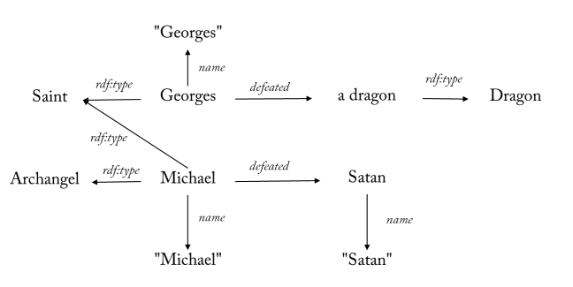
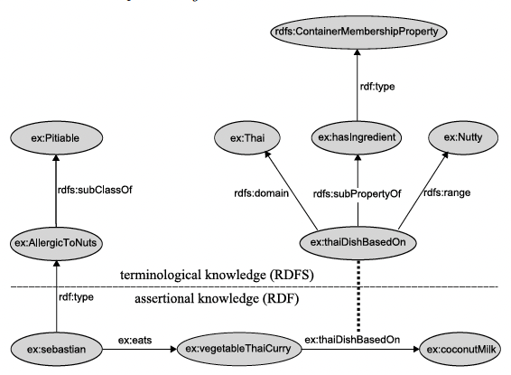
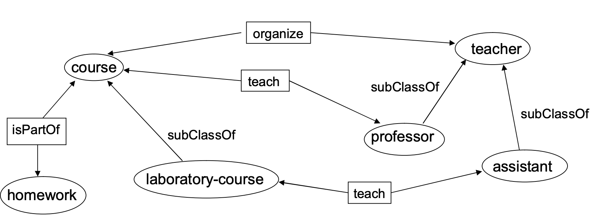
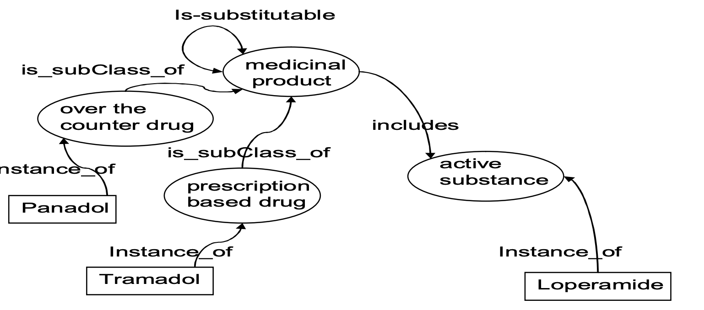

12 dạng bài · khuôn làm bài · lời giải đầy đủ bài tập tuần, 3 đề cũ, 3 đề luyện 8 câu · bản đen trắng
Cách tra khi thi: đọc câu hỏi → trang "Bắt đầu" (bảng Dấu hiệu → Dạng) → lật tới phần có khung mã dạng ở đầu trang (ví dụ [D8]) → chép khuôn → thay dữ liệu của đề.
Đọc trang này trước. Đi theo lộ trình, mỗi dòng mở một dạng bài.
| Dấu hiệu trong đề | Dạng | Đề cũ có ra | Ưu tiên |
|---|---|---|---|
| "Viết truy vấn SPARQL tìm…" (nghe nói 2.5đ) | D8 SPARQL | 3/3 đề | ★★★★ |
| "Tạo dữ liệu RDF / viết Turtle và vẽ đồ thị cho đoạn văn…" | D1 Turtle + đồ thị | 3/3 (luôn là Câu 1) | ★★★ |
| "Định nghĩa các lớp, thuộc tính bằng RDFS + OWL" / "biểu thức DL" / ontology | D5 OWL + DL | 3/3 | ★★★ |
| "Viết biểu thức đại số SPARQL, giải thích từng bước" | D9 Đại số | 3/3 (ý sau của câu SPARQL) | ★★★ |
| "Tầng nào (RDFS hay OWL) bổ sung ràng buộc để suy ra…" / "bộ-3 suy ra từ restriction" | D6 Suy diễn OWL | 2/3 | ★★ |
| "Tạo khuôn hình SHACL…", "nút nào được kiểm, vi phạm" | D10 SHACL | 2/3 | ★★ |
| "Viết các bộ-3 suy ra được trong RDFS" / "đúng hay sai (true/false/unknown)" | D4 Suy diễn RDFS | 1/3 | ★★ |
| "Chương trình Datalog… vẽ cây chứng minh… tìm điểm cố định" | D7 Datalog | 1/3 | ★★ |
| "Biểu diễn đồ thị sau bằng Turtle" / "Vẽ đồ thị cho các triple" / N-Triples / RDF/XML | D2 Chuyển đổi | nằm trong D1 | ★ |
| "Dùng RDF/RDFS biểu diễn: URI1 là lớp, có domain…" / "vẽ đồ thị schema" | D3 RDFS schema | nằm trong D5 | ★ |
| "Chứng minh bằng tableau", NNF, consistency, subsumption | D12 Tableau | chưa ra | ★ |
| "Chức năng của reasoner trong KB?", câu hỏi lý thuyết, LOD | D11 Lý thuyết | chưa ra riêng | ★ |
∀ (allValuesFrom), không phải range — range là toàn cục.some mà quên closure only khi đề nói "chỉ gồm".only riêng lẻ bị giao nhau ⇒ phải gộp only (A or B)."2"^^xsd:nonNegativeInteger (chuẩn OWL 2; slide thầy viết ^^xsd:integer — cả hai đều được chấp nhận); qualified: "ít nhất n" → owl:minQualifiedCardinality, "đúng n" → owl:qualifiedCardinality, "tối đa n" → owl:maxQualifiedCardinality, luôn kèm owl:onProperty + owl:onClass.subP rdfs:domain C không suy ra được bằng luật RDFS (→ unknown), nhưng ở mức cá thể vẫn "truyền": x subP y ⇒ rdfs7 ⇒ rdfs2 ⇒ x a C (slide: "inherited by sub properties"); không có inverse._:x ↦ ….¬∃R.C là ∀R.¬C; tách ≡ thành hai chiều; nhớ ghi số luật + chữ axiom; luật 3 áp cho cá thể có liên quan."Avatar"@en); ?x a :LớpCha trả rỗng vì không suy diễn ⇒ a/rdfs:subClassOf*; biến trong SELECT chưa GROUP BY; muốn đếm 0 phải OPTIONAL.; thẳng hàng; ghi chú # ngắn bên cạnh tiên đề quan trọng ("# only → allValuesFrom").Prefix, Turtle, SPARQL, luật RDFS, bảng OWL–DL, tableau, SHACL, Datalog. Cũng mở được bằng nút Tra nhanh ở góc phải dưới.
@prefix rdf: <http://www.w3.org/1999/02/22-rdf-syntax-ns#> .
@prefix rdfs: <http://www.w3.org/2000/01/rdf-schema#> .
@prefix owl: <http://www.w3.org/2002/07/owl#> .
@prefix xsd: <http://www.w3.org/2001/XMLSchema#> .
@prefix foaf: <http://xmlns.com/foaf/0.1/> .
@prefix dc: <http://purl.org/dc/elements/1.1/> .
@prefix dcterms: <http://purl.org/dc/terms/> . # một số lời giải dùng dcterms:
@prefix sh: <http://www.w3.org/ns/shacl#> .
@prefix : <http://example.org/> .
| Viết | Nghĩa |
|---|---|
:s :p :o . |
1 triple |
:s :p :o1 , :o2 . |
cùng s, p — nhiều object |
:s :p1 :o1 ; :p2 :o2 . |
cùng subject |
:s a :C . |
:s rdf:type :C |
[ :p :o ] / [] |
blank node |
( :a :b ) |
collection: rdf:first / rdf:rest / rdf:nil |
"Hà Nội"@vi, "10"^^xsd:integer, 10, "2024-01-01"^^xsd:date |
literal |
[ a rdf:Statement ; rdf:subject :s ; rdf:predicate :p ; rdf:object :o ] |
reification |
PREFIX : <http://example.org/>
SELECT DISTINCT ?x ?y (COUNT(?z) AS ?n)
WHERE {
?x a :C ; :p ?y . # khớp mẫu
OPTIONAL { ?x :label ?l FILTER(lang(?l) = "en") } # "nếu có": FILTER của phần này để TRONG
{ ?x :q ?z } UNION { ?x :r ?z } # "hoặc"
FILTER (?y > 1990)
FILTER NOT EXISTS { ?x :bad ?w } # "không có"
?x :p+ ?anc . # đường đi bắc cầu (+ ≥1, * ≥0)
}
GROUP BY ?x ?y HAVING (COUNT(?z) >= 2)
ORDER BY DESC(?n) LIMIT 10
| Đề nói | Dùng |
|---|---|
| "nếu có / để trống nếu không" | OPTIONAL |
| "hoặc" | UNION, hoặc FILTER (… || …), hoặc VALUES ?t { :A :B } |
| "không có / chưa" | FILTER NOT EXISTS { } hoặc MINUS { } |
| "đếm / mỗi / tổng / trung bình" | GROUP BY + COUNT / SUM / AVG / MIN / MAX |
| "ít nhất 2", "nhiều hơn" | HAVING (COUNT(?x) >= 2) |
| "tất cả kể cả gián tiếp" | property path :p+, rdfs:subClassOf* |
| "khẳng định / sinh triple mới" | CONSTRUCT { … } WHERE { … } |
| "có … không?" | ASK { … } |
| "chứa chữ / bắt đầu bằng" | FILTER regex(?s, "abc", "i"), CONTAINS, STRSTARTS |
| "sắp xếp / top" | ORDER BY DESC(?x) LIMIT k |
Dịch sang đại số (trong ra ngoài): BGP → Join (các nhóm nối nhau) → OPTIONAL = LeftJoin → UNION = Union → FILTER = Filter bọc cả nhóm chứa nó → GROUP BY = Extend(Group(…), ?n, COUNT(…)) → ORDER BY = OrderBy → SELECT ?x = Project → DISTINCT → LIMIT = Slice. OrderBy nằm trong Project.
:XShape a sh:NodeShape ;
sh:targetClass :X ; # nút được kiểm = mọi ?n a :X
sh:property [ sh:path :p ; sh:minCount 1 ; sh:maxCount 1 ;
sh:datatype xsd:integer ; sh:minExclusive 1900 ] ;
sh:property [ sh:path :q ; sh:class :Y ; sh:in ( :a :b ) ; sh:pattern "^A" ] .
B0 = dữ kiện cho sẵn → B1 = B0 + mọi dữ kiện suy ra từ B0 bằng 1 lần áp luật → B2 từ B1 → … dừng khi một bước không thêm gì: điểm cố định. Cây chứng minh: gốc = khẳng định, con = tiền đề của luật đã dùng, lá = dữ kiện.
| Luật | Nếu có | Thì suy ra | Nhớ nhanh |
|---|---|---|---|
| rdfs2 | p rdfs:domain C . x p y . |
x rdf:type C . |
domain |
| rdfs3 | p rdfs:range C . x p y . |
y rdf:type C . |
range (y không phải literal) |
| rdfs4a | x p y . |
x rdf:type rdfs:Resource . |
mọi thứ là Resource |
| rdfs4b | x p y . |
y rdf:type rdfs:Resource . |
|
| rdfs5 | p subPropertyOf q . q subPropertyOf r . |
p subPropertyOf r . |
subProp bắc cầu |
| rdfs6 | p rdf:type rdf:Property . |
p subPropertyOf p . |
subProp phản xạ |
| rdfs7 | p subPropertyOf q . x p y . |
x q y . |
kế thừa property |
| rdfs8 | C rdf:type rdfs:Class . |
C subClassOf rdfs:Resource . |
|
| rdfs9 | C subClassOf D . x rdf:type C . |
x rdf:type D . |
kế thừa kiểu |
| rdfs10 | C rdf:type rdfs:Class . |
C subClassOf C . |
subClass phản xạ |
| rdfs11 | C subClassOf D . D subClassOf E . |
C subClassOf E . |
subClass bắc cầu |
| rdfs12 | p rdf:type rdfs:ContainerMembershipProperty . |
p subPropertyOf rdfs:member . |
|
| rdfs13 | D rdf:type rdfs:Datatype . |
D subClassOf rdfs:Literal . |
|
| rdf1 (1.1: rdfD2) | x p y . |
p rdf:type rdf:Property . |
|
| se1 (RDF 1.0) | x p y . |
x p _:b . |
thay object bằng blank node |
| se2 (RDF 1.0) | x p y . |
_:b p y . |
thay subject bằng blank node |
rdf:type rdfs:domain rdfs:Resource, rdfs:domain rdfs:domain rdf:Property, rdfs:range rdfs:domain rdf:Property, rdfs:subClassOf rdfs:domain rdfs:Class, rdfs:subPropertyOf rdfs:range rdf:Property, rdfs:Datatype rdfs:subClassOf rdfs:Class… ⇒ mọi URI đều rdf:type rdfs:Resource.subP rdfs:domain C từ domain/range của property cha (→ hỏi bộ-3 đó thì trả lời UNKNOWN) — nhưng ở mức cá thể domain/range vẫn "truyền": x subP y ⇒ rdfs7 ⇒ x P y ⇒ rdfs2 ⇒ x a C (rdfs3 tương tự cho range; slide: "inherited by sub properties"); domain không đi lên superclass; không có inverse; không có phủ định. (Các luật ext1–ext4 kiểu "domain kế thừa" chỉ có trong ngữ nghĩa extensional của RDF 1.0 — không dùng khi làm bài.)(bổ sung, W3C OWL 2 Manchester Syntax & Primer — slide không dạy Manchester nhưng đây là cú pháp Protégé hiển thị)
Frame Manchester:
Class: Professor
SubClassOf: Teacher, teaches some Course
EquivalentTo: …
DisjointWith: Assistant
ObjectProperty: teaches
Domain: Teacher
Range: Course
Characteristics: Functional, InverseFunctional, Transitive, Symmetric, Asymmetric, Reflexive, Irreflexive # danh sách từ khoá, không dùng hết cùng lúc — vài đặc tính mâu thuẫn nhau
InverseOf: isTaughtBy
SubPropertyOf: involvedIn
SubPropertyChain: hasParent o hasParent
DataProperty: credits
Domain: Course
Range: xsd:integer
Characteristics: Functional
Individual: hung
Types: Professor
Facts: teaches SemanticWeb, not teaches MachineLearning
SameAs: … DifferentFrom: …
DisjointClasses: Course, Teacher, Homework
DifferentIndividuals: hung, lan, minh
Thứ tự ưu tiên (lỏng → chặt): or < and < not < some/only/value/min/max/exactly ⇒ not p some C = ¬∃p.C; p some A and B = (∃p.A) ⊓ B ⇒ filler phức phải có ngoặc: hasTopping only (CheeseTopping or VegetableTopping).
| Ý nghĩa | DL | Manchester | Turtle |
|---|---|---|---|
| giao | A ⊓ B |
A and B |
[ a owl:Class ; owl:intersectionOf ( :A :B ) ] |
| hợp | A ⊔ B |
A or B |
[ a owl:Class ; owl:unionOf ( :A :B ) ] |
| phần bù | ¬A |
not A |
[ a owl:Class ; owl:complementOf :A ] |
| tồn tại | ∃p.C |
p some C |
[ a owl:Restriction ; owl:onProperty :p ; owl:someValuesFrom :C ] |
| với mọi | ∀p.C |
p only C |
… owl:allValuesFrom :C ] |
| giá trị | ∃p.{a} |
p value a |
… owl:hasValue :a ] |
| ít nhất n (định tính) | ≥n p.C |
p min n C |
… owl:minQualifiedCardinality "n"^^xsd:nonNegativeInteger ; owl:onClass :C ] |
| đúng n (định tính) | =n p.C |
p exactly n C |
… owl:qualifiedCardinality "n"^^xsd:nonNegativeInteger ; owl:onClass :C ] |
| tối đa n (định tính) | ≤n p.C |
p max n C |
… owl:maxQualifiedCardinality "n"^^xsd:nonNegativeInteger ; owl:onClass :C ] |
| tối đa n | ≤n p |
p max n |
… owl:maxCardinality "n"^^xsd:nonNegativeInteger ] |
| đúng n | =n p |
p exactly n |
… owl:cardinality "n"^^xsd:nonNegativeInteger ] |
| liệt kê | {a, b} |
{a, b} |
[ a owl:Class ; owl:oneOf ( :a :b ) ] |
| nghịch đảo | p⁻ |
inverse p |
[ owl:inverseOf :p ] |
| tự thân | ∃p.Self |
p Self |
… owl:hasSelf true ] |
| dữ liệu có ngưỡng | ∃age.int[≥18] |
age some xsd:integer[>= 18] |
owl:onDatatype xsd:integer ; owl:withRestrictions ( [ xsd:minInclusive 18 ] ) |
Lỗi cú pháp Turtle hay gặp: cardinality viết "n"^^xsd:nonNegativeInteger (chuẩn OWL 2; slide thầy viết ^^xsd:integer — cả hai đều được chấp nhận); đã dùng owl:onClass thì phải dùng …QualifiedCardinality; intersectionOf/unionOf/oneOf/members/disjointUnionOf/propertyChainAxiom nhận danh sách ( ), còn complementOf nhận một lớp.
| Nr | Axiom | Action |
|---|---|---|
| 1 | C(a) |
Add C(a) |
| 2 | R(a,b) |
Add R(a,b) |
| 3 | C (axiom toàn cục) |
Choose an individual a, add C(a) |
| 4 | (C ⊓ D)(a) |
Add C(a) and D(a) |
| 5 | (C ⊔ D)(a) |
Split tableau into T1 and T2. Add C(a) to T1, D(a) to T2 |
| 6 | (∃R.C)(a) |
Add R(a,b) and C(b) for a new individual b |
| 7 | (∀R.C)(a) |
For all b with R(a,b) ∈ T: add C(b) |
Dịch: Add = thêm vào nhánh đang xét · Split = tách thành 2 nhánh · Choose an individual = chọn một cá thể (nên chọn cá thể đang có ∀/∃) · For all b with R(a,b) ∈ T = với mọi b đã nối với a qua R.
X và ¬X (ví dụ Person(Peter) và ¬Person(Peter)).Woman ⊑ ∃hasMother.Woman). Quy tắc của slide (tr. 63: "If rule 6 was used, block A for T"): đã áp luật 6 cho một assertion (∃R.C)(a) thì block chính assertion đó trong nhánh T — mỗi assertion ∃ chỉ sinh cá thể mới một lần (không phải "một lần cho mỗi cá thể"). Cá thể mới b có thể sinh assertion ∃ mới ⇒ reasoner thật dùng thêm subset blocking (b bị chặn khi tập khái niệm của b ⊆ tập của tổ tiên) để chắc chắn dừng.C ⊑ D ⟶ ¬C ⊔ D (vì C(x)→D(x) ≡ ¬C(x) ∨ D(x)).C ≡ D ⟶ C ⊑ D và D ⊑ C ⟶ ¬C ⊔ D và ¬D ⊔ C.| Biểu thức | NNF |
|---|---|
¬¬C |
C |
¬(C ⊓ D) |
¬C ⊔ ¬D (De Morgan) |
¬(C ⊔ D) |
¬C ⊓ ¬D (De Morgan) |
¬∃R.C |
∀R.¬C |
¬∀R.C |
∃R.¬C |
C ⊓ D ⊑ ⊥ (disjoint) |
¬C ⊔ ¬D |
C ⊑ ¬D |
¬C ⊔ ¬D |
∃R.⊤ ⊑ C (domain) |
∀R.⊥ ⊔ C (= ¬∃R.⊤ ⊔ C) |
⊤ ⊑ ∀R.C (range) |
∀R.C |
Đề cho một đoạn văn → viết Turtle và vẽ đồ thị RDF, liệt kê HẾT các triple.
Một triple = chủ thể (subject) — vị từ (predicate) — đối tượng (object). Một đồ thị RDF = tập các triple. Mỗi triple là một cạnh có hướng, có nhãn từ subject sang object.
(subject) ──predicate──▶ (object)
:hung ──:teaches───▶ :SemanticWeb
| Vị trí | Được phép là | KHÔNG được là |
|---|---|---|
| Subject | IRI, blank node | literal |
| Predicate | chỉ IRI | blank node, literal |
| Object | IRI, blank node, literal | — |
3 loại term:
| Loại | Ví dụ | Vẽ trên đồ thị (quy ước của thầy) |
|---|---|---|
| IRI (định danh toàn cục) | <http://ex.org/hung>, :hung, rdf:type |
hình elip, ghi tên IRI bên trong |
| Blank node (nút vô danh, "có một cái gì đó") | _:b1, [ ] |
hình elip rỗng (không ghi gì) |
| Literal (giá trị) | "Hà Nội", "Hanoi"@en, 10, "2024-01-01"^^xsd:date |
hình chữ nhật, ghi giá trị |
Cạnh = mũi tên từ subject tới object, nhãn = predicate (rdf:type viết tắt a).
| Cú pháp | Nghĩa | Ví dụ |
|---|---|---|
@prefix ex: <http://ex.org/> . |
khai báo tiền tố | ex:hung = <http://ex.org/hung> |
. |
kết thúc triple/khối | :a :p :b . |
; |
cùng subject, đổi predicate | :a :p :b ; :q :c . |
, |
cùng subject + predicate, nhiều object | :a :p :b , :c . |
a |
viết tắt rdf:type |
:hung a :Teacher . |
[ ... ] |
blank node có thuộc tính | :nva :score [ :value 10 ] . |
( ... ) |
collection (danh sách đóng, có thứ tự) | :c :ref ( :b1 :b2 ) . |
"..."@vi |
literal có ngôn ngữ | "Hà Nội"@vi |
"..."^^xsd:integer / 10 |
literal có kiểu | 10 = "10"^^xsd:integer (khác "10"^^xsd:int — xsd:int là kiểu khác) |
Ví dụ đầy đủ và đồ thị của nó:
@prefix : <http://ex.org/> .
@prefix foaf: <http://xmlns.com/foaf/0.1/> .
:hung a :Teacher ;
foaf:name "Nguyễn Hùng" ;
:teaches :SemanticWeb , :DataIntegration .
:SemanticWeb :room "B1-404" .
| Đề nói | Dùng | Vì sao |
|---|---|---|
| "A nghĩ / cảm thấy / nhận xét / cho rằng …", "theo X thì …" (khi là ý kiến) | Reification rdf:Statement |
phát biểu về một phát biểu, KHÔNG khẳng định nó đúng |
| "theo X, thứ hạng là a, b, c" (xếp hạng có nguồn — TIOBE, đề 6390 C1c) | Collection gắn vào nút xếp hạng :tiobe2023 a :Ranking ; :source :TIOBE ; :order ( :C :CPP :Python :Java ) |
giữ thứ tự + ghi nguồn; cách khác: rdf:Seq, hoặc reification nếu câu là ý kiến |
| "… gồm có a, b, c" / danh sách / thứ tự / "nhóm tác giả" | Collection ( a b c ) |
danh sách đóng, có thứ tự |
| "điểm 10 môn X", "học ở phòng … vào ngày …" (quan hệ nhiều thành phần) | Blank node n-ngôi [ :value 10 ; :course :X ] |
RDF chỉ có quan hệ 2 ngôi |
| "một giáo viên (không rõ là ai)", "một công ty nào đó" | blank node [ a :Teacher ] |
thực thể không có tên |
| tên, tuổi, năm, điểm | literal | giá trị, không phải tài nguyên |
Reification: biến triple S P O thành một nút có 4 cạnh:
@prefix : <http://ex.org/> .
@prefix rdf: <http://www.w3.org/1999/02/22-rdf-syntax-ns#> .
:An :thinks [ a rdf:Statement ;
rdf:subject :CPP ;
rdf:predicate rdf:type ;
rdf:object :InterestingLanguage ] .
Collection ( :a :b ) thực chất là chuỗi blank node rdf:first / rdf:rest, kết thúc ở rdf:nil:
@prefix : <http://ex.org/> .
:book :writtenBy ( :gamma :helm :johnson ) .
Xếp hạng "theo X" (đề 6390 C1c — cách chính): collection có thứ tự gắn vào một nút xếp hạng mang nguồn:
@prefix : <http://ex.org/> .
:tiobe2023 a :Ranking ; :source :TIOBE ; :order ( :C :CPP :Python :Java ) .
Container (danh sách mở): rdf:Bag (không thứ tự), rdf:Seq (có thứ tự), rdf:Alt (lựa chọn), phần tử gắn bằng rdf:_1, rdf:_2… — cách thay thế cho xếp hạng:
@prefix : <http://ex.org/> .
@prefix rdf: <http://www.w3.org/1999/02/22-rdf-syntax-ns#> .
:tiobe2023 :order [ a rdf:Seq ; rdf:_1 :C ; rdf:_2 :CPP ; rdf:_3 :Python ; rdf:_4 :Java ] .
Collection ( ) |
Container Bag/Seq/Alt | |
|---|---|---|
| Đóng/mở | đóng (có rdf:nil, không thêm được) |
mở (ai cũng thêm rdf:_5 được) |
| Cấu trúc | rdf:first / rdf:rest |
rdf:_1, rdf:_2… |
| Khi nào dùng | "gồm đúng các …"; xếp hạng (gắn vào nút :Ranking có nguồn — cách chính) |
"trong đó có …"; xếp hạng bằng rdf:Seq (cách thay thế) |
N-ary (quan hệ nhiều ngôi) bằng blank node:
@prefix : <http://ex.org/> .
:nva a :Student ; :score [ :value 10 ; :course :sw_course ] .
_:x và [ … ]. Đổi tên _:x → _:y không đổi nghĩa.# fragment
:Recipe :hasIngredient [ :ingredient :Sugar ; :amount [ :value 100 ; :unit :Gram ] ] .
rdf:Statement + rdf:subject, rdf:predicate, rdf:object.<< s p o >> (xem trang D11), PROV-O (prov:wasDerivedFrom, prov:wasAttributedTo).:Munich, :München).:Peter :fatherOf :Julia , :Mary . — Peter có mấy con? Ít nhất 1 (Julia và Mary có thể là một người — vì không có UNA), có thể nhiều hơn 2 (OWA). Muốn kết luận ≥ 2 con phải thêm :Julia owl:differentFrom :Mary.:, rdf:, rdfs:, xsd:, foaf: nếu dùng).:sw_course, :nva…); thực thể không tên → blank node.a :Lớp (rdf:type) + tên/nhãn (rdfs:label / foaf:name literal).:Ranking có :source; nhiều thành phần → n-ary.; , [ ] ( ).Bảng chọn cấu trúc: đề nói gì → viết gì
| Đề nói… | Dùng cấu trúc |
|---|---|
| "A nghĩ / cho rằng / nhận xét / cảm thấy rằng X" | Reification: [a rdf:Statement; rdf:subject …; rdf:predicate …; rdf:object …], A trỏ tới nút đó |
| "gồm / danh sách / theo thứ tự / nhóm tác giả" | Collection ( :a :b :c ) (bung ra rdf:first / rdf:rest / rdf:nil) hoặc rdf:Seq/rdf:Bag |
| "đạt điểm 10 môn X", "đặt lịch ngày …" (quan hệ ≥ 3 thành phần) | n-ary qua blank node: :sv :score [ :value 10 ; :course :X ] |
| "một người nào đó / không rõ tên" | Blank node [] |
| tên, tiêu đề, số, ngày | Literal (hình chữ nhật); ngày/số có ^^xsd:…, ngôn ngữ @vi/@en |
| "là một …" | rdf:type (a) — mọi thực thể đều nên có a :Lớp |
Dạng: D1 / D11 · (ghi chú của thầy: "câu rdf mà viết triple thì … gen hết các khả năng có của triple, tại câu hỏi bắt liệt kê ra hết")
Bảng vị trí S / P / O
| Vị trí | IRI | Blank node | Literal thường "x" |
Literal ngôn ngữ "x"@vi |
Literal kiểu "10"^^xsd:int |
|---|---|---|---|---|---|
| Subject | ✔ | ✔ | ✘ | ✘ | ✘ |
| Predicate | ✔ | ✘ | ✘ | ✘ | ✘ |
| Object | ✔ | ✔ | ✔ | ✔ | ✔ |
⇒ Có 2 × 1 × 5 = 10 kiểu triple hợp lệ (S ∈ {IRI, blank}, P = IRI, O ∈ {IRI, blank, literal thường, literal ngôn ngữ, literal có kiểu}).
Checklist liệt kê hết triple cho một câu (đánh ■ từng mục):
:x a :Lớp (kể cả thực thể chỉ xuất hiện ở object).rdfs:label, foaf:name, :title (có thể kèm @vi / @en).^^xsd:… nếu có.a rdfs:Class, a rdf:Property, domain, range.Dạng: D1 · Nguồn: Exercises-en Part 1 Ex1 (ảnh bài tập 2) – mỗi câu ≥ 3 triple
Đề: (1) SOICT is located at No. 1, Dai Co Viet, Hai Ba Trung, Hanoi. (2) Website https://soict.hust.edu.vn/ is the homepage of SOICT. (3) Resource URI1 is a course on Semantic Web, taught by Lecturer Hung in room B1-404. Viết dưới dạng ngôn ngữ tự nhiên (mỗi triple một câu) rồi viết RDF.
Câu tự nhiên (mỗi dòng 1 triple):
@prefix : <http://example.org/> .
@prefix rdfs: <http://www.w3.org/2000/01/rdf-schema#> .
@prefix foaf: <http://xmlns.com/foaf/0.1/> .
@prefix dc: <http://purl.org/dc/elements/1.1/> .
:SOICT a :School ; foaf:name "SOICT" ;
:locatedAt [ a :Address ; :number "No. 1" ; :street "Dai Co Viet" ; :district "Hai Ba Trung" ; :city :Hanoi ] ;
foaf:homepage <https://soict.hust.edu.vn/> .
:Hanoi a :City ; rdfs:label "Hà Nội"@vi .
<https://soict.hust.edu.vn/> a foaf:Document ; :homepageOf :SOICT ; dc:title "SOICT – HUST" .
:URI1 a :Course ; :subject "Semantic Web"@en ; :taughtBy :Hung ; :room :B1-404 .
:Hung a :Lecturer ; foaf:name "Hung" ; :teaches :URI1 .
:B1-404 a :Room ; rdfs:label "B1-404" .
Đếm: câu 1 có 10 triple, câu 2 có 3–4 triple, câu 3 có 9 triple ⇒ mọi câu đều ≥ 3 triple. Khi đi thi: viết đủ kiểu, tên, quan hệ chính, quan hệ ngược.
flowchart LR
doc1([ex:doc1]) -- dcterms:creator --> minh["#quot;Minh#quot;"]
doc2([ex:doc2]) -- dcterms:creator --> author((" "))
doc3([ex:doc3]) -- dcterms:creator --> author
stmt((" ")) -- rdf:type --> st([rdf:Statement])
stmt -- rdf:subject --> doc1
stmt -- rdf:predicate --> pub([dcterms:publisher])
stmt -- rdf:object --> w3c([https://www.w3.org/])
stmt -- dcterms:source --> doc3
@prefix rdf: <http://www.w3.org/1999/02/22-rdf-syntax-ns#> .
@prefix dcterms: <http://purl.org/dc/terms/> .
@prefix ex: <http://example.org/> .
ex:doc1 dcterms:creator "Minh" .
ex:doc2 dcterms:creator _:author . # cùng MỘT tác giả không rõ danh tính -> cùng một blank node
ex:doc3 dcterms:creator _:author .
_:stmt a rdf:Statement ; # doc3 NÓI RẰNG doc1 do W3C xuất bản -> reification
rdf:subject ex:doc1 ;
rdf:predicate dcterms:publisher ;
rdf:object <https://www.w3.org/> ;
dcterms:source ex:doc3 .
<?xml version="1.0" encoding="UTF-8"?>
<rdf:RDF xmlns:rdf="http://www.w3.org/1999/02/22-rdf-syntax-ns#"
xmlns:dcterms="http://purl.org/dc/terms/">
<rdf:Description rdf:about="http://example.org/doc1">
<dcterms:creator>Minh</dcterms:creator>
</rdf:Description>
<rdf:Description rdf:about="http://example.org/doc2">
<dcterms:creator rdf:nodeID="author"/>
</rdf:Description>
<rdf:Description rdf:about="http://example.org/doc3">
<dcterms:creator rdf:nodeID="author"/>
</rdf:Description>
<rdf:Statement rdf:nodeID="stmt">
<rdf:subject rdf:resource="http://example.org/doc1"/>
<rdf:predicate rdf:resource="http://purl.org/dc/terms/publisher"/>
<rdf:object rdf:resource="https://www.w3.org/"/>
<dcterms:source rdf:resource="http://example.org/doc3"/>
</rdf:Statement>
</rdf:RDF>
Điểm ăn điểm: (1) blank node dùng chung cho doc2/doc3 (không phải hai blank node khác nhau — vì "cùng một tác giả"); (2) reification thay vì khẳng định trực tiếp ex:doc1 dcterms:publisher <W3C>; (3) biết dcterms:creator có range dcterms:Agent nên cách chặt chẽ hơn là ex:doc1 dcterms:creator [ a dcterms:Agent ; rdfs:label "Minh" ] (literal hợp lệ với dc: 1.1 cũ).
Dạng: D1 · Nguồn: 2023-C1
Tạo dữ liệu RDF theo cú pháp Turtle biểu diễn các thông tin, sau đó vẽ đồ thị RDF tương ứng:
Học phần The Semantic Web có danh mục sách tham khảo bao gồm: Foundations of Semantic Web Technologies, Learning SPARQL, Semantic Web for the Working Ontologist. Sinh viên Nguyễn Văn A đã đạt điểm 10 học phần này. Thầy giáo nhận xét Nguyễn Văn A là 1 sinh viên xuất sắc.
!Lưu ý: Tự tạo IRI cho các thành phần (khóa học, sách và sinh viên), chỉ viết không quá 20 bộ-3 cơ bản/20 cạnh đồ thị RDF.
Tách đề thành 3 mệnh đề và chọn cấu trúc theo dấu hiệu của từng mệnh đề:
| Cụm từ trong đề | Cấu trúc RDF |
|---|---|
| "danh mục … bao gồm A, B, C" (một danh sách) | collection ( :a :b :c ) → bung thành rdf:first / rdf:rest / rdf:nil |
| "đạt điểm 10 học phần này" (quan hệ 3 ngôi: SV – điểm – học phần) | blank node n-ngôi :score [ :value 10 ; :course :sw_course ] |
| "Thầy giáo nhận xét A là …" (một câu nói về một câu khác) | reification [ a rdf:Statement ; rdf:subject … ; rdf:predicate … ; rdf:object … ] |
| "thầy giáo" không có tên | blank node [ a :Teacher ] |
Cách đếm triple: mỗi cạnh trên đồ thị là 1 triple. Collection 3 phần tử tốn 6 cạnh (3 first + 3 rest). Đề giới hạn 20 cạnh, lời giải dưới đây dùng 19 cạnh.
Quy ước vẽ: IRI vẽ hình elip có tên, blank node vẽ elip rỗng, literal vẽ hình chữ nhật, cạnh là mũi tên có nhãn predicate.
@prefix : <http://semweb.edu.vn/exam#> .
@prefix rdf: <http://www.w3.org/1999/02/22-rdf-syntax-ns#> .
@prefix rdfs: <http://www.w3.org/2000/01/rdf-schema#> .
:sw_course :ref (:foswt :learning_sparql :sw_ontologist) ;
rdfs:label "The Semantic Web" .
:nva a :Student ;
:score [ :value 10 ; :course :sw_course ] .
[ a :Teacher ; :course :sw_course ] :comment [ a rdf:Statement ;
rdf:subject :nva ; rdf:predicate rdf:type ; rdf:object :ExcellentStudent ] .
Giải thích để ăn điểm:
:ref ( … ): danh sách sách tham khảo là đóng và có thứ tự, nên dùng collection. Đồ thị vẽ thành chuỗi blank node nối bằng rdf:first / rdf:rest, kết thúc ở rdf:nil.:score [ :value 10 ; :course :sw_course ]: điểm là quan hệ 3 ngôi (sinh viên, giá trị, học phần), nên dùng một blank node trung gian.rdf:Statement. Thầy là blank node vì đề không cho tên.:foswt rdfs:label "Foundations of Semantic Web Technologies". Làm vậy thì tốn thêm cạnh, phải đếm lại để không vượt 20 cạnh.Dạng: D1 · Nguồn: 2022-C1
Vẽ đồ thị RDF và viết các bộ-3 theo cú pháp Turtle biểu diễn thông tin trong mô tả sau: Sách Design Patterns: Elements of Reusable Object-Oriented Software được viết bởi 1 nhóm tác giả bao gồm Erich Gamma, Richard Helm, Ralph Johnson và John Vlissides. Nguyễn Văn A cảm thấy đây là 1 cuốn sách hay.
( … ).rdf:Statement.b:name dạng literal. Sách được gắn a b:Book và b:title.@prefix b: <http://exam.hust.edu.vn/book/> .
@prefix rdf: <http://www.w3.org/1999/02/22-rdf-syntax-ns#> .
b:nguyen-van-a b:name "Nguyễn Văn A" ;
b:feels [ a rdf:Statement ;
rdf:subject b:design-patterns ;
rdf:predicate rdf:type ;
rdf:object b:GoodBook ] .
b:design-patterns a b:Book ;
b:title "Design Patterns: Elements of Reusable Object-Oriented Software" ;
b:writtenBy (b:erich-gamma b:richard-helm b:ralph-johnson b:john-vlissides) .
b:erich-gamma b:name "Erich Gamma" .
b:richard-helm b:name "Richard Helm" .
b:ralph-johnson b:name "Ralph Johnson" .
b:john-vlissides b:name "John Vlissides" .
Trên đồ thị, b:writtenBy trỏ tới blank node đầu tiên của chuỗi 4 nút. Mỗi nút có rdf:first trỏ tới một tác giả và rdf:rest trỏ tới nút tiếp theo, nút cuối có rdf:rest trỏ tới rdf:nil. Mỗi tác giả có thêm cạnh b:name trỏ tới một literal (hình chữ nhật).
Dạng: D1 · Nguồn: 6390-C1
Hãy tạo biểu diễn RDF bằng Turtle và vẽ đồ thị RDF tương ứng cho những nội dung sau: (a) C++ là 1 ngôn ngữ lập trình, được sáng tạo bởi Bjarne Stroustrup. (b) An (1 sinh viên giả định) nghĩ rằng C++ rất thú vị và tương đối dễ học. (c) Theo chỉ số TIOBE C, C++, Python, Java đang là những ngôn ngữ được sử dụng phổ biến nhất.
rdf:Statement.( :C :CPP :Python :Java ) gắn vào một nút bảng xếp hạng. Cách khác: dùng rdf:Seq với rdf:_1 … rdf:_4.(a)
@prefix : <http://semweb.edu.vn/exam#> .
@prefix rdfs: <http://www.w3.org/2000/01/rdf-schema#> .
:CPP a :ProgrammingLanguage ;
rdfs:label "C++" ;
:createdBy :bjarne_stroustrup .
:bjarne_stroustrup a :Person ;
:name "Bjarne Stroustrup" .
(b)
@prefix : <http://semweb.edu.vn/exam#> .
@prefix rdf: <http://www.w3.org/1999/02/22-rdf-syntax-ns#> .
:an a :Student ; :name "An" ;
:thinks [ a rdf:Statement ;
rdf:subject :CPP ; rdf:predicate rdf:type ; rdf:object :InterestingLanguage ] ,
[ a rdf:Statement ;
rdf:subject :CPP ; rdf:predicate :learningDifficulty ; rdf:object :RelativelyEasy ] .
(c)
@prefix : <http://semweb.edu.vn/exam#> .
@prefix rdfs: <http://www.w3.org/2000/01/rdf-schema#> .
:tiobe_index a :Ranking ;
rdfs:label "TIOBE index" ;
:mostPopular (:C :CPP :Python :Java) .
Giải thích:
:CPP a :InterestingLanguage. Viết như vậy là khẳng định một sự thật, trong khi đề chỉ nói đó là ý kiến của An. Phải dùng reification.:C a :ProgrammingLanguage . cho cả 4 ngôn ngữ.Cách viết khác cho (c) bằng container:
:tiobe_index :mostPopular [ a rdf:Seq ; rdf:_1 :C ; rdf:_2 :CPP ; rdf:_3 :Python ; rdf:_4 :Java ] .
Đề cho đồ thị → viết Turtle / N-Triples / RDF-XML, hoặc ngược lại.
Câu: "Georges là một Saint, tên "Georges", đã đánh bại một con rồng (blank node) thuộc lớp Dragon."
@prefix : <http://example.org/> .
@prefix foaf: <http://xmlns.com/foaf/0.1/> .
:Georges a :Saint ; foaf:name "Georges" ; :defeated [ a :Dragon ] .
N-Triples (mỗi dòng 1 triple, IRI đầy đủ trong < >, blank node _:x, kết thúc .):
<http://example.org/Georges> <http://www.w3.org/1999/02/22-rdf-syntax-ns#type> <http://example.org/Saint> .
<http://example.org/Georges> <http://xmlns.com/foaf/0.1/name> "Georges" .
<http://example.org/Georges> <http://example.org/defeated> _:d .
_:d <http://www.w3.org/1999/02/22-rdf-syntax-ns#type> <http://example.org/Dragon> .
RDF/XML:
<rdf:RDF xmlns:rdf="http://www.w3.org/1999/02/22-rdf-syntax-ns#"
xmlns:foaf="http://xmlns.com/foaf/0.1/"
xmlns:ex="http://example.org/">
<ex:Saint rdf:about="http://example.org/Georges">
<foaf:name>Georges</foaf:name>
<ex:defeated>
<ex:Dragon/> <!-- nút lồng không rdf:about = blank node -->
</ex:defeated>
</ex:Saint>
</rdf:RDF>
| Thành phần | Turtle | N-Triples | RDF/XML |
|---|---|---|---|
| IRI subject | :Georges |
<http://…/Georges> |
rdf:about="…" |
| Kiểu | a :Saint |
<…#type> <…Saint> |
tên thẻ <ex:Saint …> hoặc <rdf:type rdf:resource="…"/> |
| IRI object | :p :o |
<…p> <…o> |
<ex:p rdf:resource="…o"/> |
| Literal | "x"@en |
"x"@en |
<ex:p xml:lang="en">x</ex:p> |
| Blank node | [ ], _:b |
_:b |
thẻ lồng / rdf:nodeID="b" |
| Collection | ( :a :b ) |
bung first/rest | rdf:parseType="Collection" |
| Dạng | Đặc điểm cần nhớ |
|---|---|
| N-Triples | mỗi dòng một triple, URI đầy đủ <…>, kết thúc .; không prefix, không a, ;, ,, [], () |
| Turtle | @prefix p: <…> . (hoặc PREFIX p: <…> không dấu chấm); a = rdf:type; ; lặp subject; , lặp subject+predicate; [ … ] blank node; ( … ) danh sách; 42 = xsd:integer, 4.2 = xsd:decimal, 4.2e0 = xsd:double, true = xsd:boolean |
| RDF/XML | rdf:RDF gốc; rdf:Description rdf:about="URI"; object là URI → rdf:resource="URI"; blank node dùng chung → rdf:nodeID="x"; lồng rdf:Description không about = blank node; rdf:datatype="URI đầy đủ", xml:lang="vi"; chu trình phải dùng tham chiếu, không lồng được |
| JSON-LD | @context, @id, @type, @value, @language; node không @id = blank node |
RDF/XML — bảng tra nhanh (bổ sung, W3C RDF 1.1 XML Syntax):
| Muốn viết | RDF/XML |
|---|---|
| object là URI | <ex:homePage rdf:resource="http://…"/> |
| object là literal | <ex:name>Minh</ex:name> |
| literal có ngôn ngữ | <dc:title xml:lang="vi">Truyện Kiều</dc:title> |
| literal có kiểu | <ex:age rdf:datatype="http://www.w3.org/2001/XMLSchema#integer">42</ex:age> |
| kiểu của subject | <rdf:type rdf:resource="…#Person"/> hoặc typed node <ex:Person rdf:about="…"> |
| blank node dùng nhiều lần | rdf:nodeID="author" ở cả property element lẫn rdf:Description |
| blank node dùng một lần | lồng <rdf:Description>…</rdf:Description> hoặc rdf:parseType="Resource" |
| danh sách đóng | rdf:parseType="Collection" (chỉ chứa node, không literal) |
| container | <rdf:Bag>/<rdf:Seq>/<rdf:Alt> + <rdf:li> (→ rdf:_1, rdf:_2…) |
| reify triple | rdf:ID="t1" trên property element (trên node element thì rdf:ID chỉ là #t1) |
_:b1 hoặc [ ]; chữ nhật → literal "…".;, cùng P bằng ,.; , a [ ] ( )) thành triple đầy đủ.[ ] = 1 nút rỗng MỚI).[] foaf:knows :Minh → blank node là subject.Luyện tay: mở Bảng vẽ ở thanh bên, vẽ đồ thị của đề → Turtle tự sinh để đối chiếu.

@prefix : <http://example.org/> .
@prefix rdf: <http://www.w3.org/1999/02/22-rdf-syntax-ns#> .
@prefix foaf: <http://xmlns.com/foaf/0.1/> .
:Georges rdf:type :Saint ;
foaf:name "Georges" ;
:defeated [ rdf:type :Dragon ] . # "a dragon" = blank node (không có tên)
:Michael rdf:type :Saint , :Archangel ;
foaf:name "Michael" ;
:defeated :Satan .
:Satan foaf:name "Satan" .
Bẫy: nút "a dragon" viết thường, không phải URI → blank node; Michael có hai rdf:type. Đồ thị có 9 triple.
<?xml version="1.0"?>
<rdf:RDF xmlns:rdf="http://www.w3.org/1999/02/22-rdf-syntax-ns#"
xmlns:foaf="http://xmlns.com/foaf/0.1/"
xmlns:ex="http://example.org/">
<ex:Saint rdf:about="http://example.org/Georges">
<foaf:name>Georges</foaf:name>
<ex:defeated>
<ex:Dragon/>
</ex:defeated>
</ex:Saint>
<ex:Saint rdf:about="http://example.org/Michael">
<rdf:type rdf:resource="http://example.org/Archangel"/>
<foaf:name>Michael</foaf:name>
<ex:defeated>
<rdf:Description rdf:about="http://example.org/Satan">
<foaf:name>Satan</foaf:name>
</rdf:Description>
</ex:defeated>
</ex:Saint>
</rdf:RDF>
(<ex:Dragon/> lồng không có rdf:about = blank node có kiểu Dragon — typed node element.)
flowchart LR
Minh([:Minh]) -- rdf:type --> Teacher([:Teacher])
Minh -- :teaches --> sw["#quot;Semantic Web#quot;"]
Minh -- :teaches --> di["#quot;Data Integration#quot;"]
Minh -- foaf:member --> SOICT([:SOICT])
b1((" ")) -- foaf:knows --> Minh
b1 -- foaf:member --> b2((" "))
b2 -- rdf:type --> Company([:Company])
Đọc thành lời: Minh là giáo viên, dạy "Semantic Web" và "Data Integration", là thành viên SOICT. Có một người (không rõ là ai) quen Minh và là thành viên của một công ty nào đó. — 7 triple, 2 blank node.
N-Triples:
<http://example.org/Minh> <http://www.w3.org/1999/02/22-rdf-syntax-ns#type> <http://example.org/Teacher> .
<http://example.org/Minh> <http://example.org/teaches> "Semantic Web" .
<http://example.org/Minh> <http://example.org/teaches> "Data Integration" .
<http://example.org/Minh> <http://xmlns.com/foaf/0.1/member> <http://example.org/SOICT> .
_:b1 <http://xmlns.com/foaf/0.1/knows> <http://example.org/Minh> .
_:b1 <http://xmlns.com/foaf/0.1/member> _:b2 .
_:b2 <http://www.w3.org/1999/02/22-rdf-syntax-ns#type> <http://example.org/Company> .
Đề bắt khai báo lớp, thuộc tính, domain/range bằng RDFS và vẽ đồ thị schema.
| Từ vựng | Nghĩa | Ví dụ |
|---|---|---|
rdfs:Class |
X là một lớp | :Person a rdfs:Class . |
rdf:Property |
X là một thuộc tính | :teaches a rdf:Property . |
rdf:type (a) |
cá thể thuộc lớp | :hung a :Teacher . |
rdfs:subClassOf |
lớp con (mọi A là B) | :Professor rdfs:subClassOf :Teacher . |
rdfs:subPropertyOf |
thuộc tính con | :hasFather rdfs:subPropertyOf :hasParent . |
rdfs:domain |
chủ thể dùng P thì thuộc lớp C | :teaches rdfs:domain :Teacher . |
rdfs:range |
đối tượng của P thuộc lớp C | :teaches rdfs:range :Course . |
rdfs:label, rdfs:comment |
nhãn, chú thích | :Person rdfs:label "Người"@vi . |
rdfs:Literal, rdfs:Resource, rdfs:Datatype |
lớp đặc biệt |
Ví dụ (đề Ex3 URI1–URI6):
@prefix : <http://ex.org/> .
@prefix rdf: <http://www.w3.org/1999/02/22-rdf-syntax-ns#> .
@prefix rdfs: <http://www.w3.org/2000/01/rdf-schema#> .
:URI1 a rdfs:Class .
:URI2 a rdfs:Class .
:URI3 a rdf:Property ; rdfs:domain :URI1 ; rdfs:range :URI2 .
:URI4 a :URI1 .
:URI5 a :URI2 .
:URI6 a :URI2 .
Ghi nhớ: domain/range trong RDFS là luật suy diễn, không phải ràng buộc kiểm tra: dùng sai kiểu thì máy suy ra kiểu mới chứ không báo lỗi. Nhiều domain = giao các lớp.
| Term | Ý nghĩa |
|---|---|
rdfs:Class, rdf:Property |
khai báo lớp, thuộc tính |
rdfs:subClassOf |
phân cấp lớp (cho phép đa kế thừa) |
rdfs:subPropertyOf |
phân cấp thuộc tính |
rdfs:domain, rdfs:range |
kiểu của subject / object khi dùng property — dùng để SUY RA kiểu, không phải để kiểm tra ràng buộc |
rdfs:label, rdfs:comment, rdfs:seeAlso, rdfs:isDefinedBy |
chú thích (URI cho máy, label cho người) |
rdfs:Resource, rdfs:Literal, rdfs:Datatype, rdfs:Container, rdfs:member |
lớp/thuộc tính hệ thống |
:knows rdfs:domain :Person , :MemberOfSocialNetwork ⇒ ai :knows ai đó thì thuộc cả hai lớp.:Peter a :Baby , :Adult . không mâu thuẫn với máy; "động vật có vú không đẻ trứng, chim cánh cụt đẻ trứng ⇒ chim cánh cụt không phải động vật có vú" — không biểu diễn được.rdfs:Class; quan hệ "là một loại" → rdfs:subClassOf.rdf:Property + domain/range (cẩn thận: domain/range toàn cục, gây suy diễn ở mọi nơi dùng property).xsd:…/rdfs:Literal.foaf:name, foaf:Person, dc:title, dc:creator…@prefix ex: <http://example.org/> .
@prefix rdf: <http://www.w3.org/1999/02/22-rdf-syntax-ns#> .
@prefix rdfs: <http://www.w3.org/2000/01/rdf-schema#> .
ex:URI1 a rdfs:Class .
ex:URI2 a rdfs:Class .
ex:URI3 a rdf:Property ;
rdfs:domain ex:URI1 ;
rdfs:range ex:URI2 .
ex:URI4 a ex:URI1 .
ex:URI5 a ex:URI2 .
ex:URI6 a ex:URI2 .
<?xml version="1.0"?>
<rdf:RDF xmlns:rdf="http://www.w3.org/1999/02/22-rdf-syntax-ns#"
xmlns:rdfs="http://www.w3.org/2000/01/rdf-schema#">
<rdfs:Class rdf:about="http://example.org/URI1"/>
<rdfs:Class rdf:about="http://example.org/URI2"/>
<rdf:Property rdf:about="http://example.org/URI3">
<rdfs:domain rdf:resource="http://example.org/URI1"/>
<rdfs:range rdf:resource="http://example.org/URI2"/>
</rdf:Property>
<rdf:Description rdf:about="http://example.org/URI4">
<rdf:type rdf:resource="http://example.org/URI1"/>
</rdf:Description>
<rdf:Description rdf:about="http://example.org/URI5">
<rdf:type rdf:resource="http://example.org/URI2"/>
</rdf:Description>
<rdf:Description rdf:about="http://example.org/URI6">
<rdf:type rdf:resource="http://example.org/URI2"/>
</rdf:Description>
</rdf:RDF>
Câu hỏi mở rộng hay gặp: thêm ex:URI5 ex:URI3 ex:URI6 . thì suy ra gì? → URI5 a URI1 (rdfs2), URI6 a URI2 (rdfs3, đã có). Không mâu thuẫn dù URI5 vừa là URI1 vừa là URI2 (RDFS không có disjoint).
flowchart BT
Prof([:Professor]) -- rdfs:subClassOf --> T([:Teacher])
Asst([:Assistant]) -- rdfs:subClassOf --> T
teaches([:teaches]) -- rdfs:domain --> Prof
teaches -- rdfs:range --> C([:Course])
supports([:supports]) -- rdfs:domain --> Asst
supports -- rdfs:range --> C
name([:name]) -- rdfs:domain --> T
name -- rdfs:range --> L([rdfs:Literal])
cid([:courseID]) -- rdfs:domain --> C
cid -- rdfs:range --> L
@prefix : <http://example.org/school#> .
@prefix rdf: <http://www.w3.org/1999/02/22-rdf-syntax-ns#> .
@prefix rdfs: <http://www.w3.org/2000/01/rdf-schema#> .
:Teacher a rdfs:Class .
:Professor a rdfs:Class ; rdfs:subClassOf :Teacher .
:Assistant a rdfs:Class ; rdfs:subClassOf :Teacher .
:Course a rdfs:Class .
:name a rdf:Property ; rdfs:domain :Teacher ; rdfs:range rdfs:Literal .
:courseID a rdf:Property ; rdfs:domain :Course ; rdfs:range rdfs:Literal .
:teaches a rdf:Property ; rdfs:domain :Professor ; rdfs:range :Course .
:supports a rdf:Property ; rdfs:domain :Assistant ; rdfs:range :Course . # "supports the course management"
Nhận xét ăn điểm: "Each Teacher has a name" / "Each Course has a courseID" là ràng buộc bắt buộc có — RDFS không diễn đạt được (domain chỉ nói: ai có name thì là Teacher). Cần OWL: Teacher ⊑ ∃name.xsd:string (hoặc min 1). Tương tự, domain teaches = Professor nghĩa là ai dạy thì là Professor ⇒ nếu Assistant cũng teaches thì bị suy ra là Professor (side-effect của domain toàn cục).
Dữ liệu đầy đủ, chạy được: dữ liệu library (chọn trong SPARQL Playground). Sơ đồ schema:
flowchart LR
Book([:Book]) -- :writtenBy --> Author([:Author])
Book -- :publishedBy --> Publisher([:Publisher])
Book -- :year --> Y["xsd:gYear"]
Book -- :pages --> P["xsd:integer"]
Book -- dc:title --> T["rdfs:Literal"]
Library([:Library]) -- :holds --> Book
Textbook([:Textbook]) -. subClassOf .-> Book
Novel([:Novel]) -. subClassOf .-> Book
Author -. subClassOf .-> FP([foaf:Person])
Publisher -. subClassOf .-> FO([foaf:Organization])
Gợi ý chấm: có phân cấp lớp; property có domain/range; dùng lại vocab chuẩn (dc:title, foaf:name); literal có datatype ("2012"^^xsd:gYear) và lang tag ("Truyện Kiều"@vi); ít nhất một ví dụ nhiều tác giả.

@prefix ex: <http://example.org/> .
@prefix rdf: <http://www.w3.org/1999/02/22-rdf-syntax-ns#> .
@prefix rdfs: <http://www.w3.org/2000/01/rdf-schema#> .
# T-Box (terminological knowledge)
ex:AllergicToNuts rdfs:subClassOf ex:Pitiable .
ex:hasIngredient rdf:type rdfs:ContainerMembershipProperty .
ex:thaiDishBasedOn rdfs:subPropertyOf ex:hasIngredient ;
rdfs:domain ex:Thai ;
rdfs:range ex:Nutty .
# A-Box (assertional knowledge)
ex:sebastian rdf:type ex:AllergicToNuts ;
ex:eats ex:vegetableThaiCurry .
ex:vegetableThaiCurry ex:thaiDishBasedOn ex:coconutMilk .
sebastian a Pitiable (rdfs9) · vegetableThaiCurry a Thai (rdfs2) · coconutMilk a Nutty (rdfs3) · vegetableThaiCurry hasIngredient coconutMilk (rdfs7) · hasIngredient subPropertyOf rdfs:member (rdfs12) ⇒ vegetableThaiCurry rdfs:member coconutMilk (rdfs7).Đề cho một đồ thị → viết các triple suy ra được (kèm tên luật) hoặc trả lời đúng / không xác định.
| Luật | Nếu có | Thì suy ra | Nhớ nhanh |
|---|---|---|---|
| rdf1 | x p y . |
p a rdf:Property . |
vị từ là Property |
| rdfs2 | p rdfs:domain C . + x p y . |
x a C . |
domain → subject |
| rdfs3 | p rdfs:range C . + x p y . |
y a C . |
range → object |
| rdfs4a | x p y . |
x a rdfs:Resource . |
|
| rdfs4b | x p y . |
y a rdfs:Resource . |
|
| rdfs5 | p subPropertyOf q . + q subPropertyOf r . |
p subPropertyOf r . |
bắc cầu |
| rdfs6 | p a rdf:Property . |
p subPropertyOf p . |
phản xạ |
| rdfs7 | p subPropertyOf q . + x p y . |
x q y . |
kế thừa property |
| rdfs8 | C a rdfs:Class . |
C subClassOf rdfs:Resource . |
|
| rdfs9 | C subClassOf D . + x a C . |
x a D . |
kế thừa kiểu |
| rdfs10 | C a rdfs:Class . |
C subClassOf C . |
phản xạ |
| rdfs11 | C subClassOf D . + D subClassOf E . |
C subClassOf E . |
bắc cầu |
| rdfs12 | p a rdfs:ContainerMembershipProperty . |
p subPropertyOf rdfs:member . |
|
| rdfs13 | D a rdfs:Datatype . |
D subClassOf rdfs:Literal . |
|
| se1 | x p y . |
x p _:b . |
thay object bằng blank |
| se2 | x p y . |
_:b p y . |
thay subject bằng blank |
Forward chaining: lặp áp mọi luật → thêm triple mới → đến khi không thêm được (điểm bất động). Luôn dừng vì không tạo tài nguyên mới.
:a :r :b . + :r rdfs:domain :D . ==rdfs2==> :a a :D .
:a a :D . + :D rdfs:subClassOf :F . ==rdfs9==> :a a :F .
kết luận <= tiền đề 1 . tiền đề 2 . (luật).Bẫy hay gặp:
:Ann :hasFather :Carl KHÔNG suy ra :Carl :hasChild :Ann → unknown.:Ann :hasFather :Carl + :hasFather rdfs:range :Father ⇒ :Carl a :Father (rdfs3) → ĐÚNG; rồi :Father subClassOf :Parent ⇒ :Carl a :Parent (rdfs9).subPropertyOf truyền triple lên (rdfs7) nhưng domain/range của property cha áp cho triple đã truyền lên; domain/range của property con không áp cho property cha.lặp:
với mỗi luật, với mỗi cách khớp tiền đề trong đồ thị:
thêm kết luận nếu chưa có
đến khi không thêm được triple nào (điểm bất động)
:Tim :worksIn :B626B01, worksIn ⊑ hasOffice, hasOffice domain Employee, range Room, Employee ⊑ Human ⇒ Tim hasOffice B626B01 (rdfs7) ⇒ Tim a Employee (rdfs2), B626B01 a Room (rdfs3) ⇒ Tim a Human (rdfs9).:Madrid :capitalOf :Spain + domain City, range Country, capitalOf ⊑ locatedIn ⇒ Madrid là City, Spain là Country, Madrid locatedIn Spain.(T1)…(Tn), mỗi dòng ghi luật + tiền đề._:x ↦ :Carl rồi kiểm từng triple.A. Đồ thị
flowchart BT
Man([:Man]) -- subClassOf --> Person([:Person])
Parent([:Parent]) -- subClassOf --> Person
Child([:Child]) -- subClassOf --> Person
Father([:Father]) -- subClassOf --> Parent
Father -- subClassOf --> Man
hasParent([:hasParent]) -- domain --> Person
hasParent -- range --> Parent
hasFather([:hasFather]) -- subPropertyOf --> hasParent
hasFather -- range --> Father
isChildOf([:isChildOf]) -- domain --> Child
isChildOf -- range --> Parent
Ann([:Ann]) -- rdf:type --> Person
Ann -- :hasFather --> Carl([:Carl])
Carl -- rdf:type --> Man
(Ngoài ra mỗi class có rdf:type rdfs:Class, mỗi property có rdf:type rdf:Property — khi thi vẽ đủ hoặc ghi chú "các nút class đều có rdf:type rdfs:Class".)
B. Bao đóng (chỉ phần dùng tới)
:Ann :hasParent :Carl — rdfs7 (hasFather ⊑ hasParent):Carl a :Father — rdfs3 (range hasFather):Carl a :Parent — rdfs9 (T2 + Father ⊑ Parent); cũng từ rdfs3 với range hasParent:Carl a :Person — rdfs9 (Man ⊑ Person):Ann a :Person — rdfs2 (domain hasParent) + có sẵn:Father rdfs:subClassOf :Person — rdfs11 (Father ⊑ Parent ⊑ Person):Person rdfs:subClassOf :Person — rdfs10:Child a rdfs:Resource, rdfs:range a rdfs:Resource — rdfs4aBảng 18 mệnh đề (đã kiểm bằng máy)
| # | Mệnh đề | Kết quả | Lý do |
|---|---|---|---|
| 1 | :Father rdfs:subClassOf :Person |
TRUE | rdfs11: Father ⊑ Parent ⊑ Person (T6) |
| 2 | :Man rdfs:subClassOf :Person |
TRUE | có sẵn trong G |
| 3 | :Carl a :Person |
TRUE | rdfs9 (T4) |
| 4 | :Carl a :Parent |
TRUE | rdfs3 + rdfs9 (T3) |
| 5 | :Carl :hasChild :Ann |
UNKNOWN | :hasChild không xuất hiện trong G — RDFS không có inverse; các luật RDFS không tạo ra IRI mới, nên không luật nào sinh được triple có predicate :hasChild |
| 6 | :Carl a :Man |
TRUE | có sẵn |
| 7 | :Carl a :Father |
TRUE | rdfs3 (T2) |
| 8 | :Child rdf:type rdfs:Resource |
TRUE | rdfs4a (Child là subject của triple) |
| 9 | :Ann a :Child |
UNKNOWN | chỉ suy ra được nếu Ann là subject của :isChildOf (rdfs2) — không có |
| 10 | :Ann :isChildOf :Carl |
UNKNOWN | isChildOf chỉ xuất hiện trong schema, không có subPropertyOf nối với hasParent/hasFather; tên "nghịch đảo" không mang nghĩa hình thức |
| 11 | :Ann :hasParent :Carl |
TRUE | rdfs7 (T1) |
| 12 | :Ann :hasParent _:x |
TRUE | blank node = biến tồn tại: _:x ↦ :Carl cho T1 (luật se1: thay object bằng blank node) |
| 13 | :Ann :hasParent [ rdf:type :Person ] |
TRUE | _:b ↦ :Carl: T1 và T4 cùng đúng |
| 14 | :hasFather rdfs:domain :Person |
UNKNOWN | không luật RDFS nào sinh ra bộ-3 subP rdfs:domain C (rdfs2 chỉ dùng domain có sẵn). Ở mức cá thể thì domain vẫn "truyền": :Ann :hasFather :Carl ⇒ rdfs7 ⇒ rdfs2 ⇒ :Ann a :Person (slide: "inherited by sub properties") — nhưng mệnh đề hỏi bộ-3 schema |
| 15 | rdfs:range rdf:type rdfs:Resource |
TRUE | rdfs4a trên axiomatic triple rdfs:range rdfs:domain rdf:Property |
| 16 | :hasFather rdfs:range :Father |
TRUE | có sẵn trong G (:hasFather … rdfs:range :Father) |
| 17 | :hasFather rdfs:domain [ rdfs:subClassOf :Person ] |
UNKNOWN | không suy ra được bộ-3 rdfs:domain nào cho hasFather (cùng lý do mệnh đề 14 — bộ-3 schema không được sinh, dù ở mức cá thể domain vẫn "truyền") ⇒ không có ứng viên cho blank node |
| 18 | :Father rdfs:subClassOf [ rdfs:subClassOf :Person ] |
TRUE | _:b ↦ :Person: T6 + T7 (rdfs10) — hoặc _:b ↦ :Parent (Father ⊑ Parent có sẵn, Parent ⊑ Person có sẵn) |
(!) Đính chính bài về nhà 12.9 (câu 3 = mệnh đề 16): bài nộp ghi Unknown với lý do "No range is declared for :hasFather in G" — sai: đề gốc có
:hasFather a rdf:Property ; rdfs:subPropertyOf :hasParent ; rdfs:range :Father .⇒ mệnh đề có sẵn trong G ⇒ TRUE (bài 5.9 cũng dùng triple này ở bước T2). Lý luận "bộ-3rdfs:rangekhông suy ra được từ superproperty" vẫn đúng nhưng không áp dụng ở đây. (!) Đính chính nhỏ bài 5.9: luật "thay IRI ở vị trí object bằng blank node" trong RDF 1.0 Semantics tên là se1; se2 là thay ở vị trí subject. (RDF 1.1 không đặt tên luật, dùng Interpolation Lemma.)
Dạng: D4 · Nguồn: 2022-C2
Hãy viết 4 bộ-3 có thể được suy ra dựa trên CSTT như sau trong phạm vi ngữ nghĩa RDFS và giải thích các bộ-3 là cơ sở của các suy diễn đó:
@prefix : <http://exam.hust.edu.vn/> .
@prefix rdfs: <http://www.w3.org/2000/01/rdf-schema#> .
:a :r :b.
:c a :C.
:r rdfs:range :C; rdfs:domain :D.
:C rdfs:subClassOf :E.
:D rdfs:subClassOf :F.
Viết theo mẫu triple suy ra <= triple cơ sở 1. triple cơ sở 2. (tên luật). Các luật hay dùng:
x p y và p domain D cho ra x a D.x p y và p range R cho ra y a R.x a C và C subClassOf E cho ra x a E.Đề yêu cầu 4 triple, nhưng nên viết cả 5 để chắc điểm.
:a a :D. <= :a :r :b. :r rdfs:domain :D. (rdfs2)
:a a :F. <= :a a :D. :D rdfs:subClassOf :F. (rdfs9)
:c a :E. <= :c a :C. :C rdfs:subClassOf :E. (rdfs9)
:b a :C. <= :a :r :b. :r rdfs:range :C. (rdfs3)
:b a :E. <= :b a :C. :C rdfs:subClassOf :E. (rdfs9)
Các triple suy ra được nhưng tầm thường (vẫn đúng, chỉ nên ghi thêm): :r a rdf:Property (rdf1), :C a rdfs:Class (rdfs2 + tiên đề rdfs:subClassOf rdfs:domain rdfs:Class), :C rdfs:subClassOf :C (rdfs10).
R1 (D1+D2). Vẽ đồ thị và viết RDF/XML cho: "Bác sĩ Mark Smith, chuyên khoa nội, làm việc tại bệnh viện Smalltown, số điện thoại 0123-456; một bệnh nhân không rõ tên đã đặt lịch khám với ông ngày 2026-10-20."
@prefix : <http://example.org/med#> .
@prefix foaf:<http://xmlns.com/foaf/0.1/> .
@prefix xsd: <http://www.w3.org/2001/XMLSchema#> .
:markSmith a :Physician ; foaf:name "Mark Smith" ; :specialty :InternalMedicine ;
:worksAt :smalltownHospital ; foaf:phone "0123-456" .
[] a :Appointment ; # lịch hẹn là quan hệ n-ary -> nút riêng (blank node)
:patient [ a :Patient ] ; :physician :markSmith ; :date "2026-10-20"^^xsd:date .
Điểm mấu chốt: bệnh nhân không rõ tên → blank node; lịch hẹn có 3 thành phần (bệnh nhân, bác sĩ, ngày) → n-ary qua nút trung gian; ngày có datatype.
R2 (D4). G: :Student rdfs:subClassOf :Person . :enrolledIn rdfs:domain :Student ; rdfs:range :Course . :takesExam rdfs:subPropertyOf :enrolledIn . :lan :takesExam :SW . — true hay unknown? (a) :lan a :Person (b) :SW a :Course (c) :takesExam rdfs:range :Course (d) :lan :enrolledIn [ a :Course ] (e) :SW a :Student.
(a) TRUE — rdfs7 → lan enrolledIn SW, rdfs2 → Student, rdfs9 → Person. (b) TRUE — rdfs3. (c) UNKNOWN — không luật RDFS nào sinh ra bộ-3 subP rdfs:range C (dù ở mức cá thể range vẫn "truyền": x takesExam y ⇒ rdfs7 ⇒ rdfs3 ⇒ y a :Course, chính là câu b). (d) TRUE — _:b ↦ :SW. (e) UNKNOWN — không có gì nói SW là Student (và cũng không mâu thuẫn nếu thêm vào: RDFS không có disjoint).
R3 (D2). Viết N-Triples cho :a :p ( :x :y ) . (collection).
<http://example.org/a> <http://example.org/p> _:l1 .
_:l1 <http://www.w3.org/1999/02/22-rdf-syntax-ns#first> <http://example.org/x> .
_:l1 <http://www.w3.org/1999/02/22-rdf-syntax-ns#rest> _:l2 .
_:l2 <http://www.w3.org/1999/02/22-rdf-syntax-ns#first> <http://example.org/y> .
_:l2 <http://www.w3.org/1999/02/22-rdf-syntax-ns#rest> <http://www.w3.org/1999/02/22-rdf-syntax-ns#nil> .
(collection n phần tử ⇒ 2n triple + 1 triple trỏ vào đầu danh sách)
R4 (lý thuyết). Vì sao :Peter a :Baby , :Adult . không gây mâu thuẫn trong RDFS? Muốn máy phát hiện mâu thuẫn thì cần gì?
RDFS không có phủ định/disjointness ⇒ không thể có mâu thuẫn (mọi đồ thị RDFS đều thỏa được, trừ trường hợp literal sai kiểu). Cần OWL: :Baby owl:disjointWith :Adult . ⇒ reasoner báo inconsistent (Peter ∈ owl:Nothing).
Đề cho câu mô tả → viết tiên đề OWL (Turtle), biểu thức DL (và Manchester nếu đề hỏi).
| Đề nói | DL | Turtle | Manchester |
|---|---|---|---|
| "A là một loại B", "mọi A là B" | A ⊑ B |
:A rdfs:subClassOf :B . |
A SubClassOf B |
| "A chính là / được định nghĩa là …" | A ≡ C |
:A owl:equivalentClass C . |
A EquivalentTo C |
| "vừa là A vừa là B" | A ⊓ B |
[ owl:intersectionOf ( :A :B ) ] |
A and B |
| "A hoặc B", "X là tên gọi chung của A, B" | X ≡ A ⊔ B |
[ owl:unionOf ( :A :B ) ] |
A or B |
| "X gồm (có) A, B" (các loại con) | A ⊑ X, B ⊑ X (+ rời nhau nếu đề nói) |
:A rdfs:subClassOf :X . :B rdfs:subClassOf :X . |
A SubClassOf X |
| "không phải A" | ¬A |
[ owl:complementOf :A ] |
not A |
| "không có cái nào vừa A vừa B" / "rời nhau" | A ⊓ B ⊑ ⊥ (dạng slide: A ⊑ ¬B) |
:A owl:disjointWith :B . |
DisjointClasses: A, B |
| "có ít nhất một p là C" | ∃p.C |
[ a owl:Restriction ; owl:onProperty :p ; owl:someValuesFrom :C ] |
p some C |
| "mọi / chỉ p đều là C" | ∀p.C |
… owl:allValuesFrom :C ] |
p only C |
| "p có giá trị a" | ∃p.{a} |
… owl:hasValue :a ] |
p value a |
| "tối thiểu n" | ≥n p |
… owl:minCardinality "n"^^xsd:nonNegativeInteger ] |
p min n |
| "tối thiểu n C" (có điều kiện) | ≥n p.C |
… owl:minQualifiedCardinality "n"^^xsd:nonNegativeInteger ; owl:onClass :C ] |
p min n C |
| "tối đa / đúng n" | ≤n p / =n p |
owl:maxCardinality / owl:cardinality |
p max n / p exactly n |
| "tối đa / đúng n C" (có điều kiện) | ≤n p.C / =n p.C |
owl:maxQualifiedCardinality / owl:qualifiedCardinality + owl:onClass :C |
p max n C / p exactly n C |
| "giá trị có thể là a, b, c" | {a,b,c} |
[ owl:oneOf ( :a :b :c ) ] |
{a, b, c} |
| "domain của p là C" | ∃p.⊤ ⊑ C |
:p rdfs:domain :C . |
Domain: C |
| "range của p là C" | ⊤ ⊑ ∀p.C |
:p rdfs:range :C . |
Range: C |
| "p bắc cầu" | Trans(p) |
:p a owl:TransitiveProperty . |
Characteristics: Transitive |
| "p đối xứng" | p ≡ p⁻ |
:p a owl:SymmetricProperty . |
Symmetric |
| "p hàm (tối đa 1 giá trị)" | ⊤ ⊑ ≤1 p |
:p a owl:FunctionalProperty . |
Functional |
| "q là nghịch đảo của p" | q ≡ p⁻ |
:q owl:inverseOf :p . |
InverseOf: p |
| "p tương đương q" | p ≡ q |
:p owl:equivalentProperty :q . |
EquivalentTo: q |
| "p là thuộc tính con của q" | p ⊑ q |
:p rdfs:subPropertyOf :q . |
SubPropertyOf: q |
| "a và b là một" | a = b |
:a owl:sameAs :b . |
SameAs: b |
| "thuộc tính đối tượng / dữ liệu" | a owl:ObjectProperty / a owl:DatatypeProperty |
DL: Car ⊑ Vehicle Motorbike ⊑ Vehicle Car ⊓ Motorbike ⊑ ⊥
@prefix : <http://example.org/> .
@prefix rdfs: <http://www.w3.org/2000/01/rdf-schema#> .
@prefix owl: <http://www.w3.org/2002/07/owl#> .
:Car rdfs:subClassOf :Vehicle .
:Motorbike rdfs:subClassOf :Vehicle .
:Car owl:disjointWith :Motorbike .
"gồm" ⇒ subClassOf (mỗi lớp con là một loại của lớp cha); "không cái nào vừa là… vừa là…" ⇒ owl:disjointWith. Chỉ khi đề nói "X là tên gọi chung của A, B" mới dùng X ≡ A ⊔ B. Đề 2022-C4 (thú cưng) cùng khuôn này — đáp án của thầy: Dog ⊑ Pet, Cat ⊑ Pet, Dog ⊓ Cat ⊑ ⊥; tự làm ở mục ④.
| OWL Lite | OWL DL | OWL Full | |
|---|---|---|---|
| Biểu đạt | thấp (cardinality chỉ 0/1, không union/complement/oneOf) | cao, vẫn quyết định được | cao nhất, không quyết định được |
| Tương thích RDFS | một phần | một phần (tách bạch class / property / individual) | hoàn toàn (một URI vừa là class vừa là instance: :Elephant a :Species) |
| DL tương ứng | SHIF(D) | SHOIN(D) | — |
Đánh đổi: biểu đạt ↔ độ phức tạp suy diễn ↔ tính quyết định được. OWL 2 DL = SROIQ(D); OWL 2 có 3 profile EL / QL / RL (xem trang D12).
owl:Class ⊑ rdfs:Class; owl:Thing (⊤) là lớp của mọi cá thể; owl:Nothing (⊥) rỗng; với mọi C: C ⊑ owl:Thing, owl:Nothing ⊑ C.owl:ObjectProperty (cá thể → cá thể) vs owl:DatatypeProperty (cá thể → literal). RDFS cho "dùng lẫn", OWL DL thì không.| Đối tượng | Bằng nhau | Khác nhau |
|---|---|---|
| Cá thể | owl:sameAs |
owl:differentFrom, owl:AllDifferent + owl:members (OWL 1: owl:distinctMembers) |
| Class | owl:equivalentClass |
owl:disjointWith, owl:AllDisjointClasses |
| Property | owl:equivalentProperty |
owl:propertyDisjointWith |
Vì sao không dùng sameAs cho mọi thứ? Vì OWL Lite/DL tách bạch class, property, individual.
| Đặc tính | Nghĩa | Ví dụ slide | DL |
|---|---|---|---|
owl:SymmetricProperty |
p(a,b) ⇒ p(b,a) | sitsOppositeOf |
p ⊑ p⁻ |
owl:inverseOf |
p(a,b) ⇔ q(b,a) | supervises / supervisedBy |
p ≡ q⁻ |
owl:TransitiveProperty |
p(a,b), p(b,c) ⇒ p(a,c) | hasOfficeMate |
p∘p ⊑ p |
owl:ReflexiveProperty (OWL 2) |
p(a,a) với mọi a | relativeOf |
⊤ ⊑ ∃p.Self |
owl:IrreflexiveProperty (OWL 2) |
không bao giờ p(a,a) | parentOf |
⊤ ⊑ ¬∃p.Self |
owl:AsymmetricProperty (OWL 2) |
p(a,b) ⇒ ¬p(b,a) | tallerThan |
|
owl:FunctionalProperty |
mỗi a có tối đa 1 giá trị | hasCapital: :Finland :hasCapital :Helsinki , :Helsingfors ⇒ Helsinki sameAs Helsingfors (không phải mâu thuẫn — vì không có UNA!) |
⊤ ⊑ ≤1 p |
owl:InverseFunctionalProperty |
giá trị xác định duy nhất chủ thể — "khóa chính" | capitalOf |
⊤ ⊑ ≤1 p⁻ |
| Muốn máy trả lời "false" | Cần thêm |
|---|---|
| "Barcelona không phải thủ đô Tây Ban Nha" | capitalOf InverseFunctional + Madrid owl:differentFrom Barcelona |
| "Madrid không phải thủ đô Pháp" | capitalOf Functional + Spain owl:differentFrom France |
| "Madrid không phải là một bang" | City owl:disjointWith State |
⇒ Không có differentFrom thì Functional chỉ sinh ra sameAs, không sinh mâu thuẫn (non-unique name assumption).
Cú pháp chung: một blank node a owl:Restriction ; owl:onProperty :p ; <ràng buộc>.
| Ràng buộc | Manchester | DL | Ví dụ slide |
|---|---|---|---|
owl:someValuesFrom C |
p some C |
∃p.C |
BallSports ≡ ∃requires.Ball |
owl:allValuesFrom C |
p only C |
∀p.C |
VeganRecipe ⊑ ∀hasIngredient.Vegetable |
owl:hasValue a |
p value a |
∃p.{a} |
AfricanStates ⊑ ∃locatedOnContinent.{Africa} |
owl:minCardinality n |
p min n |
≥n p |
|
owl:maxCardinality n |
p max n |
≤n p |
|
owl:cardinality n |
p exactly n |
=n p |
StandardBicycle: hasMotor owl:cardinality 0 (slide dùng cardinality, không phải maxCardinality); Human: hasMother exactly 1 |
owl:minQualifiedCardinality n + owl:onClass C (OWL 2) |
p min n C |
≥n p.C |
LiteratePerson ⊑ ≥1000 hasRead.Book |
owl:qualifiedCardinality n / owl:maxQualifiedCardinality n + owl:onClass C (OWL 2) |
p exactly n C / p max n C |
=n p.C / ≤n p.C |
|
owl:hasSelf true (OWL 2) |
p Self |
∃p.Self |
AutoDidact ≡ ∃teaches.Self |
Năm điều hay bị hỏi:
only không khẳng định tồn tại. Cá thể không có p nào vẫn thỏa p only C (thỏa một cách tầm thường).some không đóng. p some C vẫn cho phép có thêm giá trị khác ngoài C ⇒ muốn "chỉ gồm" phải thêm closure axiom p only (C1 or C2 …).Assistant ⊑ ∀teaches.LabCourse chỉ áp cho Assistant; teaches rdfs:range LabCourse thì áp cho mọi người dạy.Soccer ⊑ ∃requires.Ball + BallSports ⊑ ∃requires.Ball ⇒ không suy ra Soccer ⊑ BallSports.BallSports ≡ ∃requires.Ball ⇒ reasoner xếp Soccer vào BallSports (điều kiện đủ). Cẩn thận: thể dục dụng cụ có dùng bóng cũng bị xếp vào.GrandParent ≡ ∃hasChild.(≥1 hasChild); range = ≥1 containsLetter; domain = ∃hasBodyPart.Brain (chỉ DL/Full).OWL 1 không kết hợp được cardinality với class filler — OWL 2 có qualified cardinality (onClass).
owl:unionOf (FacultyMembers = Students ⊔ Professors — ví dụ slide), owl:intersectionOf (SwimmingMammals = Mammal ⊓ SwimmingAnimal), owl:complementOf (LivingThings ↔ non-living), owl:disjointWith (nấm ăn được vs nấm độc).VegetarianRecipe ⊑ ∀hasIngredient.¬(Meat ⊔ Fish).owl:oneOf — lớp đóng (closed class): PeopleInOfficeD219 ≡ {Tim, John, Mary}. Câu hỏi slide: thêm :Mike a :PeopleInD219 thì sao? ⇒ Mike phải sameAs một trong ba người; nếu Mike differentFrom cả ba ⇒ inconsistent.Number đóng {1,…,9}, các ô cùng hàng/cột/khối differentFrom nhau, ô cho trước sameAs số ⇒ reasoner giải được — cần O (nominals) nên chỉ Pellet/HermiT.| Construct | Turtle | Ví dụ slide |
|---|---|---|
| Disjoint union | :Wine owl:disjointUnionOf ( :Red :Rose :White ) |
Wine = Red ⊔ Rosé ⊔ White, đôi một rời nhau |
| Nhiều lớp rời nhau | [] a owl:AllDisjointClasses ; owl:members ( … ) |
|
Phủ định quan hệ (slide viết owl:NegativeObjectPropertyAssertion, tên chuẩn W3C trong RDF là owl:NegativePropertyAssertion) |
[] a owl:NegativePropertyAssertion ; owl:sourceIndividual :Paul ; owl:assertionProperty :fatherOf ; owl:targetIndividual :Peter |
"Paul không phải bố Peter" ≡ Paul a ¬∃fatherOf.{Peter} |
| Property chain | :hasGrandparent owl:propertyChainAxiom ( :hasParent :hasParent ) |
hasSibling ← hasParent ∘ hasParent⁻ |
| Self | owl:hasSelf true |
AutoDidact |
| Key | :Person owl:hasKey ( :hasSSN ) |
(bổ sung) |
shavedBy exactly 1 + Barbers ≡ {theBarber} + hasSelf ⇒ inconsistent.Woman ≡ ∃isWoman.Self rồi daughterOf ⊒ isWoman ∘ childOf bằng property chain.)6 bước suy nghĩ (gộp Noy & McGuinness "Ontology Development 101" và Methontology — slide 07):
some; "chỉ" → only; "đúng/ít nhất/nhiều nhất n" → exactly/min/max; "0 hoặc nhiều" → không cần restriction; "không có" → max 0 hoặc not (p some …).C ≡ A ⊔ B); "không thể vừa… vừa" → disjoint; cả hai → disjointUnionOf.EquivalentTo; câu "X thì …" → SubClassOf.Trình bày bài làm (5 phần — mỗi phần là điểm):
owl:Class, owl:ObjectProperty.Checklist trước khi nộp: ☐ đã khai báo kiểu cho mọi class/property ☐ dùng only có cần thêm some không? ☐ dùng some có cần closure only không? ☐ lớp anh em có cần disjoint không? ☐ domain/range có gây suy diễn ngoài ý muốn không? ☐ cá thể đã có rdf:type chưa? ☐ ngoặc trong Manchester đúng ưu tiên chưa?
Đề: "A laboratory-course is a course. Courses are organized by teachers. Teachers can be professors or assistants. The professor teaches the courses, while the assistant only teaches the practical courses. Homework is part of the course."

| # | Câu | Tiên đề | Ghi chú |
|---|---|---|---|
| 1 | A laboratory-course is a course | LaboratoryCourse ⊑ Course |
"practical course" = laboratory-course |
| 2 | Courses are organized by teachers | organizes: domain Teacher, range Course; isOrganizedBy ≡ organizes⁻; Course ⊑ ∃isOrganizedBy.Teacher |
"are organized" ⇒ mỗi course có ≥1 người tổ chức |
| 3 | Teachers can be professors or assistants | Professor ⊑ Teacher, Assistant ⊑ Teacher; (giả định) Teacher ≡ Professor ⊔ Assistant, Professor ⊓ Assistant ⊑ ⊥ |
"can be" — tối thiểu là 2 subClassOf; covering + disjoint là giả định hợp lý, ghi rõ trong bài |
| 4 | The professor teaches the courses | teaches: domain Teacher, range Course; Professor ⊑ ∃teaches.Course |
|
| 5 | the assistant only teaches the practical courses | Assistant ⊑ ∀teaches.LaboratoryCourse |
từ khóa "only" ⇒ allValuesFrom — đây là điểm mấu chốt của bài |
| 6 | Homework is part of the course | Homework ⊑ ∃isPartOf.Course; isPartOf: domain Homework, range Course |
có thể thêm hasPart ≡ isPartOf⁻ |
| + | (thiết kế tốt) | AllDisjointClasses(Course, Teacher, Homework) |
để reasoner phát hiện dùng sai |
flowchart LR
LC([LaboratoryCourse]) -- subClassOf --> C([Course])
P([Professor]) -- subClassOf --> T([Teacher])
A([Assistant]) -- subClassOf --> T
T -- "organizes (⇄ isOrganizedBy)" --> C
T -- teaches --> C
P -. "teaches some" .-> C
A -. "teaches only" .-> LC
H([Homework]) -- "isPartOf some" --> C
P -. disjointWith .- A
T-Box:
LaboratoryCourse ⊑ Course
Professor ⊑ Teacher Assistant ⊑ Teacher
Teacher ≡ Professor ⊔ Assistant (giả định: covering)
Professor ⊓ Assistant ⊑ ⊥ (giả định: disjoint)
Course ⊑ ∃isOrganizedBy.Teacher isOrganizedBy ≡ organizes⁻
∃organizes.⊤ ⊑ Teacher ⊤ ⊑ ∀organizes.Course
∃teaches.⊤ ⊑ Teacher ⊤ ⊑ ∀teaches.Course
Professor ⊑ ∃teaches.Course
Assistant ⊑ ∀teaches.LaboratoryCourse
Homework ⊑ ∃isPartOf.Course
∃isPartOf.⊤ ⊑ Homework ⊤ ⊑ ∀isPartOf.Course
Course ⊓ Teacher ⊑ ⊥ Course ⊓ Homework ⊑ ⊥ Teacher ⊓ Homework ⊑ ⊥
A-Box (ví dụ):
Professor(hung), teaches(hung, SemanticWeb), Course(SemanticWeb)
Assistant(minh), teaches(minh, SemanticWebLab), LaboratoryCourse(SemanticWebLab)
Homework(hw1), isPartOf(hw1, SemanticWeb)
Class: Course
SubClassOf: isOrganizedBy some Teacher
Class: LaboratoryCourse
SubClassOf: Course
Class: Teacher
EquivalentTo: Professor or Assistant
Class: Professor
SubClassOf: Teacher, teaches some Course
DisjointWith: Assistant
Class: Assistant
SubClassOf: Teacher, teaches only LaboratoryCourse
Class: Homework
SubClassOf: isPartOf some Course
DisjointClasses: Course, Teacher, Homework
ObjectProperty: organizes Domain: Teacher Range: Course
ObjectProperty: isOrganizedBy InverseOf: organizes
ObjectProperty: teaches Domain: Teacher Range: Course
ObjectProperty: isPartOf Domain: Homework Range: Course
ObjectProperty: hasPart InverseOf: isPartOf
ex3-lab-course (chọn trong SPARQL Playground))@prefix : <http://example.org/course#> .
@prefix owl: <http://www.w3.org/2002/07/owl#> .
@prefix rdfs: <http://www.w3.org/2000/01/rdf-schema#> .
:Course a owl:Class ;
rdfs:subClassOf [ a owl:Restriction ; owl:onProperty :isOrganizedBy ; owl:someValuesFrom :Teacher ] .
:LaboratoryCourse a owl:Class ; rdfs:subClassOf :Course .
:Teacher a owl:Class ;
owl:equivalentClass [ a owl:Class ; owl:unionOf ( :Professor :Assistant ) ] .
:Professor a owl:Class ;
rdfs:subClassOf :Teacher ,
[ a owl:Restriction ; owl:onProperty :teaches ; owl:someValuesFrom :Course ] ;
owl:disjointWith :Assistant .
:Assistant a owl:Class ;
rdfs:subClassOf :Teacher ,
[ a owl:Restriction ; owl:onProperty :teaches ; owl:allValuesFrom :LaboratoryCourse ] .
:Homework a owl:Class ;
rdfs:subClassOf [ a owl:Restriction ; owl:onProperty :isPartOf ; owl:someValuesFrom :Course ] .
[] a owl:AllDisjointClasses ; owl:members ( :Course :Teacher :Homework ) .
:organizes a owl:ObjectProperty ; rdfs:domain :Teacher ; rdfs:range :Course .
:isOrganizedBy a owl:ObjectProperty ; owl:inverseOf :organizes .
:teaches a owl:ObjectProperty ; rdfs:domain :Teacher ; rdfs:range :Course .
:isPartOf a owl:ObjectProperty ; rdfs:domain :Homework ; rdfs:range :Course .
:hasPart a owl:ObjectProperty ; owl:inverseOf :isPartOf .
only chứ không phải range? Nếu viết teaches rdfs:range LaboratoryCourse thì giáo sư cũng chỉ dạy được môn thực hành — sai. Restriction Assistant ⊑ ∀teaches.LaboratoryCourse là cục bộ cho Assistant.some? "The professor teaches the courses" = giáo sư (có) dạy môn học — khẳng định tồn tại; không giới hạn chỉ dạy loại nào.Assistant ⊑ ∃teaches.LaboratoryCourse không? Đề không nói trợ giảng bắt buộc phải dạy; only một mình cho phép trợ giảng không dạy gì. Nếu muốn "trợ giảng dạy (ít nhất) một môn thực hành và chỉ môn thực hành" thì thêm some — nêu như một lựa chọn.Teacher ≡ Professor ⊔ Assistant: "can be" có thể hiểu là "chỉ có thể là" ⇒ thêm; nếu không chắc, ghi là giả định.V1. Trợ giảng Minh dạy môn Semantic Web (một :Course thường). Reasoner kết luận gì? Có mâu thuẫn không?
Assistant(minh), teaches(minh, SemanticWeb) + Assistant ⊑ ∀teaches.LaboratoryCourse ⇒ reasoner suy ra LaboratoryCourse(SemanticWeb) — không báo lỗi (OWA: không có gì nói SemanticWeb không phải lab course). Chỉ mâu thuẫn nếu thêm SemanticWeb a [ owl:complementOf :LaboratoryCourse ] hoặc một lớp TheoryCourse disjoint với LaboratoryCourse. ⇒ OWL suy diễn, không kiểm tra ràng buộc; muốn kiểm tra kiểu "đóng" dùng SPARQL (bài q08 (trang D8)) hoặc SHACL.
V2. Thêm :x :teaches :SemanticWeb . (không nói x là gì). Suy ra gì về x?
Domain ⇒ Teacher(x); Teacher ≡ Professor ⊔ Assistant ⇒ x là Professor hoặc Assistant (không biết cái nào). Nếu thêm ¬LaboratoryCourse(SemanticWeb) thì x không thể là Assistant (∀) ⇒ x là Professor — ví dụ đẹp về suy diễn qua phép hợp (tableau tách nhánh, một nhánh đóng).
V3. Bổ sung: "mỗi môn học có ít nhất 2 bài tập về nhà", "mỗi môn thực hành do đúng một trợ giảng phụ trách", "giáo sư không tổ chức quá 3 môn".
Course ⊑ ≥2 hasPart.Homework Manchester: Course SubClassOf: hasPart min 2 Homework
LaboratoryCourse ⊑ =1 isTaughtBy.Assistant LaboratoryCourse SubClassOf: isTaughtBy exactly 1 Assistant
Professor ⊑ ≤3 organizes.Course Professor SubClassOf: organizes max 3 Course
(isTaughtBy ≡ teaches⁻.) Turtle dùng owl:minQualifiedCardinality "2"^^xsd:nonNegativeInteger ; owl:onClass :Homework (=1 → owl:qualifiedCardinality, ≤3 → owl:maxQualifiedCardinality, cùng kèm owl:onClass). Lưu ý OWA + không có UNA: 2 homework phải differentFrom nhau mới được tính là 2; reasoner không báo lỗi khi môn chỉ có 1 homework (có thể còn homework chưa biết).
V4. Định nghĩa lớp: "LabTeacher là giáo viên dạy ít nhất một môn thực hành"; "BusyProfessor là giáo sư dạy ít nhất 3 môn". Ai trong dữ liệu mẫu được xếp vào?
LabTeacher ≡ Teacher ⊓ ∃teaches.LaboratoryCourse (Manchester: Teacher and teaches some LaboratoryCourse) — phải là EquivalentTo để reasoner tự xếp ⇒ minh, an. BusyProfessor ≡ Professor ⊓ ≥3 teaches.Course ⇒ không ai (hung dạy 2 môn; và kể cả có 3 tên khác nhau, cần differentFrom vì không có UNA).
V5 (nối sang tableau). Chứng minh Assistant ⊓ ∃teaches.Course ⊑ ∃teaches.LaboratoryCourse.
NNF a) ¬Assistant ⊔ ∀teaches.LaboratoryCourse. Phản chứng: Assistant(i), ∃teaches.Course(i), ∀teaches.¬LaboratoryCourse(i). Luật 6: teaches(i,b), Course(b). Luật 7 (từ phản chứng): ¬LaboratoryCourse(b). 3a(i) → 5: ¬Assistant(i) ✗ | ∀teaches.LaboratoryCourse(i) → 7: LaboratoryCourse(b) ✗. Mọi nhánh đóng ⇒ đúng.
V6. Viết SPARQL trên ontology này → xem trang D8 (Q1–Q10 chạy trên dữ liệu ex3-lab-course (chọn trong SPARQL Playground)).
Đề: Medicinal products include over-the-counter drugs and prescription based drugs. Each drug consists of an active substance. In addition, each drug can be replaced by zero or more other drugs. Panadol is an OTC drug. Tramadol is a prescription based drug. Loperamide is an active substance.

| Câu | Tiên đề | Ghi chú |
|---|---|---|
| include OTC & prescription drugs | OTCDrug ⊑ MedicinalProduct, PrescriptionDrug ⊑ MedicinalProduct, OTCDrug ⊓ PrescriptionDrug ⊑ ⊥ |
covering (MedicinalProduct ≡ OTC ⊔ Prescription) chỉ thêm nếu hiểu "include" là "gồm đúng" |
| Each drug consists of an active substance | MedicinalProduct ⊑ ∃includes.ActiveSubstance |
"an" = ít nhất một; nếu hiểu "đúng một" thì =1 includes.ActiveSubstance |
| can be replaced by zero or more other drugs | isSubstitutableBy: domain/range MedicinalProduct; (tùy chọn) Symmetric, Irreflexive ("other") |
zero or more ⇒ không cần restriction (min 0 luôn đúng) — câu bẫy |
| Panadol / Tramadol / Loperamide | OTCDrug(Panadol), PrescriptionDrug(Tramadol), ActiveSubstance(Loperamide) |
|
| (thiết kế tốt) | ActiveSubstance ⊓ MedicinalProduct ⊑ ⊥ |
Class: MedicinalProduct SubClassOf: includes some ActiveSubstance
Class: OverTheCounterDrug SubClassOf: MedicinalProduct
Class: PrescriptionBasedDrug SubClassOf: MedicinalProduct DisjointWith: OverTheCounterDrug
Class: ActiveSubstance DisjointWith: MedicinalProduct
ObjectProperty: includes Domain: MedicinalProduct Range: ActiveSubstance
ObjectProperty: isSubstitutableBy Domain: MedicinalProduct Range: MedicinalProduct
Characteristics: Symmetric, Irreflexive
Individual: Panadol Types: OverTheCounterDrug
Individual: Tramadol Types: PrescriptionBasedDrug
Individual: Loperamide Types: ActiveSubstance
Suy diễn đáng nói: Panadol là MedicinalProduct (subClassOf) và có một hoạt chất nào đó (∃) — chưa biết là gì (OWA). Nếu thêm Panadol isSubstitutableBy Tramadol ⇒ Tramadol isSubstitutableBy Panadol (Symmetric). Nếu thêm Loperamide a OverTheCounterDrug ⇒ inconsistent (ActiveSubstance disjoint MedicinalProduct).
Đề: Class: Movie, Man, Woman, Person, LoveMovie, AnimalDocumentary, AnimatedMovie · Property: title, director, leading-actor, supporting-actor, actor, male-lead, female-lead.
| Mô tả | DL | Manchester |
|---|---|---|
| Any Man or Woman is a Person; Person can only be Man or Woman, not both | Person ≡ Man ⊔ Woman, Man ⊓ Woman ⊑ ⊥ |
Class: Person DisjointUnionOf: Man, Woman |
| leading actor và supporting actor đều là actor | leading-actor ⊑ actor, supporting-actor ⊑ actor |
SubPropertyOf: actor |
| A male-lead is a Man | ⊤ ⊑ ∀male-lead.Man (range) |
ObjectProperty: male-lead Range: Man |
| A female-lead is a Woman | ⊤ ⊑ ∀female-lead.Woman |
Range: Woman |
| male/female lead là leading actor (vai nối phim → người) | male-lead ⊑ leading-actor, female-lead ⊑ leading-actor; actor: domain Movie, range Person |
|
| A love movie has ≥1 male lead and ≥1 female lead | LoveMovie ⊑ Movie ⊓ ∃male-lead.Man ⊓ ∃female-lead.Woman |
LoveMovie SubClassOf: Movie, male-lead some Man, female-lead some Woman |
| A film without an actor is AnimalDocumentary or AnimatedMovie | Movie ⊓ ¬∃actor.⊤ ⊑ AnimalDocumentary ⊔ AnimatedMovie (= Movie ⊓ =0 actor) |
GCI: Movie and (actor max 0) SubClassOf AnimalDocumentary or AnimatedMovie |
Turtle đầy đủ: dữ liệu ex4-film (chọn trong SPARQL Playground). Điểm cú pháp: câu cuối là GCI (vế trái là biểu thức phức) ⇒ trong Turtle chủ ngữ là một blank node [ owl:intersectionOf ( :Movie [ … owl:cardinality 0 ] ) ] rdfs:subClassOf [ owl:unionOf ( … ) ].
Các nhận xét ăn điểm:
film:planet a [ a owl:Restriction ; owl:onProperty :actor ; owl:cardinality 0 ].male-lead Leo, female-lead Kate) tự được xếp là LoveMovie.people:sam là leading-actor ⇒ là actor (subPropertyOf) ⇒ là Person (range) ✓. Nhưng không suy ra được male-lead từ leading-actor + Man (OWL không có luật "nếu–thì" kiểu này) ⇒ cần SWRL, hoặc mẹo OWL 2: Man ≡ ∃isMan.Self, leading-actor ∘ isMan ⊑ male-lead.director nên có range Person (James là Man ⇒ Person). title là DatatypeProperty (dùng dc:title của Dublin Core cho tái sử dụng).Dạng: D5 · Nguồn: 2023-C2
Định nghĩa các lớp và các thuộc tính dựa trên RDF, RDFS và OWL sử dụng cú pháp Turtle. Các lớp: Phương tiện giao thông, phương tiện đường bộ, phương tiện đường thủy, phương tiện đường không, đường giao thông, phương tiện lưỡng cư. Các thuộc tính: Vận hành, nhiên liệu. (Được tùy ý bổ sung các lớp và các thuộc tính cần thiết.)
a) Phương tiện giao thông đường bộ, phương tiện giao thông đường thủy, và phương tiện giao thông đường hàng không là các loại phương tiện giao thông. Đường giao thông là tên gọi chung cho đường bộ, đường thủy, đường hàng không. b) Thuộc tính vận hành có miền là phương tiện giao thông và khoảng là đường giao thông. Thuộc tính nhiên liệu có miền là phương tiện giao thông, và giá trị có thể là xăng, dầu, hoặc điện. c) Phương tiện lưỡng cư là phương tiện thuộc 2 lớp nhưng không bắt buộc phải đúng 2 lớp. (Ví dụ: dựa trên các dữ kiện Amphicar vừa là Phương tiện đường bộ vừa là Phương tiện đường thủy có thể suy ra nó là Phương tiện lưỡng cư, không phụ thuộc vào việc nó có thể bay hay không.) d) Biểu diễn lớp Phương tiện lưỡng cư, các thuộc tính vận hành, nhiên liệu bằng các biểu thức DL.
| Câu trong đề | Cấu trúc |
|---|---|
| "X, Y, Z là các loại W" | X rdfs:subClassOf W (mỗi lớp một triple) |
| "W là tên gọi chung cho X, Y, Z" | W owl:equivalentClass [ owl:unionOf (X Y Z) ] (DL: W ≡ X ⊔ Y ⊔ Z) |
| "miền / khoảng" | rdfs:domain / rdfs:range (DL: ∃p.⊤ ⊑ D, ⊤ ⊑ ∀p.R) |
| "giá trị có thể là a, b, c" | range là lớp liệt kê [ owl:oneOf (:a :b :c) ] |
| "thuộc (ít nhất) 2 trong 3 lớp" | hợp của các giao từng cặp: (A⊓B) ⊔ (A⊓C) ⊔ (B⊓C) |
Phải dùng ≡ (owl:equivalentClass, hoặc unionOf đặt trực tiếp như lời giải của thầy) chứ không dùng ⊑. Lý do: đề yêu cầu suy ra được Amphicar là lưỡng cư, mà muốn suy theo chiều "đủ điều kiện ⇒ thuộc lớp" thì định nghĩa phải là tương đương.
@prefix : <http://semweb.edu.vn/exam#> .
@prefix rdf: <http://www.w3.org/1999/02/22-rdf-syntax-ns#> .
@prefix rdfs: <http://www.w3.org/2000/01/rdf-schema#> .
@prefix owl: <http://www.w3.org/2002/07/owl#> .
# a)
:Phương_Tiện_Đường_Bộ rdfs:subClassOf :Phương_Tiện_Giao_Thông .
:Phương_Tiện_Đường_Thủy rdfs:subClassOf :Phương_Tiện_Giao_Thông .
:Phương_Tiện_Đường_Không rdfs:subClassOf :Phương_Tiện_Giao_Thông .
:Đường_Giao_Thông owl:unionOf (:Đường_Bộ :Đường_Thủy :Đường_Không) .
# b)
:vận_hành rdfs:domain :Phương_Tiện_Giao_Thông ; rdfs:range :Đường_Giao_Thông .
:nhiên_liệu rdfs:domain :Phương_Tiện_Giao_Thông ;
rdfs:range [ owl:oneOf (:xăng :dầu :điện) ] .
# c)
:Phương_Tiện_Lưỡng_Cư owl:unionOf (
[ owl:intersectionOf (:Phương_Tiện_Đường_Bộ :Phương_Tiện_Đường_Thủy) ]
[ owl:intersectionOf (:Phương_Tiện_Đường_Bộ :Phương_Tiện_Đường_Không) ]
[ owl:intersectionOf (:Phương_Tiện_Đường_Thủy :Phương_Tiện_Đường_Không) ] ) .
Muốn viết chuẩn OWL 2 DL hơn thì khai báo kiểu và dùng owl:equivalentClass. Hai cách đều được chấp nhận:
:Phương_Tiện_Lưỡng_Cư a owl:Class ; owl:equivalentClass [ a owl:Class ; owl:unionOf ( … như trên … ) ] .
:vận_hành a owl:ObjectProperty . :nhiên_liệu a owl:ObjectProperty .
:xăng a :Nhiên_Liệu . :dầu a :Nhiên_Liệu . :điện a :Nhiên_Liệu .
d) Biểu thức DL
Phương_Tiện_Lưỡng_Cư ≡ (Phương_Tiện_Đường_Bộ ⊓ Phương_Tiện_Đường_Thủy)
⊔ (Phương_Tiện_Đường_Bộ ⊓ Phương_Tiện_Đường_Không)
⊔ (Phương_Tiện_Đường_Thủy ⊓ Phương_Tiện_Đường_Không)
∃vận_hành.⊤ ⊑ Phương_Tiện_Giao_Thông (miền)
⊤ ⊑ ∀vận_hành.Đường_Giao_Thông (khoảng)
∃nhiên_liệu.⊤ ⊑ Phương_Tiện_Giao_Thông (miền)
⊤ ⊑ ∀nhiên_liệu.{xăng, dầu, điện} (khoảng)
Lưu ý: bản lời giải tham chiếu gõ nhầm khoảng của vận_hành thành ∀vận_hành.Phương_Tiện_Giao_Thông. Khoảng đúng là Đường_Giao_Thông, như ghi ở trên.
Kiểm tra với ví dụ trong đề: Amphicar ∈ Bộ ⊓ Thủy, nên Amphicar thuộc vế phải của hợp, và vì có ≡ nên suy ra Amphicar ∈ Lưỡng_Cư. Kết luận này không phụ thuộc Amphicar có bay được hay không.
Dạng: D5 · Nguồn: 2022-C4
Biểu diễn các khái niệm theo mô tả sau: Thú cưng gồm có chó và mèo và không có thú cưng nào vừa là chó và vừa là mèo. a) Bằng DL. b) Bằng RDFS, OWL sử dụng Turtle.
owl:disjointWith.a) DL:
Dog ⊑ Pet
Cat ⊑ Pet
Dog ⊓ Cat ⊑ ⊥
b) Turtle:
@prefix bio: <http://exam.hust.edu.vn/bio/> .
@prefix rdfs: <http://www.w3.org/2000/01/rdf-schema#> .
@prefix owl: <http://www.w3.org/2002/07/owl#> .
bio:Cat rdfs:subClassOf bio:Pet .
bio:Dog rdfs:subClassOf bio:Pet .
bio:Cat owl:disjointWith bio:Dog .
Có thể viết theo cách khác, ví dụ bio:Pet owl:equivalentClass [ owl:unionOf (bio:Dog bio:Cat) ], tương ứng Pet ≡ Dog ⊔ Cat, nếu hiểu thú cưng chỉ gồm chó và mèo.
Dạng: D5 · Nguồn: 6390-C2
Hãy tạo biểu diễn cho các khái niệm sau bằng RDFS và OWL, sử dụng định dạng Turtle: a. Phụ thuộc (giữa các gói phần mềm) là 1 thuộc tính đối tượng có tính chất bắc cầu. b. Phụ thuộc tương đương với sử dụng. c. Trình biên dịch C++ gồm có g++, clang++, msvc. d. Chương trình C++ là những chương trình được viết bằng ngôn ngữ C++ và được biên dịch bằng trình biên dịch C++. e. Chương trình đa nền tảng là chương trình có thể hoạt động tối thiểu trên 2 hệ điều hành khác nhau.
| Câu | Cấu trúc OWL | DL |
|---|---|---|
| bắc cầu | owl:ObjectProperty, owl:TransitiveProperty + domain/range |
Trans(phụThuộc) |
| tương đương (thuộc tính) | owl:equivalentProperty |
phụThuộc ≡ sửDụng |
| "gồm có a, b, c" (cá thể cụ thể) | owl:oneOf (…) hoặc khai báo từng cá thể |
TBD ≡ {a, b, c} |
| "là những X được … và được …" | owl:equivalentClass [ owl:intersectionOf ( X restriction1 restriction2 ) ] |
X ⊓ ∃p.{CPP} ⊓ ∃q.TBD |
| "tối thiểu 2 Y" | owl:minQualifiedCardinality "2"^^xsd:nonNegativeInteger ; owl:onClass Y |
≥2 p.Y |
@prefix : <http://semweb.edu.vn/exam#> .
@prefix rdfs: <http://www.w3.org/2000/01/rdf-schema#> .
@prefix owl: <http://www.w3.org/2002/07/owl#> .
@prefix xsd: <http://www.w3.org/2001/XMLSchema#> .
# Khai báo các lớp và thuộc tính được dùng bên dưới
:GoiPhanMem a owl:Class .
:ChuongTrinh a owl:Class .
:HeDieuHanh a owl:Class .
:NgonNguLapTrinh a owl:Class .
:vietBang a owl:ObjectProperty .
:bienDichBoi a owl:ObjectProperty .
:hoatDongTren a owl:ObjectProperty .
# a. Phụ thuộc là thuộc tính đối tượng bắc cầu giữa các gói phần mềm
:phuThuoc a owl:ObjectProperty , owl:TransitiveProperty ;
rdfs:domain :GoiPhanMem ; rdfs:range :GoiPhanMem .
# b. Phụ thuộc tương đương với sử dụng
:suDung a owl:ObjectProperty .
:phuThuoc owl:equivalentProperty :suDung .
# c. Trình biên dịch C++ gồm có g++, clang++, msvc
:TrinhBienDichCPP a owl:Class ;
owl:equivalentClass [ a owl:Class ; owl:oneOf (:gpp :clangpp :msvc) ] .
:gpp a :TrinhBienDichCPP ; rdfs:label "g++" .
:clangpp a :TrinhBienDichCPP ; rdfs:label "clang++" .
:msvc a :TrinhBienDichCPP ; rdfs:label "msvc" .
# d. Chương trình C++ = chương trình viết bằng C++ VÀ biên dịch bằng trình biên dịch C++
:CPP a :NgonNguLapTrinh .
:ChuongTrinhCPP a owl:Class ;
owl:equivalentClass [ a owl:Class ;
owl:intersectionOf ( :ChuongTrinh
[ a owl:Restriction ; owl:onProperty :vietBang ; owl:hasValue :CPP ]
[ a owl:Restriction ; owl:onProperty :bienDichBoi ; owl:someValuesFrom :TrinhBienDichCPP ] ) ] .
# e. Chương trình đa nền tảng: hoạt động trên tối thiểu 2 hệ điều hành
:ChuongTrinhDaNenTang a owl:Class ;
owl:equivalentClass [ a owl:Class ;
owl:intersectionOf ( :ChuongTrinh
[ a owl:Restriction ; owl:onProperty :hoatDongTren ;
owl:minQualifiedCardinality "2"^^xsd:nonNegativeInteger ;
owl:onClass :HeDieuHanh ] ) ] .
Biểu thức DL tương ứng:
a. Trans(phuThuoc); ∃phuThuoc.⊤ ⊑ GoiPhanMem; ⊤ ⊑ ∀phuThuoc.GoiPhanMem
b. phuThuoc ≡ suDung
c. TrinhBienDichCPP ≡ {gpp, clangpp, msvc}
d. ChuongTrinhCPP ≡ ChuongTrinh ⊓ ∃vietBang.{CPP} ⊓ ∃bienDichBoi.TrinhBienDichCPP
e. ChuongTrinhDaNenTang ≡ ChuongTrinh ⊓ ≥2 hoatDongTren.HeDieuHanh
Ghi chú ăn điểm:
a :TrinhBienDichCPP là đủ. owl:oneOf thì đóng lớp, tức là chỉ có đúng 3 trình biên dịch.[] a owl:AllDifferent ; owl:distinctMembers (:windows :linux :macos).owl:equivalentClass chứ không dùng subClassOf, vì đề nói "là những chương trình …", tức là một định nghĩa có điều kiện đủ.M1 — Bệnh viện. "Bác sĩ và y tá là nhân viên y tế. Một người không thể vừa là bác sĩ vừa là y tá. Mỗi bệnh nhân được điều trị bởi ít nhất một bác sĩ. Bác sĩ phẫu thuật là bác sĩ chỉ thực hiện các ca phẫu thuật. Mỗi ca phẫu thuật có đúng một bác sĩ chính. Bệnh nhân nặng là bệnh nhân có ít nhất 2 bệnh." Viết DL + Manchester; chỉ ra câu nào cần EquivalentTo.
Doctor ⊑ MedicalStaff Nurse ⊑ MedicalStaff Doctor ⊓ Nurse ⊑ ⊥
Patient ⊑ ∃isTreatedBy.Doctor (isTreatedBy ≡ treats⁻)
Surgeon ⊑ Doctor ⊓ ∀performs.Surgery ("chỉ" ⇒ only; thêm ∃performs.Surgery nếu muốn bắt buộc)
Surgery ⊑ =1 hasLeadSurgeon.Surgeon
CriticalPatient ≡ Patient ⊓ ≥2 hasDisease.Disease ← EquivalentTo ("là bệnh nhân có…" = định nghĩa)
Manchester: Class: CriticalPatient EquivalentTo: Patient and hasDisease min 2 Disease.
M2 — Tìm lỗi. Mỗi thiết kế sau sai ở đâu? (a) teaches rdfs:range :LaboratoryCourse để diễn tả "trợ giảng chỉ dạy môn thực hành"; (b) VegetarianPizza ≡ Pizza ⊓ ∀hasTopping.CheeseTopping ⊓ ∀hasTopping.VegetableTopping; (c) :Goethe rdfs:subClassOf :Writer; (d) CoastalCity ≡ ∃bordering.Ocean; (e) MargheritaPizza ⊑ ∃hasTopping.Mozzarella ⊓ ∃hasTopping.Tomato rồi hỏi vì sao không thành VegetarianPizza.
(a) range là toàn cục ⇒ ai dạy cũng chỉ dạy lab ⇒ dùng restriction cục bộ trên Assistant. (b) hai only bị giao ⇒ topping phải vừa là cheese vừa là vegetable (disjoint) ⇒ chỉ pizza không topping thỏa; đúng là ∀hasTopping.(CheeseTopping ⊔ VegetableTopping). (c) rampant classism — Goethe là cá thể: :Goethe a :Writer. (d) exclusivity anti-pattern — Đức (giáp biển) bị xếp là CoastalCity ⇒ CoastalCity ≡ City ⊓ ∃bordering.Ocean. (e) thiếu closure axiom ∀hasTopping.(Mozzarella ⊔ Tomato) — OWA.
M3 — Đại học (dạng đề tổng hợp). "Sinh viên đăng ký ít nhất một học phần. Học phần thuộc đúng một khoa. Giảng viên làm việc cho một khoa. Trưởng khoa là giảng viên đứng đầu một khoa. Mỗi khoa có đúng một trưởng khoa. Sinh viên xuất sắc là sinh viên chỉ có điểm A. Một người có thể vừa là sinh viên vừa là giảng viên (trợ giảng)." Thiết kế + viết 3 câu SPARQL (liệt kê học phần của khoa CNTT; đếm sinh viên mỗi học phần; giảng viên chưa dạy học phần nào).
Student ⊑ ∃enrolledIn.Module Module ⊑ =1 belongsTo.Department
Lecturer ⊑ ∃worksFor.Department Head ≡ Lecturer ⊓ ∃heads.Department
Department ⊑ =1 isHeadedBy.Head (isHeadedBy ≡ heads⁻)
ExcellentStudent ≡ Student ⊓ ∀hasGrade.{A} ⊓ ∃hasGrade.{A} (thêm ∃ để loại SV chưa có điểm)
KHÔNG khai báo Student ⊓ Lecturer ⊑ ⊥ (đề nói có thể vừa là cả hai)
SELECT ?m WHERE { ?m :belongsTo :CNTT }
SELECT ?m (COUNT(?s) AS ?n) WHERE { ?s :enrolledIn ?m } GROUP BY ?m
SELECT ?l WHERE { ?l a :Lecturer . FILTER NOT EXISTS { ?l :teaches ?m } }
Đề hỏi reasoner suy ra được gì, hoặc cần thêm tiên đề OWL nào để suy ra X (và không suy ra Y).
| Mẫu | Tiên đề | Dữ kiện | Suy ra |
|---|---|---|---|
| allValuesFrom (∀) | C ≡ ∀p.F |
x a C, x p y |
y a F |
| allValuesFrom ngược | C ≡ ∀p.F |
mọi p-giá trị của x là F (và biết đủ — OWA!) | x a C chỉ khi đóng được thế giới; thường không suy ra được |
| someValuesFrom (∃) | C ≡ ∃p.F |
x p y, y a F |
x a C |
| someValuesFrom xuôi | C ⊑ ∃p.F |
x a C |
có một y (chưa biết) với x p y, y a F |
| hasValue | C ≡ ∃p.{a} |
x p a |
x a C |
| inverseOf | q owl:inverseOf p |
x p y |
y q x |
| Transitive | p bắc cầu |
x p y, y p z |
x p z |
| Symmetric | p đối xứng |
x p y |
y p x |
| Functional | p hàm |
x p a, x p b |
a owl:sameAs b (không mâu thuẫn, vì không có UNA) |
| intersectionOf | C ≡ A ⊓ B |
x a A, x a B |
x a C |
| unionOf | C ≡ A ⊔ B |
x a A |
x a C |
| disjointWith | A ⊓ B ⊑ ⊥ |
x a A, x a B |
mâu thuẫn (inconsistent) |
| subClassOf (TBox) | C ⊑ D, C ⊑ E |
C ⊑ D ⊓ E |
Ví dụ: dữ liệu có :Tom a :Bird ; :hasChick :Kiwi . Muốn reasoner suy ra Kiwi là chim (con của chim là chim), nhưng không suy ra con của mèo là chim. RDFS không làm được: rdfs:range áp cho mọi chủ thể, kể cả mèo. OWL dùng restriction gắn vào lớp Bird:
@prefix : <http://example.org/> .
@prefix rdfs: <http://www.w3.org/2000/01/rdf-schema#> .
@prefix owl: <http://www.w3.org/2002/07/owl#> .
:Bird rdfs:subClassOf [ a owl:Restriction ; owl:onProperty :hasChick ; owl:allValuesFrom :Bird ] .
Lập luận: DL Bird ⊑ ∀hasChick.Bird. Tom ∈ Bird và (Tom, Kiwi) ∈ hasChick ⇒ theo nghĩa của ∀, Kiwi ∈ Bird. Một con mèo không thuộc Bird nên tiên đề không áp dụng cho con của nó.
Ghi chú OWA (ghi thêm để ăn điểm): dùng ∀ ở chiều xuôi (Bird ⊑ ∀hasChick.Bird) là chắc chắn suy ra được. Chiều ngược (Bird ≡ ∀parentOf⁻.Bird, "mọi cha mẹ là chim thì là chim") thường không suy ra được vì OWA: không biết đã đủ hết cha mẹ chưa. Đề 2022-C3 (Fido/Milo) cùng khuôn này: tự làm ở mục ④.
4 bước viết lời giải: (1) dịch tiên đề sang DL; (2) nêu ngữ nghĩa hình thức (C^I = {x | ∀y: (x,y)∈p^I → y∈F^I}); (3) áp từng bước kèm tên tiên đề; (4) kết luận + lưu ý OWA.
Số liệu bên dưới đọc trực tiếp từ pizza ontology (lớp tên
Margherita, không phảiMargheritaPizzanhư trong tutorial).
1. Xem định nghĩa class/property — 99 class, 8 object property, 5 cá thể (America, England, France, Germany, Italy — AllDifferent).
2. Margherita có phải VegetarianPizza không? Vì sao?
Margherita ⊑ NamedPizza ⊓ ∃hasTopping.MozzarellaTopping ⊓ ∃hasTopping.TomatoTopping ⊓ ∀hasTopping.(MozzarellaTopping ⊔ TomatoTopping) ← closure axiom (dòng only).VegetarianPizza ≡ Pizza ⊓ ¬∃hasTopping.MeatTopping ⊓ ¬∃hasTopping.FishTopping.AllDisjointClasses(CheeseTopping, FishTopping, …, MeatTopping, …, VegetableTopping) ⇒ mọi topping của Margherita không thể là Meat/Fish ⇒ CÓ, Margherita ⊑ VegetarianPizza (suy ra, không khai báo).only đi thì theo OWA Margherita vẫn có thể có topping thịt chưa được nhắc tới ⇒ reasoner không xếp vào VegetarianPizza (và cũng không xếp vào NonVegetarianPizza — không chứng minh được cả hai chiều).3. hasIngredient: domain Food, range Food; subproperties hasBase, hasTopping; inverse isIngredientOf; đặc tính Transitive (hasTopping thêm InverseFunctional, domain Pizza, range PizzaTopping).
4. Classify — asserted vs inferred hierarchy; owl:Nothing.
∃hasTopping.FruitTopping; hasTopping có domain Pizza ⇒ IceCream ⊑ Pizza; nhưng AllDisjointClasses(IceCream, Pizza, PizzaBase, PizzaTopping) ⇒ rỗng. Bài học: domain là tiên đề suy diễn, không phải ràng buộc kiểm tra — dùng hasTopping cho kem làm kem "trở thành" pizza.≡ Pizza ⊓ ∃hasTopping.CheeseTopping), VegetarianPizza (và các lớp tương đương VegetarianPizzaEquivalent1/2). Không phải InterestingPizza (≥3 hasTopping — chỉ biết 2).5. Grandiosa ⊑ NamedPizza ⊓ ∃hasTopping.HamTopping ⊓ ∃hasTopping.TomatoTopping ⊓ ∃hasTopping.CheeseTopping. Siêu lớp suy ra:
| Siêu lớp | Lý do |
|---|---|
| CheeseyPizza | Pizza ⊓ ∃hasTopping.CheeseTopping |
| MeatyPizza | HamTopping ⊑ MeatTopping ⇒ ∃hasTopping.MeatTopping |
| NonVegetarianPizza | có topping thịt ⇒ ¬VegetarianPizza ⇒ Pizza ⊓ ¬VegetarianPizza |
| InterestingPizza | 3 topping thuộc 3 lớp đôi một disjoint (Meat, Vegetable, Cheese) ⇒ chắc chắn là 3 cá thể khác nhau ⇒ ≥3 hasTopping |
6. Grandiosa đến từ Norway; Norway khác các nước đã có.
# fragment
:Grandiosa rdfs:subClassOf [ a owl:Restriction ; owl:onProperty :hasCountryOfOrigin ; owl:hasValue :Norway ] .
:Norway a :Country , owl:NamedIndividual .
[] a owl:AllDifferent ; owl:distinctMembers ( :America :England :France :Germany :Italy :Norway ) .
Country ≡ DomainConcept ⊓ {America, England, France, Germany, Italy} — lớp đóng (oneOf).sameAs một trong 5 nước; nhưng ta khai báo Norway khác cả 5 ⇒ ontology INCONSISTENT (đúng ví dụ "Mike in PeopleInD219" trên slide 05).oneOf của Country, hoặc không khai báo :Norway a :Country (khi đó hasCountryOfOrigin không có range ⇒ không suy ra Norway là Country ⇒ consistent).RealItalianPizza (≡ Pizza ⊓ ∃hasCountryOfOrigin.{Italy}), nhưng cũng không suy ra được là không phải — hasCountryOfOrigin không Functional nên pizza có thể có nhiều nước xuất xứ (OWA).Dạng: D6 · Nguồn: 2022-C3
@prefix bio: <http://exam.hust.edu.vn/bio/> .
@prefix rdfs: <http://www.w3.org/2000/01/rdf-schema#> .
bio:offspring rdfs:domain bio:Animal; rdfs:range bio:Animal .
bio:Fido a bio:Dog; bio:offspring bio:Spot.
bio:Milo a bio:Cat; bio:offspring bio:Molly.
Trong tầng ngữ nghĩa nào (RDFS hay OWL) có thể bổ sung các ràng buộc để có thể suy diễn Molly là mèo, nhưng không suy ra Spot là mèo? Hãy bổ sung các ràng buộc đó.
sprungBy kèm allValuesFrom;Cat ⊑ ∀offspring.Cat.Lựa chọn: OWL.
Với CSTT đã cho, trong phạm vi RDFS chỉ suy ra được Molly và Spot là động vật. Nếu đổi khoảng của offspring thành Cat thì suy ra cả Molly và Spot là mèo. RDFS không cho phép ràng buộc khoảng theo miền, nên không biểu diễn được yêu cầu đề bài.
OWL cho phép định nghĩa lớp dựa trên giới hạn giá trị thuộc tính. Lời giải tham chiếu như sau:
@prefix bio: <http://exam.hust.edu.vn/bio/> .
@prefix owl: <http://www.w3.org/2002/07/owl#> .
bio:sprungBy owl:inverseOf bio:offspring .
bio:Cat owl:equivalentClass [ a owl:Restriction ;
owl:onProperty bio:sprungBy ; owl:allValuesFrom bio:Cat ] .
Cách khác ngắn hơn, cũng đúng:
bio:Cat rdfs:subClassOf [ a owl:Restriction ; owl:onProperty bio:offspring ; owl:allValuesFrom bio:Cat ] .
Viết bằng DL: Cat ⊑ ∀offspring.Cat. Milo ∈ Cat và (Milo, Molly) ∈ offspring nên Molly ∈ Cat. Không có dữ kiện Fido là Cat (Fido là Dog), nên không suy ra gì về Spot.
Lưu ý về cách của thầy (Cat ≡ ∀sprungBy.Cat): chiều ⊒ cho rằng nếu mọi cha/mẹ đều là mèo thì là mèo. Dưới giả thiết thế giới mở, không thể biết Molly chỉ có duy nhất Milo là cha/mẹ, nên chiều này không tự suy ra Molly là mèo. Vì vậy khi đi thi nên ghi cả hai cách, hoặc dùng cách ∀offspring cho chắc.
Dạng: D6 · Nguồn: 6390-C3
@prefix : <http://semweb.edu.vn/exam#> .
@prefix owl: <http://www.w3.org/2002/07/owl#> .
@prefix rdfs: <http://www.w3.org/2000/01/rdf-schema#> .
:C rdfs:subClassOf :D, :E;
owl:equivalentClass [a owl:Restriction; owl:onProperty :p; owl:allValuesFrom :F].
:x :p :e, :f. :y :p :f. :e a :E. :f a :F.
a) Tìm 1 bộ-3 liên quan tới :C có thể được suy ra từ CSTT đã cho đồng thời giải thích cách suy diễn. b) Giải thích ngữ nghĩa hình thức của lớp :C bằng cách chuyển các bộ-3 về :C sang lô-gic mô tả.
a) Gọi _:r là lớp restriction [a owl:Restriction; owl:onProperty :p; owl:allValuesFrom :F].
(1) :C rdfs:subClassOf _:r . <= :C owl:equivalentClass _:r . (eqc ⇒ sco, chiều 1)
(2) _:r rdfs:subClassOf :C . <= :C owl:equivalentClass _:r . (eqc ⇒ sco, chiều 2)
(3) _:r rdfs:subClassOf :D . <= (2) và :C rdfs:subClassOf :D . (bắc cầu rdfs11)
_:r rdfs:subClassOf :E . <= (2) và :C rdfs:subClassOf :E . (bắc cầu rdfs11)
Câu trả lời chính nên chọn (3): mọi đối tượng có tất cả giá trị p thuộc F thì thuộc D (và E). Nói cách khác, ∀p.F ⊑ D ⊓ E.
Giải thích vì sao không suy ra được :y a :C và :x a :C:
:x a :C, mà cũng không suy ra được x ∉ C.:y a :C thì phải "đóng" thông tin, ví dụ thêm :y a [a owl:Restriction; owl:onProperty :p; owl:maxCardinality 1]. Khi đó :f là giá trị p duy nhất của :y, nên y ∈ ∀p.F, rồi suy tiếp :y a :C, :y a :D, :y a :E.b) Chuyển sang DL:
C ⊑ D
C ⊑ E
C ≡ ∀p.F
Ngữ nghĩa hình thức theo một diễn giải I = (Δᴵ, ·ᴵ):
Cᴵ ⊆ Dᴵ , Cᴵ ⊆ Eᴵ
Cᴵ = (∀p.F)ᴵ = { a ∈ Δᴵ | ∀b : (a, b) ∈ pᴵ → b ∈ Fᴵ }
Như vậy :C là tập các cá thể mà mọi giá trị p của nó (nếu có) đều thuộc F, và tập đó nằm trong D ∩ E.
Lưu ý ngữ nghĩa: một cá thể không có giá trị p nào vẫn thuộc ∀p.F (thỏa mãn một cách hiển nhiên), nên cũng thuộc C.
Đề bắt chứng minh bằng tableau: KB nhất quán không, a có thuộc C không, C có bao hàm trong D không.
Mọi bài toán suy diễn DL quy về kiểm tra nhất quán (consistency) bằng phản chứng:
| Muốn chứng minh | Thêm vào KB | Kết luận nếu mọi nhánh đóng |
|---|---|---|
| KB nhất quán? | (không thêm) | KB không nhất quán |
a là C? (instance) |
¬C(a) |
C(a) đúng |
C ⊑ D? (subsumption) |
(C ⊓ ¬D)(x) với cá thể mới x |
C ⊑ D đúng |
| C thỏa được? | C(x) |
C không thỏa được |
| Biểu thức | NNF |
|---|---|
C ⊑ D |
¬C ⊔ D |
C ≡ D |
¬C ⊔ D và ¬D ⊔ C |
¬¬C |
C |
¬(C ⊓ D) |
¬C ⊔ ¬D |
¬(C ⊔ D) |
¬C ⊓ ¬D |
¬∃R.C |
∀R.¬C |
¬∀R.C |
∃R.¬C |
C ⊓ D ⊑ ⊥ |
¬C ⊔ ¬D |
| Nr | Có | Làm |
|---|---|---|
| 1 | C(a) trong ABox |
thêm C(a) |
| 2 | R(a,b) |
thêm R(a,b) |
| 3 | C (tiên đề TBox ở dạng NNF) |
chọn cá thể a, thêm C(a) |
| 4 | (C ⊓ D)(a) |
thêm C(a) và D(a) |
| 5 | (C ⊔ D)(a) |
tách nhánh: T1 thêm C(a), T2 thêm D(a) |
| 6 | (∃R.C)(a) |
thêm R(a,b), C(b) với b mới |
| 7 | (∀R.C)(a) |
mọi b có R(a,b): thêm C(b) |
X(a) và ¬X(a).(∃R.C)(a) thì block chính assertion đó, không dùng lại (slide tr. 63: "If rule 6 was used, block A for T" — tính theo từng assertion, không phải theo từng cá thể; tránh sinh cá thể vô hạn).Ví dụ: KB = { Penguin ⊑ Bird, Bird ⊑ Flies, Penguin ⊑ ¬Flies, Penguin(pingu) }
NNF: ¬Penguin ⊔ Bird ; ¬Bird ⊔ Flies ; ¬Penguin ⊔ ¬Flies
(1) Penguin(pingu)
(3)+(5) ¬Penguin(pingu) ✗ đóng | Bird(pingu)
(3)+(5) ¬Bird(pingu) ✗ | Flies(pingu)
(3)+(5) ¬Penguin(pingu) ✗ | ¬Flies(pingu) ✗
=> mọi nhánh đóng => KB không nhất quán.
Mẹo: ưu tiên luật không tách nhánh (1, 2, 4, 6, 7) trước luật 5; luật 3 chọn cá thể đang "dính" vào ∀/∃ để đóng nhánh sớm. Trình bày: đánh số dòng, ghi (luật số mấy, từ dòng nào), đánh dấu ✗ nhánh đóng.
TwoWheeledVehicle ≡ Bicycle ⊔ Motorbike: biết x là TwoWheeledVehicle nhưng không biết thêm triple nào chắc chắn đúng.| DL | OWL (Turtle) | Ý nghĩa |
|---|---|---|
C(a) |
:a a :C |
a thuộc lớp C |
R(a,b) |
:a :R :b |
quan hệ |
C ⊑ D |
:C rdfs:subClassOf :D |
|
C ≡ D |
:C owl:equivalentClass :D |
|
C ⊓ D ⊑ ⊥ |
:C owl:disjointWith :D |
(tương đương C ⊑ ¬D) |
C ≡ ¬D |
:C owl:complementOf :D |
|
C ≡ D ⊓ E |
owl:intersectionOf (:D :E) |
|
C ≡ D ⊔ E |
owl:unionOf (:D :E) |
|
⊤, ⊥ |
owl:Thing, owl:Nothing |
|
∃R.⊤ ⊑ C |
:R rdfs:domain :C |
domain |
⊤ ⊑ ∀R.C |
:R rdfs:range :C |
range |
C ⊑ ∀R.D |
restriction owl:allValuesFrom |
"only" |
C ⊑ ∃R.D |
restriction owl:someValuesFrom |
"some" |
C ⊑ ≥n R |
restriction owl:minCardinality n |
"min n" |
D ⊔ E (đứng một mình) |
— | global statement: mọi cá thể thuộc D hoặc E |
| Chữ | Ý nghĩa |
|---|---|
| AL | Attributive Language: ⊓, ¬ lớp nguyên tử, ∀R.C, ∃R.⊤ |
| C | Complement đầy đủ (⇒ ALC có ⊔, ∃R.C) |
| S | ALC + transitive properties |
| H | Property hierarchy (subPropertyOf) |
| R | Property chains & các đặc tính phức (OWL 2) |
| O | Nominals — closed class owl:oneOf, hasValue |
| I | Inverse properties |
| N | Number restrictions (cardinality không định tính) |
| Q | Qualified number restrictions (OWL 2) |
| F | Functional properties |
| (D) | Datatypes |
OWL Lite ≈ SHIF(D), OWL 1 DL ≈ SHOIN(D), OWL 2 DL ≈ SROIQ(D) (bổ sung).
| Profile | Cho phép | Cấm | Dùng khi |
|---|---|---|---|
| EL | ∃ (someValuesFrom), ⊓, subClassOf, property chain | ∀, ⊔, ¬, inverse, cardinality | ontology rất lớn nhiều lớp (SNOMED) — phân loại đa thức |
| QL | subclass đơn giản, inverse | ⊔, ∀, hasSelf, cardinality, functional | truy vấn dữ liệu lớn trong CSDL quan hệ (viết lại query → SQL) |
| RL | các tiên đề dạng luật (Datalog), Person ← Student |
∃ ở vế phải, ⊔ ở vế phải, qualified card. ngoài 0/1 | suy diễn bằng luật trên triple store |
Mỗi profile suy diễn được trong thời gian đa thức; nhưng suy diễn trên hợp của hai profile thì chỉ làm được trong thời gian hàm mũ (slide 06 tr. 13 — nói về việc gộp hai profile, không phải về OWL 2 DL).
Woman(?a) ∧ childOf(?a,?b) → daughterOf(?a,?b).3a, 5, 7); mỗi nút ghi toàn bộ tập hiện tại hoặc chỉ phần mới thêm (ghi rõ quy ước); đánh dấu ✗ closed kèm cặp mâu thuẫn.Đề: :Penguin rdfs:subClassOf :Bird . :Bird rdfs:subClassOf :Animal . :Animal owl:disjointWith :Plant . :Pingu a :Penguin , :Plant .
DL → NNF
Penguin ⊑ Bird ⟶ ¬Penguin ⊔ BirdBird ⊑ Animal ⟶ ¬Bird ⊔ AnimalAnimal ⊓ Plant ⊑ ⊥ ⟶ ¬Animal ⊔ ¬PlantPenguin(Pingu), Plant(Pingu)flowchart TD
A["1d: Penguin(Pingu), Plant(Pingu)"] -->|3a| B["+ (¬Penguin ⊔ Bird)(Pingu)"]
B -->|5| C1["¬Penguin(Pingu) ✗ với Penguin(Pingu)"]
B -->|5| C2["Bird(Pingu)"]
C2 -->|3b| D["+ (¬Bird ⊔ Animal)(Pingu)"]
D -->|5| E1["¬Bird(Pingu) ✗ với Bird(Pingu)"]
D -->|5| E2["Animal(Pingu)"]
E2 -->|3c| F["+ (¬Animal ⊔ ¬Plant)(Pingu)"]
F -->|5| G1["¬Animal(Pingu) ✗ với Animal(Pingu)"]
F -->|5| G2["¬Plant(Pingu) ✗ với Plant(Pingu)"]
classDef closed fill:#fde2e2,stroke:#c0392b,color:#7b241c
class C1,E1,G1,G2 closed
Kết luận: mọi nhánh đóng ⇒ ontology INCONSISTENT (Pingu vừa là Animal — qua Penguin ⊑ Bird ⊑ Animal — vừa là Plant, mà Animal disjoint Plant).
Đề: Parent ≡ Person ⊓ ∃hasChild.Person, Person(Mary), hasChild(Mary, Tom). (a) Suy ra được Mary là Parent không? (b) Thêm Tom a :Person thì sao?
Tách ≡ và NNF
Person ⊓ ∃hasChild.Person ⊑ Parent ⟶ a) ¬Person ⊔ ∀hasChild.¬Person ⊔ ParentParent ⊑ Person ⊓ ∃hasChild.Person ⟶ b) ¬Parent ⊔ (Person ⊓ ∃hasChild.Person)Person(Mary), hasChild(Mary, Tom)¬Parent(Mary)(a)
flowchart TD
A["1c, 2c, 1d: Person(Mary), hasChild(Mary,Tom), ¬Parent(Mary)"] -->|"3a (Mary)"| B["+ (¬Person ⊔ ∀hasChild.¬Person ⊔ Parent)(Mary)"]
B -->|5| T1["¬Person(Mary) ✗ với Person(Mary)"]
B -->|5| T2["(∀hasChild.¬Person)(Mary)"]
B -->|5| T3["Parent(Mary) ✗ với ¬Parent(Mary)"]
T2 -->|7| C["¬Person(Tom)"]
C -->|"3b (Mary)"| D["+ (¬Parent ⊔ (Person ⊓ ∃hasChild.Person))(Mary)"]
D -->|5| D1["¬Parent(Mary) — đã có, nhánh vẫn MỞ"]
D -->|5| D2["(Person ⊓ ∃hasChild.Person)(Mary)"]
D2 -->|"4, 6"| E["Person(Mary), hasChild(Mary,b0), Person(b0)"]
E -->|7| E1["¬Person(b0) ✗ với Person(b0)"]
D1 -->|"3a, 3b (Tom)"| O["¬Person(Tom) thỏa 3a; chọn ¬Parent(Tom) cho 3b ⇒ không còn luật nào: NHÁNH MỞ ✓"]
classDef closed fill:#fde2e2,stroke:#c0392b,color:#7b241c
classDef open fill:#e3f6e8,stroke:#1e8449,color:#145a32
class T1,T3,E1 closed
class O open
(Nhánh T1/T3 vẽ chung một lần tách 3 hướng = hai lần áp luật 5 liên tiếp.)
Kết luận (a): còn nhánh mở (mô hình: Mary là Person, Tom không là Person, Mary không là Parent — không mâu thuẫn) ⇒ không suy ra được Parent(Mary). Lý do trực giác: OWA — không ai nói Tom là Person.
(b) Thêm Person(Tom): ở nhánh duy nhất còn mở, luật 7 cho ¬Person(Tom) ⇒ ✗ mâu thuẫn với Person(Tom). Hai nhánh kia vẫn đóng như trước ⇒ mọi nhánh đóng ⇒ thêm ¬Parent(Mary) gây inconsistent ⇒ Parent(Mary) được suy ra.
Đề: 1. Professor ⊑ ∃supervises.PhDStudent 2. PhDStudent ⊑ Student ⊓ Researcher 3. Professor ⊑ ∀supervises.(¬Student ⊔ Employee). (a) Chứng minh hoặc bác bỏ Professor ⊑ ∃supervises.Employee. (b) Bỏ axiom 3 thì sao?
NNF
¬Professor ⊔ ∃supervises.PhDStudent¬PhDStudent ⊔ (Student ⊓ Researcher)¬Professor ⊔ ∀supervises.(¬Student ⊔ Employee)i với d) Professor(i) và e) ¬(∃supervises.Employee)(i) = (∀supervises.¬Employee)(i) (NNF của ¬∃).(a)
flowchart TD
A["1d, 1e: Professor(i), (∀supervises.¬Employee)(i)"] -->|"3a (i)"| B["+ (¬Professor ⊔ ∃supervises.PhDStudent)(i)"]
B -->|5| B1["¬Professor(i) ✗"]
B -->|5| B2["(∃supervises.PhDStudent)(i)"]
B2 -->|"6 (block assertion ∃ này)"| C["supervises(i,b0), PhDStudent(b0)"]
C -->|"7 (với e)"| D["¬Employee(b0)"]
D -->|"3c (i)"| E["+ (¬Professor ⊔ ∀supervises.(¬Student ⊔ Employee))(i)"]
E -->|5| E1["¬Professor(i) ✗"]
E -->|5| E2["(∀supervises.(¬Student ⊔ Employee))(i)"]
E2 -->|7| F["(¬Student ⊔ Employee)(b0)"]
F -->|"3b (b0)"| G["+ (¬PhDStudent ⊔ (Student ⊓ Researcher))(b0)"]
G -->|5| G1["¬PhDStudent(b0) ✗ với PhDStudent(b0)"]
G -->|5| G2["(Student ⊓ Researcher)(b0)"]
G2 -->|4| H["Student(b0), Researcher(b0)"]
H -->|"5 (trên F)"| H1["¬Student(b0) ✗ với Student(b0)"]
H -->|"5 (trên F)"| H2["Employee(b0) ✗ với ¬Employee(b0)"]
classDef closed fill:#fde2e2,stroke:#c0392b,color:#7b241c
class B1,E1,G1,H1,H2 closed
Kết luận (a): mọi nhánh đóng ⇒ Professor ⊓ ¬∃supervises.Employee không thỏa được ⇒ Professor ⊑ ∃supervises.Employee ĐÚNG (mọi giáo sư giám sát ít nhất một Employee — chính là nghiên cứu sinh b0 kia: là Student nên theo axiom 3 phải là Employee).
(b) Bỏ axiom 3: cây giống trên nhưng không có bước 3c. Nhánh sau bước 4 chứa Professor(i), ∀supervises.¬Employee(i), supervises(i,b0), PhDStudent(b0), ¬Employee(b0), Student(b0), Researcher(b0). Áp 3a cho b0 → chọn ¬Professor(b0): không còn mâu thuẫn, không còn luật áp được ⇒ nhánh mở ⇒ consistent ⇒ không suy ra được Professor ⊑ ∃supervises.Employee. Axiom 3 chính là "cầu nối" Student → Employee; thiếu nó, theo OWA ta không biết PhDStudent có là Employee hay không.
Animal ⊓ Human ⊑ ⊥, Animal ≡ Mammal ⊔ Bird ⊔ Fish ⊔ Insect ⊔ Reptile, Human(Seth), Insect(Seth). Chú ý: phải áp cả hai chiều của ≡ — chiều Insect ⊑ Animal (từ ¬(Mammal ⊔ … ⊔ Reptile) ⊔ Animal = (¬Mammal ⊓ … ⊓ ¬Reptile) ⊔ Animal) buộc Seth là Animal ⇒ đụng Human. Kết luận: inconsistent.¬Woman ⊔ ∃hasMother.Woman, Woman(Jane) ⇒ luật 6 sinh b0, b1, b2… vô hạn ⇒ cần rule blocking ⇒ kết luận consistent.¬Dolphin(Flipper) để kiểm tra instance).P1 — Consistency. Vegetarian ⊑ ∀eats.¬Meat, Vegetarian(Lan), eats(Lan, pho), Meat(pho).
NNF a) ¬Vegetarian ⊔ ∀eats.¬Meat. 1,2: Vegetarian(Lan), eats(Lan,pho), Meat(pho). 3a(Lan) → 5: T1 ¬Vegetarian(Lan) ✗; T2 (∀eats.¬Meat)(Lan) → 7: ¬Meat(pho) ✗ với Meat(pho). Mọi nhánh đóng ⇒ inconsistent.
P2 — Subsumption. PhDStudent ⊑ Student ⊓ ∃writes.Thesis, Student ⊑ Person. Chứng minh PhDStudent ⊑ Person.
a) ¬PhDStudent ⊔ (Student ⊓ ∃writes.Thesis), b) ¬Student ⊔ Person; phản chứng c) PhDStudent(i), ¬Person(i). 3a(i) → 5: ¬PhDStudent(i) ✗ | (Student ⊓ ∃writes.Thesis)(i) → 4: Student(i), ∃writes.Thesis(i) → 3b(i) → 5: ¬Student(i) ✗ | Person(i) ✗ với ¬Person(i). (Không cần áp luật 6.) Mọi nhánh đóng ⇒ PhDStudent ⊑ Person.
P3 — Class consistency. Bachelor ≡ Man ⊓ ∀marriedTo.⊥ (người không kết hôn với ai), MarriedBachelor ≡ Bachelor ⊓ ∃marriedTo.⊤. Lớp MarriedBachelor có thỏa được không?
Chỉ cần chiều ⊑: a) ¬Bachelor ⊔ (Man ⊓ ∀marriedTo.⊥), b) ¬MarriedBachelor ⊔ (Bachelor ⊓ ∃marriedTo.⊤). Thêm MarriedBachelor(i). 3b(i) → 5: ¬MarriedBachelor(i) ✗ | (Bachelor ⊓ ∃marriedTo.⊤)(i) → 4 → 6: marriedTo(i,b0), ⊤(b0) → 3a(i) → 5: ¬Bachelor(i) ✗ | (Man ⊓ ∀marriedTo.⊥)(i) → 4 → 7: ⊥(b0) ✗ (⊥ không thể có thể hiện). Mọi nhánh đóng ⇒ MarriedBachelor không thỏa được (≡ owl:Nothing).
P4 — Blocking. Person ⊑ ∃hasParent.Person, Person(Ann). Consistent không?
a) ¬Person ⊔ ∃hasParent.Person. 3a(Ann) → 5: ¬Person(Ann) ✗ | ∃hasParent.Person(Ann) → 6: hasParent(Ann,b0), Person(b0) — block assertion (∃hasParent.Person)(Ann) (slide tr. 63: "If rule 6 was used, block A for T" — A là chính assertion này). 3a(b0) → 5: ¬Person(b0) ✗ | ∃hasParent.Person(b0) — đây là assertion mới nên luật 6 của slide chưa chặn nó; cứ áp tiếp sẽ sinh b1, b2… vô hạn.
Dừng được nhờ subset/equality blocking (bổ sung — cách reasoner thật làm): b0 bị chặn vì tập khái niệm của nó {Person, ¬Person ⊔ ∃hasParent.Person, ∃hasParent.Person} ⊆ tập của tổ tiên Ann ⇒ không áp luật 6 cho b0; không còn luật nào áp được, không có mâu thuẫn ⇒ nhánh mở ⇒ consistent (kết luận đúng dưới subset blocking).
P5 — Instance + OWA (biến thể Ex2). GoodCourse ≡ Course ⊓ ∃hasPart.Homework, Course(SW), hasPart(SW, hw1). SW có phải GoodCourse? Nếu thêm Homework(hw1)?
Hoàn toàn giống Ex2 (đổi Parent→GoodCourse, Person→Course/Homework). Chưa có Homework(hw1): còn nhánh mở với ¬Homework(hw1) ⇒ không suy ra được. Thêm Homework(hw1): nhánh đó đóng ⇒ GoodCourse(SW) được suy ra.
Đề cho chương trình Datalog → vẽ cây chứng minh và tính điểm cố định B0 → B1 → …
Datalog là ngôn ngữ luật dạng logic. Một chương trình Datalog gồm 2 thành phần:
| Thành phần | Dạng | Ví dụ |
|---|---|---|
| Dữ kiện (fact) | vị từ áp lên các hằng, không có biến | Đường-một-chiều(A, B) |
| Luật (rule) | đầu ← thân₁ ∧ thân₂ ∧ … |
Có-đường-đi(X, Z) ← Có-đường-đi(X, Y) ∧ Có-đường-đi(Y, Z) |
← và là kết luận. Thân (body) đứng bên phải và là điều kiện; các điều kiện nối với nhau bằng "và" (∧).Suy diễn tiến (forward chaining, naive evaluation) dùng toán tử bước T_P:
B0 = tập dữ kiện ban đầu
B(i+1) = B(i) ∪ { đầu luật | có phép gán làm mọi điều kiện trong thân ∈ B(i) }
Dừng khi B(i+1) = B(i) → B(i) gọi là ĐIỂM CỐ ĐỊNH (fixpoint, mô hình nhỏ nhất)
Cây chứng minh (proof tree) của một mệnh đề G được dựng như sau:
Độ sâu của cây nông nhất (trong các cây chứng minh của G) cho biết G xuất hiện lần đầu ở bước nào: lá ở B0 thì nút cha mới sinh ở B1, và cứ thế lên trên. Một cây sâu hơn vẫn hợp lệ nhưng không cho biết đúng bước xuất hiện.
Liên hệ với RDFS: các luật RDFS chính là luật Datalog trên vị từ triple(S, P, O). Ví dụ rdfs9 viết thành:
triple(X, rdf:type, D) ← triple(X, rdf:type, C) ∧ triple(C, rdfs:subClassOf, D).
Vì vậy tính bao đóng RDFS cũng là tính điểm cố định.
←).B1: + {các dữ kiện MỚI}.B(k+1): + {} và kết luận: "Điểm cố định thu được ở Bước k". Nên liệt kê lại toàn bộ tập điểm cố định.Mẹo với luật bắc cầu R(X,Z) ← R(X,Y) ∧ R(Y,Z): lập bảng "từ X đi tới được đâu" sau mỗi bước rồi ghép các cặp, sẽ nhanh và ít sót hơn.
Dạng: D7 · Nguồn: bài tự luyện
Cha-mẹ(an, bình) Cha-mẹ(bình, chi) Cha-mẹ(chi, dũng)
L1: Tổ-tiên(X, Y) ← Cha-mẹ(X, Y)
L2: Tổ-tiên(X, Z) ← Cha-mẹ(X, Y) ∧ Tổ-tiên(Y, Z)
a) Vẽ cây chứng minh Tổ-tiên(an, dũng). b) Tìm điểm cố định.
L2 là luật tuyến tính: điều kiện thứ nhất là Cha-mẹ (một dữ kiện gốc), không phải Tổ-tiên. Vì vậy mỗi bước chỉ kéo dài chuỗi thêm đúng 1 bậc.
B0: {Cha-mẹ(an,bình), Cha-mẹ(bình,chi), Cha-mẹ(chi,dũng)}
B1: + {Tổ-tiên(an,bình), Tổ-tiên(bình,chi), Tổ-tiên(chi,dũng)} (L1)
B2: + {Tổ-tiên(an,chi), Tổ-tiên(bình,dũng)} (L2)
B3: + {Tổ-tiên(an,dũng)} (L2: Cha-mẹ(an,bình) ∧ Tổ-tiên(bình,dũng))
B4: + {} → Điểm cố định thu được ở Bước 3.
Tổ-tiên(an, dũng) [L2]
├── Cha-mẹ(an, bình) (dữ kiện)
└── Tổ-tiên(bình, dũng) [L2]
├── Cha-mẹ(bình, chi) (dữ kiện)
└── Tổ-tiên(chi, dũng) [L1]
└── Cha-mẹ(chi, dũng) (dữ kiện)
Dạng: D7 · Nguồn: bài tự luyện
Chuyến(HAN, DAD) Chuyến(DAD, SGN) Khứ-hồi(SGN, PQC)
L1: Chuyến(X, Y) ← Khứ-hồi(X, Y)
L2: Chuyến(Y, X) ← Khứ-hồi(X, Y)
L3: Đến-được(X, Y) ← Chuyến(X, Y)
L4: Đến-được(X, Z) ← Đến-được(X, Y) ∧ Chuyến(Y, Z)
a) Cây chứng minh Đến-được(HAN, PQC). b) Điểm cố định.
Viết tắt: H = HAN, D = DAD, S = SGN, P = PQC.
B0: {Chuyến(H,D), Chuyến(D,S), Khứ-hồi(S,P)}
B1: + {Chuyến(S,P), Chuyến(P,S), Đến-được(H,D), Đến-được(D,S)}
(L1, L2 với Khứ-hồi(S,P); L3 với Chuyến(H,D), Chuyến(D,S))
B2: + {Đến-được(S,P), Đến-được(P,S), Đến-được(H,S), Đến-được(D,P)}
(L3 với 2 chuyến mới; L4: Đến(H,D)∧Chuyến(D,S); Đến(D,S)∧Chuyến(S,P))
B3: + {Đến-được(H,P), Đến-được(P,P), Đến-được(S,S)}
(L4: Đến(H,S)∧Chuyến(S,P); Đến(P,S)∧Chuyến(S,P); Đến(S,P)∧Chuyến(P,S))
B4: + {} → Điểm cố định thu được ở Bước 3.
Đến-được(H, P) [L4]
├── Đến-được(H, S) [L4]
│ ├── Đến-được(H, D) [L3]
│ │ └── Chuyến(H, D) (dữ kiện)
│ └── Chuyến(D, S) (dữ kiện)
└── Chuyến(S, P) [L1]
└── Khứ-hồi(S, P) (dữ kiện)
Dạng: D7 + D4 · Nguồn: bài tự luyện
Rel(owns, anna, fido) Domain(owns, Person) Range(owns, Dog)
Sub(Dog, Mammal) Sub(Mammal, Animal)
L1: Type(X, C) ← Rel(P, X, Y) ∧ Domain(P, C) (rdfs2)
L2: Type(Y, C) ← Rel(P, X, Y) ∧ Range(P, C) (rdfs3)
L3: Type(X, C) ← Type(X, B) ∧ Sub(B, C) (rdfs9)
L4: Sub(A, C) ← Sub(A, B) ∧ Sub(B, C) (rdfs11)
a) Cây chứng minh Type(fido, Animal). b) Điểm cố định.
B0: {Rel(owns,anna,fido), Domain(owns,Person), Range(owns,Dog), Sub(Dog,Mammal), Sub(Mammal,Animal)}
B1: + {Type(anna,Person), Type(fido,Dog), Sub(Dog,Animal)} (L1, L2, L4)
B2: + {Type(fido,Mammal), Type(fido,Animal)} (L3 với Sub(Dog,Mammal), Sub(Dog,Animal))
B3: + {} → Điểm cố định thu được ở Bước 2.
Type(fido, Animal) [L3]
├── Type(fido, Dog) [L2]
│ ├── Rel(owns, anna, fido) (dữ kiện)
│ └── Range(owns, Dog) (dữ kiện)
└── Sub(Dog, Animal) [L4]
├── Sub(Dog, Mammal) (dữ kiện)
└── Sub(Mammal, Animal) (dữ kiện)
Có một cây khác cũng đúng: đi qua Type(fido, Mammal) rồi dùng L3 với Sub(Mammal, Animal).
Dạng: D7 · Nguồn: 2023-C3
Cho chương trình Datalog:
Đường-một-chiều(A, B)
Đường-một-chiều(B, C)
Đường-hai-chiều(D, C)
Đường-hai-chiều(Y, X) ← Đường-hai-chiều(X, Y)
Có-đường-đi(X, Y) ← Đường-hai-chiều(X, Y)
Có-đường-đi(X, Y) ← Đường-một-chiều(X, Y)
Có-đường-đi(X, Z) ← Có-đường-đi(X, Y) ∧ Có-đường-đi(Y, Z)
a) Hãy vẽ cây chứng minh cho khẳng định Có-đường-đi(A, D). b) Tìm điểm cố định của tiến trình suy diễn — viết chi tiết các bước mở rộng tập dữ kiện.
a) Cây chứng minh
Có-đường-đi(A, D)
┌──────────────┴───────────────┐
Có-đường-đi(A, C) Có-đường-đi(C, D)
┌────────┴─────────┐ │
Có-đường-đi(A, B) Có-đường-đi(B, C) Đường-hai-chiều(C, D)
│ │ │
Đường-một-chiều(A,B) Đường-một-chiều(B,C) Đường-hai-chiều(D, C)
Tên luật dùng ở từng nút:
Có-đường-đi(X,Z) ← Có-đường-đi(X,Y) ∧ Có-đường-đi(Y,Z).Có-đường-đi ← Đường-một-chiều.Có-đường-đi ← Đường-hai-chiều.b) Điểm cố định
B0: {Đường-một-chiều(A, B), Đường-một-chiều(B, C), Đường-hai-chiều(D, C)}
B1: + {Đường-hai-chiều(C, D), Có-đường-đi(A, B), Có-đường-đi(B, C), Có-đường-đi(D, C)}
B2: + {Có-đường-đi(C, D), Có-đường-đi(A, C)}
B3: + {Có-đường-đi(B, D), Có-đường-đi(A, D), Có-đường-đi(C, C), Có-đường-đi(D, D)}
B4: + {} (không có dữ kiện mới)
Điểm cố định thu được ở Bước 3. Tập điểm cố định gồm 3 dữ kiện ban đầu, 1 Đường-hai-chiều mới và 9 Có-đường-đi: AB, BC, DC, CD, AC, BD, AD, CC, DD.
Kiểm tra B4: từ A đi tới được B, C, D; từ B tới C, D; từ C tới C, D; từ D tới C, D. Mọi cặp bắc cầu đều đã có trong tập, nên B4 rỗng. Không suy ra được Có-đường-đi(A,A) vì không có đường nào quay về A.
Câu 2.5 điểm: viết truy vấn SPARQL từ câu hỏi tiếng Việt. Mọi truy vấn chạy thật được ở Playground.
Câu truy vấn là một đồ thị có biến (?x). Máy tìm mọi cách gán giá trị cho biến sao cho mẫu nằm trong dữ liệu.
Dữ liệu: :Fido a :Dog . :Milo a :Cat . :Anna :own :Fido , :Milo .
Mẫu: :Anna :own ?pet . ?pet a :Cat .
Kết quả: ?pet = :Milo (Fido bị loại vì không khớp "?pet a :Cat")
PREFIX : <http://ex.org/>
SELECT ?x ?name # cột đầu ra (hoặc *)
WHERE {
?x a :Student . # triple pattern (dấu . nối, dùng ; , như Turtle)
OPTIONAL { ?x :name ?name } # có thì lấy, không thì để trống
FILTER (?x != :An) # lọc
}
ORDER BY ?name LIMIT 10
| Từ khóa | Tác dụng | Ví dụ ngắn |
|---|---|---|
FILTER(expr) |
giữ dòng thỏa điều kiện | FILTER(?year > 1990 && ?t = :Seaplane) |
OPTIONAL { } |
nối trái: không có thì biến trống | OPTIONAL { ?p rdfs:label ?l } |
{ A } UNION { B } |
hợp kết quả hai mẫu | { ?x a :Seaplane } UNION { ?x a :Helicopter } |
VALUES ?t { :A :B } |
gán sẵn danh sách giá trị | VALUES ?t { :Seaplane :Helicopter } |
FILTER NOT EXISTS { } |
không có mẫu | FILTER NOT EXISTS { ?c :hasHomework ?h } |
MINUS { } |
trừ đi các dòng khớp | MINUS { ?x a :Lab } |
GROUP BY ?x + COUNT/SUM/AVG/MIN/MAX |
gom nhóm, tổng hợp | SELECT ?d (COUNT(?m) AS ?n) … GROUP BY ?d |
HAVING(cond) |
lọc sau khi gom | HAVING(COUNT(?m) >= 2) |
DISTINCT |
bỏ dòng trùng | SELECT DISTINCT ?x |
ORDER BY ?x / DESC(?x) |
sắp xếp | |
LIMIT n / OFFSET n |
phân trang | |
property path p+, p*, p/q, ^p, p|q |
đi nhiều bước / ngược / hoặc | ?c rdfs:subClassOf* :Person |
BIND(expr AS ?v) |
tạo biến mới | BIND(YEAR(?d) AS ?y) |
regex(?s, "pat", "i"), CONTAINS, STRSTARTS |
xử lý chuỗi | FILTER regex(?name, "^Ng", "i") |
bound(?v) |
biến có giá trị không | FILTER(!bound(?l)) |
CONSTRUCT { } WHERE { } |
tạo đồ thị mới (khẳng định) | CONSTRUCT { ?x a :OOPL } WHERE { ?x :hasFeature :class } |
ASK { } |
trả về true/false | ASK { :Su27 :speed ?s } |
DESCRIBE :x |
trả mô tả về tài nguyên |
SELECT (bảng), CONSTRUCT (đồ thị RDF), ASK (true/false), DESCRIBE (mô tả tài nguyên).
Lưu ý: SPARQL truy vấn dữ liệu có sẵn, không tự suy diễn (trừ khi endpoint bật reasoner) → muốn "kể cả lớp con" phải dùng rdfs:subClassOf*.
"Germany" ≠ "Germany"@en (khác literal ⇒ không khớp!). 42 viết tắt cho "42"^^xsd:integer.str(?x) lấy chuỗi; lang(?x) lấy tag; datatype(?x); langMatches(lang(?x), "de") — bẫy: "Januar"@DE vs "Jänner"@DE-at (langMatches "de" khớp cả hai).| Loại | Cú pháp |
|---|---|
| so sánh | = != < > <= >= |
| logic | && || ! |
| chuỗi | regex(?n, "^Ann$"), regex(?n, "ann", "i"); "Ann" bằng = so khớp nguyên chuỗi; regex(?n,"Ann") khớp cả "Mary-Ann" |
| kiểu | isURI(?x), isBLANK(?x), isLITERAL(?x), DATATYPE(?x), LANG(?x), bound(?x) |
?p1 :siblingOf ?p2 . ?p1 :age ?a1 . ?p2 :age ?a2 . FILTER(?a2 < ?a1) (so sánh tuổi).# điện thoại riêng HOẶC điện thoại cơ quan
{ ?p :privatePhone ?tel } UNION { ?p :workPhone ?tel }
# fax nếu có — người không có fax vẫn xuất hiện, ?fax unbound
?p :name ?n . OPTIONAL { ?p :fax ?fax }
ORDER BY ?x, ORDER BY DESC(?pop); không có thứ tự mặc định.LIMIT 100, OFFSET 100 (ví dụ: 100 thành phố lớn nhất).DISTINCT loại dòng kết quả trùng — không phải loại thực thể trùng ngoài đời (vì không có UNA, hai URI khác nhau vẫn có thể là một người).SELECT ?director (COUNT(?m) AS ?n) (GROUP_CONCAT(?title; separator=", ") AS ?titles)
WHERE { ?m :director ?director ; dc:title ?title }
GROUP BY ?director
HAVING (COUNT(?m) >= 2) # lọc NHÓM (FILTER lọc DÒNG)
ORDER BY DESC(?n)
COUNT, SUM, AVG, MIN, MAX, GROUP_CONCAT (mặc định ngăn cách bằng dấu cách), SAMPLE; đều nhận DISTINCT.COUNT(*) đếm dòng; COUNT(?x) đếm dòng có ?x bound; COUNT(DISTINCT ?x).?name không group ⇒ lỗi; dùng SAMPLE(?name)).OPTIONAL rồi COUNT(?x) (xem Q4, P2).| Cú pháp | Nghĩa | Ví dụ |
|---|---|---|
p1/p2 |
nối tiếp | ?x foaf:knows/foaf:name ?n |
p1|p2 |
hoặc | dc:title|rdfs:label |
^p |
ngược chiều | ?book ^:wrote ?author = ?author :wrote ?book |
p* |
0 hoặc nhiều bước | ?c rdfs:subClassOf* :Teacher (kể cả chính nó) |
p+ |
1 hoặc nhiều bước | :dlHandbook :citedBy+ ?b (Q21) |
p? |
0 hoặc 1 bước | |
!p |
mọi predicate trừ p | ?x !rdf:type ?y |
?x a/rdfs:subClassOf* :C = mọi thể hiện của C kể cả lớp con (giả lập rdfs9 + rdfs11); ?s ?p ?o . ?p rdfs:subPropertyOf* :actor = giả lập rdfs7. Domain/range cũng giả lập được: ?x ?p ?y . ?p rdfs:domain :C ⇒ ?x thuộc C (rdfs2); ?x ?p ?y . ?p rdfs:range :C ⇒ ?y thuộc C (rdfs3).:list rdf:rest*/rdf:first ?e.# 1) FILTER NOT EXISTS — môn không có homework (Q3)
?c a :Course . FILTER NOT EXISTS { ?hw :isPartOf ?c }
# 2) MINUS
?c a :Course . MINUS { ?hw :isPartOf ?c }
# 3) "negation as failure" kiểu SPARQL 1.0 — OPTIONAL + !bound (Q20)
?c a :Course . OPTIONAL { ?hw :isPartOf ?c } FILTER (!bound(?hw))
MINUS { ?x ?y ?z } không loại gì, còn FILTER NOT EXISTS { ?x ?y ?z } loại hết.BIND (2026 - xsd:integer(str(?year)) AS ?age) # tạo biến mới (Q25)
VALUES ?publisher { "Springer" "MIT Press" } # dữ liệu nội tuyến
SELECT (CONCAT(?first, " ", ?last) AS ?full) … # biểu thức trong SELECT
FILTER (?x IN (:a, :b)) IF(?age >= 18, "adult", "minor") COALESCE(?label, ?name, "?")
STRSTARTS / STRENDS / CONTAINS / STRLEN / UCASE / LCASE / SUBSTR(s, 1-based) / REPLACE / YEAR(?date) / NOW()
{ SELECT ?y (MIN(?name) AS ?minName) WHERE { ?y :name ?name } GROUP BY ?y } # subquery
| Bẫy | Hậu quả | Cách tránh |
|---|---|---|
quên lang tag: ?m dc:title "Avatar" |
0 kết quả vì dữ liệu là "Avatar"@en |
"Avatar"@en hoặc FILTER(str(?t) = "Avatar") |
truy vấn lớp cha ?x a :Teacher |
rỗng — không suy diễn | ?x a/rdfs:subClassOf* :Teacher |
dùng property cha ?m :actor ?a |
rỗng — dữ liệu dùng property con | ?m ?p ?a . ?p rdfs:subPropertyOf* :actor |
| FILTER đặt ngoài OPTIONAL | mất các dòng "không có" | đặt FILTER bên trong OPTIONAL |
| SELECT biến chưa GROUP BY | lỗi cú pháp | thêm vào GROUP BY hoặc SAMPLE() |
| đếm với join thường | nhóm 0 phần tử biến mất | OPTIONAL + COUNT(?x) |
| hiểu ASK false = "sai" | sai lý thuyết (OWA) | "không tìm thấy trong dữ liệu" |
FILTER(?a != ?b) = "hai người khác nhau" |
sai lý thuyết (không có UNA: hai URI khác nhau vẫn có thể là một người) | cần owl:differentFrom để khẳng định |
so sánh năm xsd:gYear |
một số engine không so sánh được | xsd:integer(str(?y)) > 1990 |
thứ tự GROUP_CONCAT |
không xác định | không dựa vào thứ tự |
Mọi khối SPARQL có nút ▶ Mở trong SPARQL Playground để chạy thật và so kết quả.
Tóm tắt dữ liệu (để làm trên giấy):
hung (dạy SemanticWeb, DataIntegration; tổ chức SemanticWeb), lan (dạy MachineLearning; tổ chức MachineLearning, DataIntegration); Assistant minh (dạy SemanticWebLab), an (dạy SemanticWebLab, MLLab). Course: SemanticWeb (3 tín chỉ), DataIntegration (2), MachineLearning (3); LaboratoryCourse: SemanticWebLab (1), MLLab (1). Homework hw1–hw3 ⊂ SemanticWeb, hw4 ⊂ SemanticWebLab, hw5 ⊂ MachineLearning. Mọi thứ có :name.@vi) · The Terminator 1984 (Cameron; leading Arnold; supporting Michael) · Inception 2010 (Nolan; leading Leo; supporting Michael) · Our Planet 2019 (không diễn viên) · Fantasia 1940 (AnimatedMovie, không diễn viên). Tiêu đề dùng dc:title "…"@en, tên người foaf:name.ex3-lab-course (chọn trong SPARQL Playground)Q1. Liệt kê tên giáo viên và tên môn họ dạy, sắp theo tên giáo viên.
PREFIX : <http://example.org/course#>
PREFIX rdf: <http://www.w3.org/1999/02/22-rdf-syntax-ns#>
PREFIX rdfs: <http://www.w3.org/2000/01/rdf-schema#>
PREFIX xsd: <http://www.w3.org/2001/XMLSchema#>
SELECT ?teacherName ?courseName
WHERE {
?t :teaches ?c ;
:name ?teacherName .
?c :name ?courseName .
}
ORDER BY ?teacherName ?courseName
| ?teacherName | ?courseName |
|---|---|
| "An" | "Machine Learning Lab" |
| "An" | "Semantic Web Lab" |
| "Hung" | "Data Integration" |
| "Hung" | "Semantic Web" |
| "Lan" | "Machine Learning" |
| "Minh" | "Semantic Web Lab" |
Q2. Các trợ giảng (Assistant) và môn thực hành họ dạy.
PREFIX : <http://example.org/course#>
PREFIX rdf: <http://www.w3.org/1999/02/22-rdf-syntax-ns#>
PREFIX rdfs: <http://www.w3.org/2000/01/rdf-schema#>
PREFIX xsd: <http://www.w3.org/2001/XMLSchema#>
SELECT ?assistant ?lab
WHERE {
?a a :Assistant ; :name ?assistant ; :teaches ?l .
?l a :LaboratoryCourse ; :name ?lab .
}
ORDER BY ?assistant ?lab
| ?assistant | ?lab |
|---|---|
| "An" | "Machine Learning Lab" |
| "An" | "Semantic Web Lab" |
| "Minh" | "Semantic Web Lab" |
Q3. Môn học (kể cả môn thực hành) KHÔNG có bài tập về nhà nào.
PREFIX : <http://example.org/course#>
PREFIX rdf: <http://www.w3.org/1999/02/22-rdf-syntax-ns#>
PREFIX rdfs: <http://www.w3.org/2000/01/rdf-schema#>
PREFIX xsd: <http://www.w3.org/2001/XMLSchema#>
SELECT ?courseName
WHERE {
{ ?c a :Course } UNION { ?c a :LaboratoryCourse }
?c :name ?courseName .
FILTER NOT EXISTS { ?hw :isPartOf ?c }
}
ORDER BY ?courseName
| ?courseName |
|---|
| "Data Integration" |
| "Machine Learning Lab" |
Q4. Số bài tập về nhà của mỗi môn (môn không có bài tập phải hiện 0), sắp giảm dần.
PREFIX : <http://example.org/course#>
PREFIX rdf: <http://www.w3.org/1999/02/22-rdf-syntax-ns#>
PREFIX rdfs: <http://www.w3.org/2000/01/rdf-schema#>
PREFIX xsd: <http://www.w3.org/2001/XMLSchema#>
SELECT ?courseName (COUNT(?hw) AS ?n)
WHERE {
?c :credits ?cr ; :name ?courseName .
OPTIONAL { ?hw :isPartOf ?c }
}
GROUP BY ?courseName
ORDER BY DESC(?n) ?courseName
| ?courseName | ?n |
|---|---|
| "Semantic Web" | "3" |
| "Machine Learning" | "1" |
| "Semantic Web Lab" | "1" |
| "Data Integration" | "0" |
| "Machine Learning Lab" | "0" |
Q5. Giáo viên vừa dạy vừa tổ chức CÙNG một môn.
PREFIX : <http://example.org/course#>
PREFIX rdf: <http://www.w3.org/1999/02/22-rdf-syntax-ns#>
PREFIX rdfs: <http://www.w3.org/2000/01/rdf-schema#>
PREFIX xsd: <http://www.w3.org/2001/XMLSchema#>
SELECT ?teacherName ?courseName
WHERE {
?t :teaches ?c ; :organizes ?c ; :name ?teacherName .
?c :name ?courseName .
}
| ?teacherName | ?courseName |
|---|---|
| "Hung" | "Semantic Web" |
| "Lan" | "Machine Learning" |
Q6. Tất cả Teacher. SPARQL KHÔNG suy diễn: '?t a :Teacher' trả về rỗng vì dữ liệu chỉ ghi :Professor / :Assistant -> dùng property path rdfs:subClassOf* để tự đi lên cây lớp.
PREFIX : <http://example.org/course#>
PREFIX rdf: <http://www.w3.org/1999/02/22-rdf-syntax-ns#>
PREFIX rdfs: <http://www.w3.org/2000/01/rdf-schema#>
PREFIX xsd: <http://www.w3.org/2001/XMLSchema#>
SELECT ?name ?type
WHERE {
?t rdf:type ?type ; :name ?name .
?type rdfs:subClassOf* :Teacher .
}
ORDER BY ?name
| ?name | ?type |
|---|---|
| "An" | :Assistant |
| "Hung" | :Professor |
| "Lan" | :Professor |
| "Minh" | :Assistant |
Q7. Tổng số tín chỉ mỗi giáo viên dạy; chỉ giữ người dạy >= 3 tín chỉ.
PREFIX : <http://example.org/course#>
PREFIX rdf: <http://www.w3.org/1999/02/22-rdf-syntax-ns#>
PREFIX rdfs: <http://www.w3.org/2000/01/rdf-schema#>
PREFIX xsd: <http://www.w3.org/2001/XMLSchema#>
SELECT ?teacherName (SUM(?cr) AS ?total)
WHERE {
?t :teaches ?c ; :name ?teacherName .
?c :credits ?cr .
}
GROUP BY ?teacherName
HAVING (SUM(?cr) >= 3)
ORDER BY DESC(?total) ?teacherName
| ?teacherName | ?total |
|---|---|
| "Hung" | "5" |
| "Lan" | "3" |
Q8. ASK: có trợ giảng nào dạy môn KHÔNG phải môn thực hành không? (kiểm tra ràng buộc 'only')
PREFIX : <http://example.org/course#>
PREFIX rdf: <http://www.w3.org/1999/02/22-rdf-syntax-ns#>
PREFIX rdfs: <http://www.w3.org/2000/01/rdf-schema#>
PREFIX xsd: <http://www.w3.org/2001/XMLSchema#>
ASK {
?a a :Assistant ; :teaches ?c .
FILTER NOT EXISTS { ?c a :LaboratoryCourse }
}
Kết quả: false
Q9. CONSTRUCT: sinh các bộ ba nghịch đảo :isTaughtBy từ :teaches.
PREFIX : <http://example.org/course#>
PREFIX rdf: <http://www.w3.org/1999/02/22-rdf-syntax-ns#>
PREFIX rdfs: <http://www.w3.org/2000/01/rdf-schema#>
PREFIX xsd: <http://www.w3.org/2001/XMLSchema#>
CONSTRUCT { ?c :isTaughtBy ?t }
WHERE { ?t :teaches ?c }
Đồ thị kết quả:
:DataIntegration :isTaughtBy :hung .
:MLLab :isTaughtBy :an .
:MachineLearning :isTaughtBy :lan .
:SemanticWeb :isTaughtBy :hung .
:SemanticWebLab :isTaughtBy :an .
:SemanticWebLab :isTaughtBy :minh .
Q10. Mỗi môn kèm người tổ chức NẾU CÓ (OPTIONAL) — môn chưa có người tổ chức vẫn hiện.
PREFIX : <http://example.org/course#>
PREFIX rdf: <http://www.w3.org/1999/02/22-rdf-syntax-ns#>
PREFIX rdfs: <http://www.w3.org/2000/01/rdf-schema#>
PREFIX xsd: <http://www.w3.org/2001/XMLSchema#>
SELECT ?courseName ?organizerName
WHERE {
?c :credits ?cr ; :name ?courseName .
OPTIONAL { ?o :organizes ?c ; :name ?organizerName }
}
ORDER BY ?courseName ?organizerName
| ?courseName | ?organizerName |
|---|---|
| "Data Integration" | "Lan" |
| "Machine Learning" | "Lan" |
| "Machine Learning Lab" | - |
| "Semantic Web" | "Hung" |
| "Semantic Web Lab" | - |
ex4-film (chọn trong SPARQL Playground)Q11. Tên phim tiếng Anh và năm phát hành, sắp theo năm tăng dần.
PREFIX : <http://example.org/film#>
PREFIX film: <http://example.org/film/>
PREFIX people:<http://example.org/people/>
PREFIX dc: <http://purl.org/dc/elements/1.1/>
PREFIX foaf: <http://xmlns.com/foaf/0.1/>
PREFIX rdfs: <http://www.w3.org/2000/01/rdf-schema#>
PREFIX xsd: <http://www.w3.org/2001/XMLSchema#>
SELECT ?title ?year
WHERE {
?m :releaseYear ?year ; dc:title ?title .
FILTER (lang(?title) = "en")
}
ORDER BY ?year
| ?title | ?year |
|---|---|
| "Fantasia"@en | "1940"^^xsd:gYear |
| "The Terminator"@en | "1984"^^xsd:gYear |
| "Titanic"@en | "1997"^^xsd:gYear |
| "Avatar"@en | "2009"^^xsd:gYear |
| "Inception"@en | "2010"^^xsd:gYear |
| "Our Planet"@en | "2019"^^xsd:gYear |
Q12. Phim do 'James Cameron' đạo diễn, phát hành sau năm 1990.
PREFIX : <http://example.org/film#>
PREFIX film: <http://example.org/film/>
PREFIX people:<http://example.org/people/>
PREFIX dc: <http://purl.org/dc/elements/1.1/>
PREFIX foaf: <http://xmlns.com/foaf/0.1/>
PREFIX rdfs: <http://www.w3.org/2000/01/rdf-schema#>
PREFIX xsd: <http://www.w3.org/2001/XMLSchema#>
SELECT ?title ?year
WHERE {
?m :director ?d ; dc:title ?title ; :releaseYear ?year .
?d foaf:name "James Cameron" .
FILTER (lang(?title) = "en" && xsd:integer(str(?year)) > 1990)
}
ORDER BY ?year
| ?title | ?year |
|---|---|
| "Titanic"@en | "1997"^^xsd:gYear |
| "Avatar"@en | "2009"^^xsd:gYear |
Q13. Mọi diễn viên của mọi phim, dù dùng :leading-actor, :supporting-actor, :male-lead hay :female-lead. Không có suy diễn subPropertyOf -> tự đi theo rdfs:subPropertyOf*.
PREFIX : <http://example.org/film#>
PREFIX film: <http://example.org/film/>
PREFIX people:<http://example.org/people/>
PREFIX dc: <http://purl.org/dc/elements/1.1/>
PREFIX foaf: <http://xmlns.com/foaf/0.1/>
PREFIX rdfs: <http://www.w3.org/2000/01/rdf-schema#>
PREFIX xsd: <http://www.w3.org/2001/XMLSchema#>
SELECT DISTINCT ?title ?actorName
WHERE {
?m ?p ?a ; dc:title ?title .
?p rdfs:subPropertyOf* :actor .
?a foaf:name ?actorName .
FILTER (lang(?title) = "en")
}
ORDER BY ?title ?actorName
| ?title | ?actorName |
|---|---|
| "Avatar"@en | "Michelle Rodriguez" |
| "Avatar"@en | "Sam Worthington" |
| "Avatar"@en | "Zoe Saldana" |
| "Inception"@en | "Leonardo DiCaprio" |
| "Inception"@en | "Michael Biehn" |
| "The Terminator"@en | "Arnold Schwarzenegger" |
| "The Terminator"@en | "Michael Biehn" |
| "Titanic"@en | "Billy Zane" |
| "Titanic"@en | "Kate Winslet" |
| "Titanic"@en | "Leonardo DiCaprio" |
Q14. Phim không có diễn viên nào (ứng viên AnimalDocumentary / AnimatedMovie).
PREFIX : <http://example.org/film#>
PREFIX film: <http://example.org/film/>
PREFIX people:<http://example.org/people/>
PREFIX dc: <http://purl.org/dc/elements/1.1/>
PREFIX foaf: <http://xmlns.com/foaf/0.1/>
PREFIX rdfs: <http://www.w3.org/2000/01/rdf-schema#>
PREFIX xsd: <http://www.w3.org/2001/XMLSchema#>
SELECT ?title
WHERE {
?m dc:title ?title .
FILTER NOT EXISTS { ?m ?p ?a . ?p rdfs:subPropertyOf* :actor . }
}
ORDER BY ?title
| ?title |
|---|
| "Fantasia"@en |
| "Our Planet"@en |
Q15. Diễn viên đóng từ 2 phim trở lên, kèm số phim.
PREFIX : <http://example.org/film#>
PREFIX film: <http://example.org/film/>
PREFIX people:<http://example.org/people/>
PREFIX dc: <http://purl.org/dc/elements/1.1/>
PREFIX foaf: <http://xmlns.com/foaf/0.1/>
PREFIX rdfs: <http://www.w3.org/2000/01/rdf-schema#>
PREFIX xsd: <http://www.w3.org/2001/XMLSchema#>
SELECT ?name (COUNT(DISTINCT ?m) AS ?movies)
WHERE {
?m ?p ?a .
?p rdfs:subPropertyOf* :actor .
?a foaf:name ?name .
}
GROUP BY ?name
HAVING (COUNT(DISTINCT ?m) >= 2)
ORDER BY DESC(?movies) ?name
| ?name | ?movies |
|---|---|
| "Leonardo DiCaprio" | "2" |
| "Michael Biehn" | "2" |
Q16. Mỗi đạo diễn làm bao nhiêu phim và danh sách tên phim.
PREFIX : <http://example.org/film#>
PREFIX film: <http://example.org/film/>
PREFIX people:<http://example.org/people/>
PREFIX dc: <http://purl.org/dc/elements/1.1/>
PREFIX foaf: <http://xmlns.com/foaf/0.1/>
PREFIX rdfs: <http://www.w3.org/2000/01/rdf-schema#>
PREFIX xsd: <http://www.w3.org/2001/XMLSchema#>
SELECT ?director (COUNT(?m) AS ?n) (GROUP_CONCAT(?title; separator=", ") AS ?titles)
WHERE {
?m :director ?d ; dc:title ?title .
?d foaf:name ?director .
FILTER (lang(?title) = "en")
}
GROUP BY ?director
ORDER BY DESC(?n)
| ?director | ?n | ?titles |
|---|---|---|
| "James Cameron" | "3" | "Avatar, Titanic, The Terminator" |
| "Christopher Nolan" | "1" | "Inception" |
Q17. Các cặp diễn viên cùng đóng một phim (mỗi cặp chỉ một lần).
PREFIX : <http://example.org/film#>
PREFIX film: <http://example.org/film/>
PREFIX people:<http://example.org/people/>
PREFIX dc: <http://purl.org/dc/elements/1.1/>
PREFIX foaf: <http://xmlns.com/foaf/0.1/>
PREFIX rdfs: <http://www.w3.org/2000/01/rdf-schema#>
PREFIX xsd: <http://www.w3.org/2001/XMLSchema#>
SELECT DISTINCT ?n1 ?n2 ?title
WHERE {
?m ?p1 ?a1 ; ?p2 ?a2 ; dc:title ?title .
?p1 rdfs:subPropertyOf* :actor .
?p2 rdfs:subPropertyOf* :actor .
?a1 foaf:name ?n1 . ?a2 foaf:name ?n2 .
FILTER (str(?n1) < str(?n2) && lang(?title) = "en")
}
ORDER BY ?title ?n1 ?n2
| ?n1 | ?n2 | ?title |
|---|---|---|
| "Michelle Rodriguez" | "Sam Worthington" | "Avatar"@en |
| "Michelle Rodriguez" | "Zoe Saldana" | "Avatar"@en |
| "Sam Worthington" | "Zoe Saldana" | "Avatar"@en |
| "Leonardo DiCaprio" | "Michael Biehn" | "Inception"@en |
| "Arnold Schwarzenegger" | "Michael Biehn" | "The Terminator"@en |
| "Billy Zane" | "Kate Winslet" | "Titanic"@en |
| "Billy Zane" | "Leonardo DiCaprio" | "Titanic"@en |
| "Kate Winslet" | "Leonardo DiCaprio" | "Titanic"@en |
Q18. Tên phim tiếng Anh, kèm tên tiếng Việt nếu có (FILTER lang đặt TRONG OPTIONAL).
PREFIX : <http://example.org/film#>
PREFIX film: <http://example.org/film/>
PREFIX people:<http://example.org/people/>
PREFIX dc: <http://purl.org/dc/elements/1.1/>
PREFIX foaf: <http://xmlns.com/foaf/0.1/>
PREFIX rdfs: <http://www.w3.org/2000/01/rdf-schema#>
PREFIX xsd: <http://www.w3.org/2001/XMLSchema#>
SELECT ?en ?vi
WHERE {
?m dc:title ?en .
FILTER (lang(?en) = "en")
OPTIONAL { ?m dc:title ?vi . FILTER (lang(?vi) = "vi") }
}
ORDER BY ?en
| ?en | ?vi |
|---|---|
| "Avatar"@en | - |
| "Fantasia"@en | - |
| "Inception"@en | - |
| "Our Planet"@en | - |
| "The Terminator"@en | - |
| "Titanic"@en | "Titanic"@vi |
library (chọn trong SPARQL Playground)Q19. Mỗi cuốn sách (tiêu đề tiếng Anh) và danh sách tác giả.
PREFIX : <http://example.org/library#>
PREFIX dc: <http://purl.org/dc/terms/>
PREFIX foaf: <http://xmlns.com/foaf/0.1/>
PREFIX rdfs: <http://www.w3.org/2000/01/rdf-schema#>
PREFIX xsd: <http://www.w3.org/2001/XMLSchema#>
SELECT ?title (GROUP_CONCAT(?author; separator="; ") AS ?authors)
WHERE {
?b dc:title ?title ; :writtenBy ?a .
?a foaf:name ?author .
FILTER langMatches(lang(?title), "en")
}
GROUP BY ?title
ORDER BY ?title
| ?title | ?authors |
|---|---|
| "A Semantic Web Primer"@en | "Grigoris Antoniou; Frank van Harmelen" |
| "Knowledge Graphs"@en | "Aidan Hogan" |
| "Semantic Web for the Working Ontologist"@en | "Dean Allemang; James Hendler" |
| "The Description Logic Handbook"@en | "Franz Baader" |
| "The Tale of Kieu"@en | "Nguyễn Du" |
Q20. Sách thiếu nhà xuất bản HOẶC thiếu số trang (mẫu OPTIONAL + !bound).
PREFIX : <http://example.org/library#>
PREFIX dc: <http://purl.org/dc/terms/>
PREFIX foaf: <http://xmlns.com/foaf/0.1/>
PREFIX rdfs: <http://www.w3.org/2000/01/rdf-schema#>
PREFIX xsd: <http://www.w3.org/2001/XMLSchema#>
SELECT ?title ?publisher ?pages
WHERE {
?b dc:title ?title .
FILTER (lang(?title) = "en")
OPTIONAL { ?b :publishedBy ?p . ?p foaf:name ?publisher }
OPTIONAL { ?b :pages ?pages }
FILTER (!bound(?publisher) || !bound(?pages))
}
ORDER BY ?title
| ?title | ?publisher | ?pages |
|---|---|---|
| "Semantic Web for the Working Ontologist"@en | "Morgan Kaufmann" | - |
| "The Tale of Kieu"@en | - | "254" |
Q21. Mọi sách trích dẫn DL Handbook trực tiếp hoặc bắc cầu (:citedBy+).
PREFIX : <http://example.org/library#>
PREFIX dc: <http://purl.org/dc/terms/>
PREFIX foaf: <http://xmlns.com/foaf/0.1/>
PREFIX rdfs: <http://www.w3.org/2000/01/rdf-schema#>
PREFIX xsd: <http://www.w3.org/2001/XMLSchema#>
SELECT ?title
WHERE {
:dlHandbook :citedBy+ ?b .
?b dc:title ?title .
}
ORDER BY ?title
| ?title |
|---|
| "A Semantic Web Primer"@en |
| "Knowledge Graphs"@en |
| "Semantic Web for the Working Ontologist"@en |
Q22. Số trang trung bình, lớn nhất, nhỏ nhất của các sách có ghi số trang.
PREFIX : <http://example.org/library#>
PREFIX dc: <http://purl.org/dc/terms/>
PREFIX foaf: <http://xmlns.com/foaf/0.1/>
PREFIX rdfs: <http://www.w3.org/2000/01/rdf-schema#>
PREFIX xsd: <http://www.w3.org/2001/XMLSchema#>
SELECT (AVG(?p) AS ?avg) (MAX(?p) AS ?max) (MIN(?p) AS ?min) (COUNT(?b) AS ?n)
WHERE { ?b :pages ?p }
| ?avg | ?max | ?min | ?n |
|---|---|---|---|
| "343.25" | "574" | "254" | "4" |
Q23. Tác giả có tên chứa 'an' (không phân biệt hoa thường).
PREFIX : <http://example.org/library#>
PREFIX dc: <http://purl.org/dc/terms/>
PREFIX foaf: <http://xmlns.com/foaf/0.1/>
PREFIX rdfs: <http://www.w3.org/2000/01/rdf-schema#>
PREFIX xsd: <http://www.w3.org/2001/XMLSchema#>
SELECT ?name
WHERE {
?a a :Author ; foaf:name ?name .
FILTER regex(?name, "an", "i")
}
ORDER BY ?name
| ?name |
|---|
| "Aidan Hogan" |
| "Dean Allemang" |
| "Frank van Harmelen" |
| "Franz Baader" |
| "Grigoris Antoniou" |
Q24. Tất cả :Book (kể cả :Textbook, :Novel) qua rdf:type/rdfs:subClassOf*, sách mới nhất trước.
PREFIX : <http://example.org/library#>
PREFIX dc: <http://purl.org/dc/terms/>
PREFIX foaf: <http://xmlns.com/foaf/0.1/>
PREFIX rdfs: <http://www.w3.org/2000/01/rdf-schema#>
PREFIX xsd: <http://www.w3.org/2001/XMLSchema#>
SELECT ?title ?year
WHERE {
?b a/rdfs:subClassOf* :Book ; dc:title ?title ; :year ?year .
FILTER (lang(?title) = "en")
}
ORDER BY DESC(?year)
| ?title | ?year |
|---|---|
| "Knowledge Graphs"@en | "2021"^^xsd:gYear |
| "A Semantic Web Primer"@en | "2012"^^xsd:gYear |
| "Semantic Web for the Working Ontologist"@en | "2011"^^xsd:gYear |
| "The Description Logic Handbook"@en | "2003"^^xsd:gYear |
| "The Tale of Kieu"@en | "1820"^^xsd:gYear |
Q25. VALUES + BIND: với 2 nhà xuất bản cho trước, liệt kê sách và 'tuổi' sách tính đến 2026.
PREFIX : <http://example.org/library#>
PREFIX dc: <http://purl.org/dc/terms/>
PREFIX foaf: <http://xmlns.com/foaf/0.1/>
PREFIX rdfs: <http://www.w3.org/2000/01/rdf-schema#>
PREFIX xsd: <http://www.w3.org/2001/XMLSchema#>
SELECT ?publisher ?title ?age
WHERE {
VALUES ?publisher { "Springer" "MIT Press" }
?p foaf:name ?publisher .
?b :publishedBy ?p ; dc:title ?title ; :year ?y .
BIND (2026 - xsd:integer(str(?y)) AS ?age)
}
ORDER BY ?age
| ?publisher | ?title | ?age |
|---|---|---|
| "Springer" | "Knowledge Graphs"@en | "5" |
| "MIT Press" | "A Semantic Web Primer"@en | "14" |
Dạng: D8 + D9 · Nguồn: 2023-C4
@prefix : <http://semweb.edu.vn/exam#> .
@prefix rdfs: <http://www.w3.org/2000/01/rdf-schema#> .
:Caspar a :Seaplane; :crew 2; :flight 1900.
:Convair a :Seaplane; :crew 1; :flight 1953.
:Su27 a :JetFighter; :crew 1.
:Mig35 a :JetFighter; :speed 2400.
:Mi26 a :Helicopter; :speed 295; :crew 5; :flight 1983; rdfs:label "Mil Mi-26".
a) Viết 1 truy vấn SPARQL tìm các dòng thủy phi cơ (:Seaplane) và các dòng trực thăng (:Helicopter). Dữ liệu đầu ra phải chứa IRI của dòng máy bay, và nhãn (rdfs:label) của nó nếu có hoặc bỏ trống nếu không. b) Viết biểu thức đại số SPARQL tương ứng với yêu cầu truy vấn ở mục a, sau đó giải thích chi tiết từng bước thực hiện và các kết quả thu được.
FILTER (?t = :A || ?t = :B) hoặc bằng {…} UNION {…}.OPTIONAL.OPTIONAL thành LeftJoin. FILTER bọc ngoài toàn bộ nhóm chứa nó, kể cả khi nó được viết ở cuối nhóm.a)
PREFIX : <http://semweb.edu.vn/exam#>
PREFIX rdfs: <http://www.w3.org/2000/01/rdf-schema#>
SELECT *
WHERE {
{ ?p a ?t } OPTIONAL { ?p rdfs:label ?label }
FILTER (?t = :Seaplane || ?t = :Helicopter)
}
Viết cách khác cũng đúng: SELECT ?p ?label WHERE { {?p a :Seaplane} UNION {?p a :Helicopter} OPTIONAL {?p rdfs:label ?label} }.
b) Biểu thức đại số
Filter( (?t = :Seaplane || ?t = :Helicopter),
LeftJoin( BGP(?p a ?t), BGP(?p rdfs:label ?label) ) )
Các bước thực hiện
Bước 1. BGP(?p a ?t) cho 5 lời giải:
| ?p | ?t |
|---|---|
| :Caspar | :Seaplane |
| :Convair | :Seaplane |
| :Su27 | :JetFighter |
| :Mig35 | :JetFighter |
| :Mi26 | :Helicopter |
Bước 2. BGP(?p rdfs:label ?label) cho 1 lời giải:
| ?p | ?label |
|---|---|
| :Mi26 | "Mil Mi-26" |
Bước 3. LeftJoin giữ mọi dòng của vế trái. Dòng nào có dòng tương thích ở vế phải (cùng giá trị ?p) thì được ghép thêm ?label:
| ?p | ?t | ?label |
|---|---|---|
| :Caspar | :Seaplane | |
| :Convair | :Seaplane | |
| :Su27 | :JetFighter | |
| :Mig35 | :JetFighter | |
| :Mi26 | :Helicopter | "Mil Mi-26" |
Bước 4. Filter chỉ giữ những dòng có ?t = :Seaplane hoặc ?t = :Helicopter, tức là loại 2 dòng JetFighter. Đây cũng là kết quả truy vấn:
| ?p | ?t | ?label |
|---|---|---|
| :Caspar | :Seaplane | |
| :Convair | :Seaplane | |
| :Mi26 | :Helicopter | "Mil Mi-26" |
Dạng: D8 + D9 · Nguồn: 2022-C5
@prefix bio: <http://exam.hust.edu.vn/bio/> .
bio:Fido a bio:Dog; bio:offspring bio:Spot, bio:Ted.
bio:Milo a bio:Cat; bio:offspring bio:Kitty.
bio:Anna bio:own bio:Fido, bio:Milo.
a) Hãy viết 1 truy vấn SPARQL xuất danh sách những con mèo của Anna, bao gồm cả những con mèo mà Anna sở hữu và cả con của chúng. b) Viết biểu thức đại số SPARQL tương ứng với truy vấn ở mục a và giải thích chi tiết từng bước thực hiện.
Đề nói "bao gồm cả A và cả B" nghĩa là kết quả là hợp của hai nhóm, nên dùng UNION:
Dịch sang đại số: Project( Union( BGP1, BGP2 ), {?pet} ).
a)
PREFIX bio: <http://exam.hust.edu.vn/bio/>
SELECT ?pet
WHERE {
{ bio:Anna bio:own ?pet . ?pet a bio:Cat . }
UNION
{ bio:Anna bio:own ?x . ?x a bio:Cat . ?x bio:offspring ?pet . }
}
b) Biểu thức đại số:
Project( Union( BGP(bio:Anna bio:own ?pet . ?pet a bio:Cat .),
BGP(bio:Anna bio:own ?x . ?x a bio:Cat . ?x bio:offspring ?pet .) ),
{?pet} )
Bước 1. BGP(bio:Anna bio:own ?pet . ?pet a bio:Cat .). Anna sở hữu Fido và Milo, trong đó chỉ Milo là Cat:
| ?pet |
|---|
| bio:Milo |
Bước 2. BGP(bio:Anna bio:own ?x . ?x a bio:Cat . ?x bio:offspring ?pet .):
| ?x | ?pet |
|---|---|
| bio:Milo | bio:Kitty |
Bước 3. Union({μ1: ?pet→bio:Milo}, {μ2: ?x→bio:Milo, ?pet→bio:Kitty}):
| ?x | ?pet |
|---|---|
| bio:Milo | |
| bio:Milo | bio:Kitty |
Bước 4. Project lên biến ?pet:
| ?pet |
|---|
| bio:Milo |
| bio:Kitty |
Kết quả gồm 2 tài nguyên là bio:Milo và bio:Kitty. Đã chạy thử bằng rdflib, kết quả khớp.
Dạng: D8 + D9 · Nguồn: 6390-C4
@prefix : <http://semweb.edu.vn/exam#> .
:CPP a :PL; :creator :bjarne_stroustrup; :hasFeature :type, :function, :pointer, :class, :template.
:C a :PL; :creator :dennis_ritchie; :hasFeature :type, :pointer, :function.
:Java a :PL; :creator :james_gosling; :hasFeature :type, :class.
:Python :hasFeature :function, :class .
:Lisp a :PL; :hasFeature :function.
:Ruby a :PL.
a) Viết truy vấn tìm các ngôn ngữ lập trình có tính năng (hasFeature) con trỏ (pointer) hoặc lớp (class). b) Tìm các ngôn ngữ lập trình (PL) cùng với người sáng lập nếu có dữ liệu, để trống cột người sáng lập nếu không có dữ liệu. c) Tìm và khẳng định (construct) các ngôn ngữ là :OOPL (NNLT HĐT) nếu có tính năng lớp. d) Viết biểu thức đại số cho mục a và giải thích chi tiết từng bước thực hiện biểu thức.
UNION, hoặc FILTER(?f = :pointer || ?f = :class). Thêm DISTINCT vì C++ có cả hai tính năng, nếu không sẽ bị lặp 2 lần. Cụm "ngôn ngữ lập trình" nên ứng với ?pl a :PL. Khi đó Python bị loại vì không có a :PL; nên ghi chú điều này.OPTIONAL.CONSTRUCT { ?pl a :OOPL } WHERE { … }.a)
PREFIX : <http://semweb.edu.vn/exam#>
SELECT DISTINCT ?pl
WHERE {
?pl a :PL .
{ ?pl :hasFeature :pointer } UNION { ?pl :hasFeature :class }
}
| ?pl |
|---|
| :CPP |
| :C |
| :Java |
Nếu bỏ điều kiện ?pl a :PL thì kết quả có thêm :Python, vì Python có tính năng :class nhưng dữ liệu không khai báo nó là :PL.
b)
PREFIX : <http://semweb.edu.vn/exam#>
SELECT ?pl ?creator
WHERE {
?pl a :PL .
OPTIONAL { ?pl :creator ?creator }
}
| ?pl | ?creator |
|---|---|
| :CPP | :bjarne_stroustrup |
| :C | :dennis_ritchie |
| :Java | :james_gosling |
| :Lisp | |
| :Ruby |
c)
PREFIX : <http://semweb.edu.vn/exam#>
CONSTRUCT { ?pl a :OOPL }
WHERE { ?pl :hasFeature :class }
Kết quả là đồ thị gồm 3 triple: :CPP a :OOPL . :Java a :OOPL . :Python a :OOPL . Nếu thêm ?pl a :PL vào WHERE thì Python bị loại.
d) Biểu thức đại số cho mục a:
Distinct( Project( Join( BGP(?pl a :PL),
Union( BGP(?pl :hasFeature :pointer),
BGP(?pl :hasFeature :class) ) ),
{?pl} ) )
Bước 1. BGP(?pl a :PL):
| ?pl |
|---|
| :CPP |
| :C |
| :Java |
| :Lisp |
| :Ruby |
Bước 2. BGP(?pl :hasFeature :pointer):
| ?pl |
|---|
| :CPP |
| :C |
Bước 3. BGP(?pl :hasFeature :class):
| ?pl |
|---|
| :CPP |
| :Java |
| :Python |
Bước 4. Union(Bước 2, Bước 3) là hợp đa tập, giữ cả các dòng trùng nhau:
| ?pl |
|---|
| :CPP |
| :C |
| :CPP |
| :Java |
| :Python |
Bước 5. Join(Bước 1, Bước 4) chỉ giữ các cặp μ tương thích, tức là cùng giá trị ?pl. :Python bị loại vì không có trong Bước 1:
| ?pl |
|---|
| :CPP |
| :C |
| :CPP |
| :Java |
Bước 6. Project lên {?pl} không đổi bảng (bảng chỉ có một biến). Bước 7. Distinct bỏ dòng :CPP bị trùng. Kết quả:
| ?pl |
|---|
| :CPP |
| :C |
| :Java |
P1. Ontology có Professor ⊑ Teacher. Truy vấn sau trả về gì?
PREFIX : <http://example.org/course#>
SELECT ?t WHERE { ?t a :Teacher }
| ?t |
|---|
| (không có dòng nào) |
Rỗng — SPARQL mặc định không suy diễn (simple entailment); dữ liệu chỉ ghi a :Professor / a :Assistant. Sửa: ?t a/rdfs:subClassOf* :Teacher (Q6) hoặc chạy trên endpoint có RDFS reasoning.
P2. Bỏ OPTIONAL trong Q4 thì kết quả khác gì?
PREFIX : <http://example.org/course#>
SELECT ?courseName (COUNT(?hw) AS ?n)
WHERE { ?c :name ?courseName . ?hw :isPartOf ?c }
GROUP BY ?courseName ORDER BY DESC(?n)
| ?courseName | ?n |
|---|---|
| "Semantic Web" | "3" |
| "Machine Learning" | "1" |
| "Semantic Web Lab" | "1" |
Hai môn không có homework biến mất (không thể đếm ra 0) — muốn hiện 0 phải dùng OPTIONAL rồi COUNT(?hw) (COUNT bỏ qua giá trị unbound).
P3. Đặt FILTER(lang(?vi) = "vi") ngoài OPTIONAL (so với Q18) thì sao?
PREFIX dc: <http://purl.org/dc/elements/1.1/>
SELECT ?en ?vi
WHERE { ?m dc:title ?en . FILTER(lang(?en) = "en")
OPTIONAL { ?m dc:title ?vi }
FILTER(lang(?vi) = "vi") }
| ?en | ?vi |
|---|---|
| "Titanic"@en | "Titanic"@vi |
Chỉ còn Titanic: FILTER ngoài áp cho cả nhóm ⇒ loại mọi dòng mà ?vi không phải tiếng Việt (hoặc unbound → lỗi → bị loại). FILTER trong OPTIONAL chỉ là điều kiện ghép.
P4. Phim Avatar có male-lead không? (ontology: male-lead ⊑ leading-actor, Sam là :Man)
PREFIX : <http://example.org/film#>
PREFIX film: <http://example.org/film/>
ASK { film:avatar :male-lead ?x }
Kết quả: false
false — dữ liệu chỉ có :leading-actor; subPropertyOf suy theo chiều từ con lên cha (male-lead ⇒ leading-actor), không có chiều ngược lại; và SPARQL không suy diễn. false của ASK nghĩa là không tìm thấy, không phải sai trong thế giới thật (OWA).
P5. So sánh hai truy vấn: có DISTINCT và không có DISTINCT.
PREFIX : <http://example.org/film#>
PREFIX foaf: <http://xmlns.com/foaf/0.1/>
SELECT ?name WHERE { ?m :director ?d . ?d foaf:name ?name }
| ?name |
|---|
| "James Cameron" |
| "James Cameron" |
| "James Cameron" |
| "Christopher Nolan" |
James Cameron xuất hiện 3 lần (một lần mỗi phim). SELECT DISTINCT ?name ⇒ 2 dòng. Nhớ: DISTINCT loại dòng trùng, không gộp hai URI khác nhau chỉ cùng một người (vì không có UNA, hai URI khác nhau vẫn có thể là một người).
SERVICE <http://dbpedia.org/sparql> { … } — gửi một phần truy vấn tới endpoint khác, nối qua owl:sameAs.bif:st_intersects (bảo tàng trong bán kính 10 km).Museum ⊑ Building, Technoseum a Museum ⇒ ?x a :Building không trả Technoseum. Cách xử lý (slide): UNION với ?t rdfs:subClassOf :Building, hoặc truy vấn trên Jena RDFS model (khi đó còn trả cả rdfs:Resource là kiểu). (bổ sung: property path a/rdfs:subClassOf*; SPARQL 1.1 Entailment Regimes định nghĩa chế độ RDFS/OWL.)?s ?p ?o có phân trang; client tự ghép ⇒ rẻ cho server, nhiều request (ví dụ phi hành gia: ~3.000 HTTP GET). Điểm giữa "chạy endpoint" và "tải dump".SELECT ?g ?s WHERE { GRAPH ?g { ?s a :Course } } # FROM / FROM NAMED / GRAPH
INSERT DATA { :hw6 a :Homework ; :isPartOf :DataIntegration . }
DELETE DATA { :hw5 :isPartOf :MachineLearning . }
DELETE { ?p :name "Hung" } INSERT { ?p :name "Nguyen Hung" } WHERE { ?p :name "Hung" }
DELETE WHERE { ?hw :isPartOf :MLLab }
LOAD <http://example.org/data.ttl> CLEAR GRAPH <http://example.org/g>
Đi kèm câu SPARQL: dịch truy vấn sang biểu thức đại số và lập bảng kết quả từng bước.
| Phép | Định nghĩa (dễ hiểu) |
|---|---|
| BGP(P) | mọi cách gán biến làm cho tất cả triple pattern trong P đều có mặt trong đồ thị |
| Join(Ω1, Ω2) | ghép mỗi μ1 với mỗi μ2 tương thích, kết quả là μ1 ∪ μ2 (giống inner join) |
| LeftJoin(Ω1, Ω2, expr) | giống Join, nhưng giữ lại những μ1 không ghép được với μ2 nào (hoặc ghép được nhưng expr sai). Các biến của vế phải khi đó để trống (giống left outer join) |
| Union(Ω1, Ω2) | gộp hai bảng, giữ cả dòng trùng. Biến chỉ có ở một bên thì để trống ở bên kia |
| Filter(expr, Ω) | giữ những μ làm expr đúng. Nếu expr bị lỗi (ví dụ biến chưa gán) thì coi là sai và dòng bị loại |
| Project(Ω, V) | chỉ giữ các cột thuộc tập biến V |
| Distinct(Ω) | bỏ các dòng trùng |
| OrderBy(Ω, cond) | sắp xếp theo ORDER BY |
| Slice(Ω, start, length) | lấy một đoạn theo OFFSET / LIMIT |
| Group / Aggregation / Extend | GROUP BY chia nhóm, sau đó tính COUNT / SUM / AVG cho mỗi nhóm, rồi gán kết quả vào biến mới bằng (… AS ?v) |
| Cú pháp SPARQL | Đại số |
|---|---|
các triple liền nhau t1 . t2 . |
BGP(t1 . t2), gộp chung thành một BGP |
hai nhóm liền nhau {A} {B} |
Join(A, B) |
A OPTIONAL { B } |
LeftJoin(A, B, true) |
A OPTIONAL { B FILTER(e) } |
LeftJoin(A, B, e): FILTER nằm trong OPTIONAL trở thành điều kiện của LeftJoin |
{A} UNION {B} |
Union(A, B) |
FILTER(e) ở bất kỳ vị trí nào trong một nhóm |
Filter(e, cả nhóm): FILTER bọc ngoài cùng nhóm chứa nó, dù được viết ở đầu hay ở cuối nhóm |
SELECT ?x ?y |
Project(…, {?x, ?y}). SELECT * thì không cần Project |
SELECT DISTINCT |
Distinct(Project(…)) |
ORDER BY / LIMIT n OFFSET k |
OrderBy (bên trong Project) / Slice(…, k, n) (ngoài cùng) |
Thứ tự lồng nhau từ trong ra ngoài như sau:
Slice( Distinct( Project( OrderBy( Filter( e, Join/LeftJoin/Union( BGP… ) ) ) ) ) )
Ký hiệu nên dùng (như đáp án của thầy): μ1: ?pet→bio:Milo. Ô để trống nghĩa là biến chưa được gán.
Dạng: D9 · Nguồn: bài tự luyện (dữ liệu máy bay 2023-C4)
PREFIX : <http://semweb.edu.vn/exam#>
SELECT ?x ?f
WHERE { ?x a :Seaplane . OPTIONAL { ?x :flight ?f FILTER(?f > 1950) } }
a) Viết biểu thức đại số và giải từng bước. b) Nếu chuyển FILTER ra ngoài OPTIONAL thì kết quả thay đổi thế nào?
FILTER nằm trong OPTIONAL trở thành điều kiện thứ 3 của LeftJoin. Dòng nào của vế trái không thỏa điều kiện thì vẫn được giữ, chỉ là biến ?f để trống.
a) Biểu thức:
Project( LeftJoin( BGP(?x a :Seaplane), BGP(?x :flight ?f), (?f > 1950) ), {?x, ?f} )
Bước 1. BGP(?x a :Seaplane):
| ?x |
|---|
| :Caspar |
| :Convair |
Bước 2. BGP(?x :flight ?f):
| ?x | ?f |
|---|---|
| :Caspar | 1900 |
| :Convair | 1953 |
| :Mi26 | 1983 |
Bước 3. LeftJoin với điều kiện ?f > 1950:
| ?x | ?f |
|---|---|
| :Caspar | |
| :Convair | 1953 |
Bước 4. Project lên {?x, ?f} không đổi bảng. Kết quả có 2 dòng, đã kiểm bằng rdflib.
b) Khi chuyển FILTER ra ngoài, biểu thức là Filter( ?f > 1950, LeftJoin( BGP1, BGP2 ) ). LeftJoin cho 2 dòng (Caspar 1900, Convair 1953). Filter loại Caspar, nên kết quả chỉ còn Convair 1953.
Kết luận: vị trí của FILTER làm thay đổi kết quả.
Dạng: D9 · Nguồn: bài tự luyện (dữ liệu máy bay 2023-C4)
PREFIX : <http://semweb.edu.vn/exam#>
SELECT ?x ?c
WHERE { { ?x a :Seaplane } UNION { ?x a :JetFighter }
?x :crew ?c
FILTER(?c >= 2) }
Biểu thức:
Project( Filter( ?c >= 2,
Join( Union( BGP(?x a :Seaplane), BGP(?x a :JetFighter) ),
BGP(?x :crew ?c) ) ),
{?x, ?c} )
| Bước | Bảng |
|---|---|
| Union | ?x = Caspar, Convair, Su27, Mig35 |
| BGP(?x :crew ?c) | (Caspar,2), (Convair,1), (Su27,1), (Mi26,5) |
| Join | (Caspar,2), (Convair,1), (Su27,1). Mig35 không có crew; Mi26 không có trong Union |
| Filter ?c ≥ 2 | (Caspar,2) |
Kết quả có 1 dòng: :Caspar, 2, đã kiểm bằng rdflib.
FILTER được viết ở cuối nhóm nhưng vẫn bọc toàn bộ nhóm, tức là bọc cả Join chứ không chỉ bọc BGP crew.
Dạng: D9 · Nguồn: bài tự luyện (dữ liệu máy bay 2023-C4)
PREFIX : <http://semweb.edu.vn/exam#>
SELECT ?t (COUNT(?x) AS ?n) (SUM(?c) AS ?tong)
WHERE { ?x a ?t . ?x :crew ?c }
GROUP BY ?t
Biểu thức:
Project( Extend( Extend( Group( (?t), BGP(?x a ?t . ?x :crew ?c) ),
?n, COUNT(?x) ),
?tong, SUM(?c) ),
{?t, ?n, ?tong} )
Bước 1. BGP:
| ?x | ?t | ?c |
|---|---|---|
| :Caspar | :Seaplane | 2 |
| :Convair | :Seaplane | 1 |
| :Su27 | :JetFighter | 1 |
| :Mi26 | :Helicopter | 5 |
Bước 2. Group theo ?t, được 3 nhóm:
Mig35 không xuất hiện vì không có :crew.
Bước 3. Tính hàm tổng hợp (Aggregation / Extend) cho mỗi nhóm. Bước 4. Project:
| ?t | ?n | ?tong |
|---|---|---|
| :Seaplane | 2 | 3 |
| :JetFighter | 1 | 1 |
| :Helicopter | 1 | 5 |
Đã kiểm bằng rdflib.
Câu đại số trong đề cũ luôn là phần (b) của câu SPARQL. Đọc đề + truy vấn ở trang D8 (nút bên dưới), tự lập bảng từng bước, rồi mới mở lời giải.
Xem đề + truy vấn (trang D8) →
Tóm tắt:
Filter( (?t = :Seaplane || ?t = :Helicopter),
LeftJoin( BGP(?p a ?t), BGP(?p rdfs:label ?label) ) )
BGP1 có 5 dòng, BGP2 có 1 dòng (Mi26). LeftJoin cho 5 dòng, chỉ Mi26 có label. Filter giữ lại 3 dòng: Caspar, Convair, Mi26 ("Mil Mi-26").
Xem đề + truy vấn (trang D8) →
Project( Union( BGP(bio:Anna bio:own ?pet . ?pet a bio:Cat .),
BGP(bio:Anna bio:own ?x . ?x a bio:Cat . ?x bio:offspring ?pet .) ), {?pet} )
Union cho 2 dòng: {?pet→Milo} và {?x→Milo, ?pet→Kitty}. Project lên ?pet cho kết quả Milo, Kitty.
Xem đề + truy vấn (trang D8) →
Distinct( Project( Join( BGP(?pl a :PL),
Union( BGP(?pl :hasFeature :pointer), BGP(?pl :hasFeature :class) ) ), {?pl} ) )
Kết quả đi qua các bước như sau:
Đề bắt viết khuôn hình SHACL, chỉ ra nút nào được kiểm, nút nào vi phạm và sửa thế nào.
SHACL (Shapes Constraint Language) là chuẩn W3C để kiểm tra dữ liệu RDF có thỏa ràng buộc không. Nó hay bị nhầm với OWL, nên cần phân biệt rõ:
| OWL / RDFS | SHACL | |
|---|---|---|
| Mục đích | suy diễn tri thức mới | kiểm tra (validate) dữ liệu |
| Giả thiết | thế giới mở (OWA): thiếu dữ liệu nghĩa là chưa biết | thế giới đóng (CWA): thiếu dữ liệu nghĩa là vi phạm |
| Ví dụ: "mỗi người có ≥ 1 tên", dữ liệu thiếu tên | không lỗi, reasoner coi như có một tên chưa biết | vi phạm minCount |
| Ví dụ: range là Person, giá trị không có kiểu Person | reasoner suy ra giá trị đó là Person | sh:class báo vi phạm |
sh:property [ sh:path … ]) là ràng buộc áp lên các giá trị của một thuộc tính.| Target | Chọn những nút nào |
|---|---|
sh:targetClass :C |
mọi nút có rdf:type :C trong dữ liệu (kể cả qua rdfs:subClassOf có trong data graph) |
sh:targetNode :x |
đúng nút :x |
sh:targetSubjectsOf :p |
mọi nút đứng ở vị trí chủ ngữ của :p |
sh:targetObjectsOf :p |
mọi nút đứng ở vị trí tân ngữ của :p |
Bảng ràng buộc hay dùng:
| Ràng buộc | Ý nghĩa | Đề nói |
|---|---|---|
sh:minCount n |
có ít nhất n giá trị | "phải có", "tối thiểu" |
sh:maxCount n |
có nhiều nhất n giá trị | "tối đa", "duy nhất" (min 1 + max 1) |
sh:datatype xsd:integer |
giá trị phải là literal thuộc kiểu dữ liệu này | "là số nguyên / chuỗi / ngày" |
sh:class :C |
giá trị phải là cá thể của :C | "giá trị phải là một Person" |
sh:nodeKind sh:IRI |
loại nút: sh:IRI, sh:Literal, sh:BlankNode … | "phải là IRI" |
sh:in ( :a :b ) |
giá trị phải nằm trong danh sách | "chỉ có thể là a, b" |
sh:hasValue :v |
phải có giá trị :v | "phải có giá trị là …" |
sh:pattern "^[A-Z]" |
giá trị phải khớp regex | "bắt đầu bằng chữ hoa" |
sh:minLength / sh:maxLength |
độ dài chuỗi | "tên tối đa 50 ký tự" |
sh:minInclusive / sh:maxInclusive |
≥ / ≤ | "từ 1 đến 10" |
sh:minExclusive / sh:maxExclusive |
> / < | "lớn hơn 1900" |
Báo cáo kiểm tra (validation report): sh:conforms true/false, và mỗi vi phạm là một sh:result gồm sh:focusNode (nút vi phạm), sh:resultPath (thuộc tính), sh:value (giá trị gây lỗi, nếu có), sh:sourceConstraintComponent (ràng buộc bị vi phạm) và sh:resultSeverity — mặc định là sh:Violation, nhưng shape có thể đặt sh:severity sh:Warning hoặc sh:Info (mức nhẹ hơn).
@prefix : <http://semweb.edu.vn/exam#> .
@prefix sh: <http://www.w3.org/ns/shacl#> .
@prefix xsd: <http://www.w3.org/2001/XMLSchema#> .
:TenShape a sh:NodeShape ;
sh:targetClass :Lop ; # 1. chọn focus node
sh:property [ # 2. mỗi thuộc tính một khối
sh:path :thuocTinh ;
sh:minCount 1 ; # 3. ràng buộc
sh:datatype xsd:integer
] .
Với câu hỏi "nút nào được kiểm tra, nút nào vi phạm, sửa thế nào", trả lời theo 4 bước:
a :Lop có trong dữ liệu (hoặc a :LopCon với :LopCon rdfs:subClassOf* :Lop có trong data graph). SHACL không suy kiểu từ domain/range/OWL.Dạng: D10 · Nguồn: bài tự luyện (dữ liệu 2023-C4)
Mỗi trực thăng (:Helicopter) phải có đúng 1 nhãn rdfs:label kiểu chuỗi. Viết shape và cho biết kết quả kiểm tra.
@prefix : <http://semweb.edu.vn/exam#> .
@prefix sh: <http://www.w3.org/ns/shacl#> .
@prefix xsd: <http://www.w3.org/2001/XMLSchema#> .
@prefix rdfs: <http://www.w3.org/2000/01/rdf-schema#> .
:HelicopterShape a sh:NodeShape ;
sh:targetClass :Helicopter ;
sh:property [ sh:path rdfs:label ;
sh:minCount 1 ; sh:maxCount 1 ;
sh:datatype xsd:string ] .
Shape chỉ kiểm tra một focus node là :Mi26. Mi26 có đúng 1 nhãn "Mil Mi-26", kiểu xsd:string, nên đạt. Kết quả: sh:conforms true.
Dạng: D10 · Nguồn: bài tự luyện (dữ liệu 2023-C4)
Mọi máy bay có khai báo :crew thì số phi hành đoàn phải là số nguyên từ 1 đến 4. Nút nào được kiểm tra, nút nào vi phạm?
:CrewShape a sh:NodeShape ;
sh:targetSubjectsOf :crew ;
sh:property [ sh:path :crew ; sh:datatype xsd:integer ;
sh:minInclusive 1 ; sh:maxInclusive 4 ] .
| Focus node | :crew | Kết quả |
|---|---|---|
| :Caspar | 2 | đạt |
| :Convair | 1 | đạt |
| :Su27 | 1 | đạt |
| :Mi26 | 5 | vi phạm (maxInclusive 4) |
sh:maxInclusive 10.Dạng: D10 + D6 · Nguồn: bài tự luyện (dữ liệu 2022-C5)
Dữ liệu: bio:Milo a bio:Cat; bio:offspring bio:Kitty. bio:Fido a bio:Dog; bio:offspring bio:Spot, bio:Ted.
Ràng buộc: con của mèo phải là mèo. a) Viết bằng SHACL và cho biết kết quả. b) So sánh với tiên đề OWL Cat ⊑ ∀offspring.Cat.
@prefix bio: <http://exam.hust.edu.vn/bio/> .
@prefix sh: <http://www.w3.org/ns/shacl#> .
bio:CatShape a sh:NodeShape ;
sh:targetClass bio:Cat ;
sh:property [ sh:path bio:offspring ; sh:class bio:Cat ] .
a) Shape kiểm tra một focus node là Milo. Giá trị :Kitty không có triple a bio:Cat, nên vi phạm sh:class. Fido không được kiểm tra vì là Dog. Sửa: thêm bio:Kitty a bio:Cat .
b) Với OWL, reasoner suy ra bio:Kitty a bio:Cat và không báo lỗi gì. Đây chính là khác biệt suy diễn (OWA) và kiểm tra (CWA).
Dạng: D10 · Nguồn: bài tự luyện (nối với 2023-C2 "nhiên liệu")
Dữ liệu: :amphicar :nhienLieu :xang . :tesla :nhienLieu :dien . :xeX :nhienLieu :gas . :xeY :nhienLieu :xang, :dien .
Ràng buộc:
:FuelShape a sh:NodeShape ;
sh:targetSubjectsOf :nhienLieu ;
sh:property [ sh:path :nhienLieu ;
sh:in ( :xang :dau :dien ) ;
sh:maxCount 1 ] .
| Focus node | Giá trị | Kết quả |
|---|---|---|
| :amphicar | :xang | đạt |
| :tesla | :dien | đạt |
| :xeX | :gas | vi phạm sh:in (:gas không có trong danh sách) |
| :xeY | :xang, :dien | vi phạm sh:maxCount (có 2 giá trị) |
Sửa dữ liệu:
:xang hoặc :dau;sh:maxCount nếu xe hybrid được phép dùng 2 nhiên liệu.Khác với OWL: nếu dùng owl:oneOf, :gas không bị báo lỗi. Do OWL không có giả thiết tên duy nhất, reasoner sẽ suy ra :gas phải trùng với một trong ba cá thể xăng, dầu, điện.
Dạng: D10 · Nguồn: 2023-C5
Tạo các khuôn hình SHACL biểu diễn các ràng buộc cho dữ liệu trong câu 4: a) Giá trị của thuộc tính năm cất cánh đầu tiên (:flight) của các dòng thủy phi cơ phải > 1900. b) Dữ liệu về các dòng máy bay chiến đấu phản lực (:JetFighter) phải có các thuộc tính :crew và :speed. Gợi ý của đề: a) sh:minExclusive b) sh:minCount
:TênShape a sh:NodeShape ;
sh:targetClass :Lớp ; # chọn những nút cần kiểm tra
sh:property [ sh:path :thuộc_tính ; # thuộc tính bị ràng buộc
<ràng buộc> giá_trị ] .
Đề nói "> 1900" (lớn hơn hẳn) thì dùng sh:minExclusive 1900. Nếu đề nói "≥ 1900" thì dùng sh:minInclusive.
Đề nói "phải có" một thuộc tính thì dùng sh:minCount 1. Đề đòi 2 thuộc tính thì viết 2 khối sh:property riêng.
@prefix : <http://semweb.edu.vn/exam#> .
@prefix sh: <http://www.w3.org/ns/shacl#> .
:SeaPlaneShape a sh:NodeShape ;
sh:targetClass :Seaplane ;
sh:property [
sh:path :flight ;
sh:minExclusive 1900
] .
:JetFighterShape a sh:NodeShape ;
sh:targetClass :JetFighter ;
sh:property [ sh:path :crew ; sh:minCount 1 ] ;
sh:property [ sh:path :speed ; sh:minCount 1 ] .
Kết quả kiểm tra (nên ghi thêm để ăn điểm trọn):
:SeaPlaneShape kiểm tra 2 nút :Caspar và :Convair. :Caspar vi phạm vì 1900 không lớn hơn hẳn 1900. :Convair (1953) đạt.:JetFighterShape kiểm tra 2 nút :Su27 và :Mig35. :Su27 vi phạm vì thiếu :speed. :Mig35 vi phạm vì thiếu :crew.Dạng: D10 · Nguồn: 6390-C5
Kiểm duyệt dữ liệu với SHACL, sử dụng dữ liệu trong câu 4: a) Tạo hình trạng :PLFeatures đảm bảo mỗi NNLT (thuộc lớp :PL) được liệt kê tối thiểu 1 tính năng. b) Khi thực hiện kiểm tra theo :PLFeatures những nút nào sẽ được kiểm tra? Những nút nào vi phạm ràng buộc? Hãy đề xuất bổ sung dữ liệu đối với các nút vi phạm (nếu có) để đáp ứng yêu cầu.
sh:targetClass :PL. Cụm "tối thiểu 1" ứng với sh:minCount 1.rdf:type :PL, hoặc rdf:type :Sub với :Sub rdfs:subClassOf* :PL có trong data graph (định nghĩa "SHACL instance"). SHACL không suy kiểu từ domain/range/OWL: :Python có tính năng nhưng không có a :PL (cũng không thuộc lớp con nào của :PL) nên không được kiểm tra.a)
@prefix : <http://semweb.edu.vn/exam#> .
@prefix sh: <http://www.w3.org/ns/shacl#> .
:PLFeatures a sh:NodeShape ;
sh:targetClass :PL ;
sh:property [
sh:path :hasFeature ;
sh:minCount 1
] .
b)
| Focus node | Số giá trị :hasFeature | Kết quả |
|---|---|---|
| :CPP | 5 | đạt |
| :C | 3 | đạt |
| :Java | 2 | đạt |
| :Lisp | 1 | đạt |
| :Ruby | 0 | VI PHẠM (minCount 1) |
a :PL.:Python a :PL (hay a một lớp con của :PL). SHACL kiểm tra theo đúng dữ liệu: chỉ đi theo rdfs:subClassOf* có sẵn trong data graph, không suy kiểu từ domain/range/OWL.:Ruby :hasFeature :class, :function . (Ruby là ngôn ngữ hướng đối tượng). Có thể bổ sung thêm :Python a :PL . để Python cũng được kiểm tra; Python sẽ đạt vì có 2 tính năng.Báo cáo kiểm tra (validation report) sẽ có dạng:
[ a sh:ValidationReport ; sh:conforms false ;
sh:result [ a sh:ValidationResult ;
sh:focusNode :Ruby ; sh:resultPath :hasFeature ;
sh:sourceConstraintComponent sh:MinCountConstraintComponent ;
sh:resultSeverity sh:Violation ] ] .
Câu hỏi lý thuyết mở. Hay hỏi: "chức năng của reasoner trong KB là gì" — bài viết sẵn ngay dưới. (3 đề cũ chưa có câu lý thuyết riêng.)
Dạng: D11 · (ghi chú của thầy: "có 1 câu hỏi dạng kiểu mở hỏi chức năng của reasoner trong KB là gì")
Định nghĩa. Một cơ sở tri thức KB = TBox (tri thức lược đồ: lớp, thuộc tính, tiên đề, ví dụ Professor ⊑ Teacher) + ABox (dữ kiện về cá thể, ví dụ Professor(hung), teaches(hung, SW)). Reasoner là chương trình dựa trên ngữ nghĩa hình thức (logic mô tả – DL, ngữ nghĩa RDFS/OWL) để rút ra các tri thức ngầm định (implicit) từ tri thức tường minh (explicit) và kiểm tra tính đúng đắn của KB.
Danh sách tác vụ theo slide của thầy (06-OWL2 tr. 24/33): subsumption (lớp con — mọi chim có là động vật biết bay?), equivalence (hai lớp tương đương), disjointness (hai lớp rời nhau), class consistency / satisfiability (lớp thoả được — có thú đẻ trứng không?), consistency của KB (nhất quán), instantiation / instance checking (Flipper có là Dolphin?), retrieval / class enumeration (liệt kê mọi cá thể của lớp). Mọi tác vụ đều quy về kiểm tra nhất quán (slide tr. 34), ví dụ C ⊑ D ⇔ KB ∪ {(C ⊓ ¬D)(i)} không nhất quán.
Các chức năng chính (diễn giải):
Penguin ⊑ Bird, Bird ⊑ Flies, Penguin ⊑ ¬Flies, Penguin(pingu) ⇒ không nhất quán. Với RDFS không có phủ định nên luôn nhất quán; OWL có disjointWith, complementOf nên phát hiện được mâu thuẫn.IceCream dùng hasTopping (domain Pizza) ⇒ IceCream ⊑ Pizza, mà IceCream disjoint Pizza ⇒ IceCream unsatisfiable (≡ ⊥, hiện màu đỏ trong Protégé).C ⊑ D ngầm; kèm theo là kiểm tra tương đương (C ⊑ D và D ⊑ C) và rời nhau (C ⊓ D không thoả được).
Ví dụ: Professor ⊑ Teacher, Teacher ⊑ Person ⇒ Professor ⊑ Person; trong pizza ontology của môn, lớp định nghĩa VegetarianPizza ≡ Pizza ⊓ ¬∃hasTopping.FishTopping ⊓ ¬∃hasTopping.MeatTopping ⇒ reasoner xếp Margherita vào dưới VegetarianPizza chỉ nhờ closure axiom Margherita ⊑ ∀hasTopping.(MozzarellaTopping ⊔ TomatoTopping) (hai topping này rời Meat/Fish); thiếu closure thì theo OWA Margherita vẫn có thể có topping thịt ⇒ không xếp được.teaches rdfs:domain Teacher, hung teaches SW ⇒ hung là Teacher; Father ≡ Man ⊓ ∃hasChild.Person, Carl là Man và có con ⇒ Carl là Father.inverseOf, TransitiveProperty, SymmetricProperty, sameAs…).
Ví dụ: Milo offspring Molly + sprungBy owl:inverseOf offspring ⇒ Molly sprungBy Milo; ancestorOf bắc cầu ⇒ thêm cạnh ông → cháu.rdfs:subClassOf*.owl:sameAs, owl:equivalentClass, owl:equivalentProperty hợp nhất dữ liệu từ nhiều nguồn (LOD).Cách reasoner làm việc.
sameAs chứ không báo lỗi. Muốn kiểm tra ràng buộc dữ liệu (đóng) thì dùng SHACL.Kết luận. Reasoner biến KB từ "kho dữ liệu" thành hệ tri thức: tự động suy ra tri thức ngầm, đảm bảo tính đúng đắn (nhất quán, thỏa được), tổ chức lại phân cấp và hỗ trợ truy vấn, tích hợp, gỡ lỗi.
Câu "liệt kê hết các khả năng của triple" nằm ở trang D1 → ② Khuôn làm bài.
Từ dưới lên: URI/IRI + Unicode → XML (+ namespace) → RDF (mô hình dữ liệu) → RDFS (từ vựng, schema) → OWL (ontology), SPARQL (truy vấn), RIF/SWRL (luật) → Logic → Proof → Trust; Crypto chạy dọc; User interface & applications ở trên cùng. Mỗi tầng dựa trên tầng dưới; cú pháp (XML, Turtle) đem lại interoperability cú pháp, RDFS/OWL đem lại interoperability ngữ nghĩa.
4 nguyên tắc (Berners-Lee 2006): (1) dùng URI làm tên cho sự vật; (2) dùng HTTP URI để tra cứu được; (3) khi tra URI, trả về thông tin hữu ích theo chuẩn (RDF, SPARQL); (4) liên kết tới URI khác để khám phá thêm.
5 sao: ★ có trên Web, giấy phép mở (PDF); ★★ có cấu trúc, máy đọc được (Excel); ★★★ định dạng không độc quyền (CSV); ★★★★ dùng chuẩn W3C RDF/SPARQL, URI định danh; ★★★★★ liên kết tới dữ liệu người khác (LOD, owl:sameAs).
:Peter :fatherOf :Julia , :Mary ⇒ Peter có ít nhất 1 con (không có UNA nên Julia có thể là Mary), có thể nhiều hơn (OWA) — không biết chính xác bao nhiêu. Muốn kết luận ≥ 2 con phải thêm :Julia owl:differentFrom :Mary.FILTER NOT EXISTS, COUNT), nhưng ASK = false chỉ nghĩa là "không tìm thấy". Kiểm tra ràng buộc đóng ⇒ SHACL.OWL không giả định tên duy nhất: hai URI khác nhau có thể chỉ cùng một thực thể (:Munich, :München). Hệ quả: FunctionalProperty có 2 giá trị ⇒ suy ra owl:sameAs thay vì mâu thuẫn; cardinality ≥ 2 chỉ thỏa nếu các cá thể được khai báo owl:differentFrom / owl:AllDifferent.
| RDFS | OWL | |
|---|---|---|
| Biểu đạt | lớp, thuộc tính, phân cấp, domain/range | + restriction (∃, ∀, hasValue), cardinality, đặc tính property (transitive, symmetric, functional, inverse), ⊓ ⊔ ¬, disjoint, sameAs, oneOf |
| Phủ định / mâu thuẫn | không có ⇒ luôn nhất quán | có ⇒ phát hiện inconsistency |
| Suy diễn | forward chaining, luật rdfs1–13, luôn dừng, đa thức | tableau; OWL 2 DL rất đắt; profile EL/QL/RL đa thức; OWL Full không quyết định được |
| Ví dụ RDFS không làm được | "Baby và Adult rời nhau", "Molly là mèo vì mẹ là mèo", "có đúng 2 con" | làm được bằng disjointWith, restriction, cardinality |
Theo Paulheim 2017, một KG: (1) mô tả thực thể và quan hệ dưới dạng đồ thị; (2) định nghĩa lớp và quan hệ trong schema/ontology; (3) cho phép liên kết tùy ý các thực thể; (4) bao phủ nhiều miền. Ví dụ: DBpedia, Wikidata, YAGO, Google KG ("things, not strings"). Về hình thức: đồ thị có hướng, có nhãn, không đồng nhất.
| OWL | SHACL | |
|---|---|---|
| Mục đích | suy diễn tri thức mới | kiểm tra (validate) dữ liệu theo ràng buộc |
| Giả thiết | OWA, không UNA | CWA, có UNA |
| Thiếu giá trị bắt buộc | không lỗi (có thể tồn tại mà chưa biết) | vi phạm (sh:minCount 1) |
| Kết quả | đồ thị suy diễn, phân loại | validation report (nút vi phạm, lý do) |
Ví dụ: :JetFighter phải có :speed; Su27 không có speed ⇒ OWL không báo gì, SHACL báo vi phạm.
| Reification | Named graph | RDF-star | |
|---|---|---|---|
| Cú pháp | [ a rdf:Statement ; rdf:subject … ; rdf:predicate … ; rdf:object … ] |
GRAPH :g { … } (TriG, quad) |
<< :s :p :o >> :source :x |
| Chi phí | 4 triple / phát biểu | 1 IRI cho nhóm triple | gọn |
| Khẳng định triple gốc? | không (ngữ nghĩa W3C) | có | không (quoted) |
Slide LPG (tr. 22) lưu ý: trong thực hành, khi đã phát biểu về một phát biểu S thì S thường được coi là đúng ("S is automatically assumed to be true") — khi thi vẫn lấy ngữ nghĩa W3C làm câu trả lời chính.
Dùng khi "A nghĩ / nói / theo nguồn X…" (provenance). Ví dụ: "An nghĩ C++ thú vị" – không khẳng định C++ thú vị.
owl:sameAs = hai URI chỉ cùng một thực thể ⇒ mọi phát biểu chia sẻ cho nhau. Dùng đúng: cùng một người trong DBpedia và dữ liệu của bạn. Lạm dụng: người ↔ trang chủ của họ (dùng foaf:homepage), thành phố Hamburg ↔ bang Hamburg, một cửa hàng Starbucks (quán ở O7) ↔ công ty Starbucks. Thay thế: rdfs:seeAlso, skos:closeMatch, quan hệ riêng.
Woman ⊑ ∃hasMother.Woman).EquivalentTo thay vì SubClassOf cho lớp định nghĩa? ⇒ Để reasoner tự phân loại cá thể/lớp vào đó.A(a) và ¬A(a)."München"@de ≠ "München"@en ≠ "München"^^xsd:string.T1. Knowledge graph là gì? Nêu các định nghĩa và đặc điểm.
T2. Tầm nhìn Semantic Web; vấn đề của "Web cổ điển".
T3. Vẽ và giải thích Semantic Web stack ("layer cake").
T4. Phân biệt interoperability cú pháp và ngữ nghĩa. Vì sao XML chưa đủ?
/physician[name='Dr. Mark Smith']/telephone/number); namespace.T5. URI vs URL; vì sao Semantic Web dùng URI làm định danh?
T6. Open World Assumption vs Closed World Assumption. Ảnh hưởng tới RDFS, OWL, SPARQL, cơ sở dữ liệu.
:Peter :fatherOf :Julia , :Mary ⇒ Peter có ít nhất 1 con.only thỏa tầm thường;FILTER NOT EXISTS, COUNT;T7. Non-unique name assumption. Ví dụ hệ quả trong OWL và SPARQL.
:Munich, :München).sameAs thay vì mâu thuẫn (Helsinki/Helsingfors);differentFrom nhau.FILTER(?a != ?b) không chứng minh hai thực thể khác nhau; DISTINCT không gộp thực thể trùng.owl:sameAs, owl:differentFrom, owl:AllDifferent.T8. So sánh RDFS và OWL (bảng).
| RDFS | OWL | |
|---|---|---|
| Biểu đạt | lớp, thuộc tính, phân cấp, domain/range | + restriction, cardinality, đặc tính property, toán tử tập hợp, disjoint, equality, oneOf |
| Phủ định / mâu thuẫn | không có ⇒ luôn consistent | có (complementOf, disjointWith) ⇒ phát hiện inconsistency |
| Suy diễn | forward chaining, luật rdfs1–13, luôn dừng | tableau (DL), có thể đắt (N2EXPTIME cho OWL 2 DL); profile EL/QL/RL đa thức |
| Ví dụ không làm được | "Madrid không phải bang", "Baby và Adult rời nhau" | làm được bằng disjointWith |
| Quan hệ | OWL Full tương thích hoàn toàn với RDFS | OWL DL hạn chế để quyết định được |
T9. Forward chaining vs tableau.
TwoWheeledVehicle ≡ Bicycle ⊔ Motorbike chỉ tableau xử lý được.T10. Domain/range trong RDFS/OWL khác "ràng buộc" trong CSDL / lập trình hướng đối tượng thế nào?
hasTopping (domain Pizza) ⇒ IceCream thành Pizza ⇒ do disjoint ⇒ unsatisfiable.T11. Reification, named graph, RDF-star: so sánh cách "phát biểu về phát biểu".
| Reification (RDF) | Named graph (TriG/quad) | RDF-star | |
|---|---|---|---|
| Cú pháp | rdf:Statement + subject/predicate/object |
GRAPH :g { … } |
<< :s :p :o >> :source :x |
| Chi phí | 4 triple / phát biểu | 1 IRI đồ thị cho nhóm triple | gọn, lồng được |
| Khẳng định triple gốc? | không (ngữ nghĩa W3C) | có (trong đồ thị đó) | quoted triple không được khẳng định; `{ |
Slide LPG (tr. 22) lưu ý: "In RDF, when we make a statement about a statement S, S is automatically assumed to be true" — cách hiểu trong thực hành. Khi làm bài lấy ngữ nghĩa W3C làm câu trả lời chính: reify một phát biểu không khẳng định triple gốc.
Ví dụ slide (RDF-star): "Peter nói Hamburg là City, Mary nói là Country" — không mâu thuẫn vì không khẳng định.
DBpedia CareerStation chiếm ~45% thực thể: minh họa RDF "dài dòng" cho dữ liệu n-ngôi.
T12. Lịch sử xây dựng KG và bài học từ mỗi dự án.
| Dự án | Bài học |
|---|---|
| Cyc | công sức thủ công cao ↔ chính xác cao |
| Freebase | sự tham gia của người dùng ↔ tính hình thức |
| Wikidata | đơn giản ↔ đa nguồn (plurality) + provenance |
| DBpedia / YAGO | heuristic tăng độ phủ nhưng giảm độ chính xác |
| NELL (đọc web liên tục; ví dụ mẫu "X singer Y" → band_member) | chất lượng cần con người can thiệp |
T13. Chi phí mỗi triple của các KG (slide) và ý nghĩa.
∃genre.{Rock});T14. So sánh RDF (RDF-star) và Labeled Property Graph (Neo4j).
| RDF / RDF-star | LPG (Neo4j) | |
|---|---|---|
| Nút | URI / blank node / literal | nút có nhiều label + cặp key/value |
| Cạnh | predicate (URI), không có thuộc tính (trừ reification/RDF-star) | một type, có thuộc tính key/value (chỉ literal) |
| Định danh toàn cục | URI — liên kết Web | ID cục bộ |
| Ngữ nghĩa | open world, có RDFS/OWL suy diễn | closed world, không suy diễn chuẩn |
| Truy vấn | SPARQL (path quantifier yếu) | Cypher (variable-length path mạnh) |
| Phát biểu về phát biểu | RDF-star quoted triple | không quote được statement |
T15. Viết Cypher tương đương SPARQL.
MATCH (m:Movie {title:"The Matrix"})<-[r:ACTED_IN]-(p:Person) RETURN p.name, r.roles
MATCH (p:Person)-[:ACTED_IN]->(m) WITH p, COUNT(m) AS c WHERE c >= 2 RETURN p.name, c
MATCH (a)-[:KNOWS*1..4]->(b) RETURN b // độ dài đường đi biến thiên
labels(n), type(r), WHERE n.name STARTS WITH "A".CREATE / SET — đây là cập nhật đồ thị, không phải suy diễn.HAVING), khác cách hiểu OWA của RDF.T16. Linked Widgets.
T17. StatSpace.
qb:Observation).refArea / refPeriod;owl:sameAs hoặc so khớp nhãn.hasMother).FILTER(?c1 != ?c2) không chứng minh "có 2 con"? ⇒ Không có UNA (hai URI khác nhau vẫn có thể là một người) + OWA.EquivalentTo thay vì SubClassOf cho lớp định nghĩa? ⇒ Để reasoner tự phân loại cá thể và lớp vào đó.owl:sameAs giữa một người và trang chủ của họ là sai? ⇒ Mọi thuộc tính bị chia sẻ: trang web "có ngày sinh", người "có định dạng HTML"."München"@de khác "München"@en khác "München"^^xsd:string.A và ¬A.:Mannheim :locatedIn :Germany) và URI dereference được ⇒ máy tự đi theo link để lấy thêm dữ liệu.| Sao | Yêu cầu | Ví dụ | Lợi ích thêm / chi phí (bổ sung, 5stardata.info) |
|---|---|---|---|
| ★ | Có trên Web (định dạng bất kỳ) với giấy phép mở | PDF, ảnh scan | xem, in, lưu — người phát hành làm rất đơn giản |
| ★★ | Dữ liệu có cấu trúc, máy đọc được | Excel (XLS) | xử lý bằng phần mềm (tính toán, vẽ biểu đồ) |
| ★★★ | Định dạng không độc quyền | CSV | không phụ thuộc phần mềm cụ thể; cần bộ chuyển đổi |
| ★★★★ | Dùng chuẩn mở W3C (RDF, SPARQL) — URI để định danh sự vật | RDF | người khác trỏ tới, tái dùng một phần, ghép an toàn với dữ liệu khác; chi phí: phải gán URI, học RDF |
| ★★★★★ | Liên kết tới dữ liệu của người khác để cung cấp ngữ cảnh | LOD (RDF + owl:sameAs…) |
khám phá thêm dữ liệu; chi phí: bảo trì link hỏng |
Linked Data không nhất thiết "Open": có giấy phép mở mới là Linked Open Data.
(bổ sung) Ba loại link: relationship links (foaf:knows, foaf:based_near), identity links (owl:sameAs), vocabulary links (rdfs:subClassOf, owl:equivalentClass, skos:exactMatch).
owl:sameAs — dùng đúng và lạm dụngfoaf:homepage); một cửa hàng Starbucks (quán ở O7) vs công ty Starbucks; Hamburg thành phố vs bang; quốc hội là tổ chức vs tòa nhà. Hậu quả: suy ra "tòa nhà quốc hội có 700 nghị sĩ", "công ty có giờ mở cửa"…rdfs:seeAlso (liên quan), foaf:homepage, skos:closeMatch, quan hệ riêng (:hasHeadquarters).| Bộ dữ liệu | Nguồn / đặc điểm |
|---|---|
| DBpedia | trích từ infobox Wikipedia; ontology ~1.800 lớp, ~1.200 object property, ~1.700 data property (số liệu slide); URI dbpedia.org/resource/… |
| YAGO | từ Wikipedia, dùng categories để gán kiểu (~500.000 kiểu) + WordNet; ~4,6M thực thể; biểu diễn thời gian bằng reification (cầu thủ chơi cho đội nào, khi nào) |
| Wikidata | cộng đồng biên tập; ~15M thực thể, ~23k lớp; có provenance (statement lấy từ đâu) |
| LinkedMDB, MusicBrainz, DBLP, GeoNames | phim, nhạc, thư mục khoa học, địa danh |
| Từ vựng | Prefix | Dùng cho |
|---|---|---|
| Dublin Core | dc: (1.1) / dcterms: |
metadata tài liệu: title, creator, publisher, date |
| FOAF | foaf: |
người: Person, name, knows, homepage, mbox |
| WGS84 Geo | geo: |
lat, long |
| schema.org | schema: |
dữ liệu nhúng trang web (Microdata/JSON-LD) |
| SKOS | skos: |
thesaurus, phân loại: Concept, broader, prefLabel |
d2rq:ClassMap, d2rq:PropertyBridge) — virtual KG.…/about#alice (client bỏ #…, server trả cả tài liệu; ít request; hợp cho tập nhỏ ổn định như ontology) vs …/id/alice → 303 See Other → …/doc/alice (linh hoạt, 2 request; hợp cho tập lớn như DBpedia /resource/ → /page/, /data/).schema:sameAs ⇒ ít liên kết.Model, Resource, iterator — KG quá lớn để giữ list; ModelFactory.createRDFSModel(schema, data) để suy diễn), rdflib (Graph, g.triples((None, RDF.type, FOAF.Person)), g.value, g.add, serialize).partOf transitive + property chain onBodyPart ∘ partOf ⊑ onBodyPart ⇒ "mổ ngón tay là mổ bàn tay" (tốt) nhưng "cắt cụt ngón tay là cắt cụt cả cánh tay" (tệ!) ⇒ suy diễn tự động cần thiết kế cẩn thận.| Kiểm tra | Định nghĩa | Luật | Ví dụ lỗi (slide) | Cách sửa |
|---|---|---|---|---|
| Rigidity | lớp rigid: cá thể thuộc lớp "mãi mãi" — rời lớp là ngừng tồn tại (Person, Mountain, Company). Non-rigid: Student, Passenger, Caterpillar/Butterfly, Town | Lớp rigid không được là lớp con của lớp non-rigid (anti-rigid không bao lớp rigid) | Person ⊑ Passenger, Animal ⊑ Passenger ⇒ :peter a :Person suy ra Peter là hành khách |
quan hệ hasRole: Person/Animal —hasRole→ Passenger |
| Identity | tiêu chí xác định hai thực thể là một (MSSV, mã số thuế, mã quốc gia) | Lớp con không được có tiêu chí đồng nhất mà lớp cha không có | Interval ⊑ Duration ⇒ Mo10-11 sameAs 1h, Mo11-12 sameAs 1h ⇒ Mo10-11 sameAs Mo11-12 |
Interval —hasDuration→ Duration. Tương tự: GeographicalObject/Country, Book/Edition/Copy |
| Unity | unity class: cá thể là "toàn thể" (người, thành phố); anti-unity: chia ra vẫn cùng loại (một lượng nước, một nhóm) | unity chỉ có lớp con unity; anti-unity chỉ có lớp con anti-unity | Animal ⊑ OrganicMatter ⊑ AmountOfMatter ⇒ "tập thú cưng của Peter" (gộp 2 con) cũng là Animal |
Animal —contains→ OrganicMatter |
(bổ sung, Guarino & Welty) Ký hiệu meta-property: +R rigid, ~R anti-rigid, +I có tiêu chí đồng nhất, +O tự cung cấp tiêu chí, +U unity, ~U anti-unity, +D phụ thuộc. Bốn ràng buộc khi q bao p: ~R không bao +R; +I bao thì con cũng +I (cùng tiêu chí); +U bao thì con cũng +U; ~U bao thì con cũng ~U. Thêm: +D không bao −D. Ví dụ kinh điển: Apple ⊑ Food sai (Food là vai trò ~R, Apple rigid); Caterpillar/Butterfly cần lớp rigid chung Lepidopteran.
City); property viết thường, động từ, đọc một chiều rõ ràng (isLocatedIn, isCapitalOf); cá thể viết hoa (Paris); label cho mọi thứ.:X :hasR [ a :R ; :hasComp1 :Y ; :hasComp2 :Z ].:Goethe rdfs:subClassOf :Writer . :Faust rdfs:subClassOf :Drama . :Goethe :authorOf :Faust . ⇒ reasoner DL không suy ra được gì (không phải DL hợp lệ). Kiểm tra: "X là một Goethe?" có nghĩa không; "Mọi Goethe đều là Writer?".CoastalCity ⊑ City, CoastalCity ≡ ∃bordering.Ocean ⇒ :Germany :bordering :AtlanticOcean ⇒ Germany là CoastalCity ⇒ là City! Sửa: CoastalCity ≡ City ⊓ ∃bordering.Ocean. Gắn với nguyên tắc AAA — phát biểu phải đúng trong mọi ngữ cảnh. Ví dụ khác: "mỗi người kết hôn với tối đa một người" (sai ở nơi cho phép đa thê / theo thời gian).| Physical Continuant | Physical Occurrent | Abstract Continuant | Abstract Occurrent | |
|---|---|---|---|---|
| Independent | Object | Process | Schema | Script |
| Relative | Juncture | Participation | Description | History |
| Mediating | Structure | Situation | Reason | Purpose |
Bài tập slide (+ đáp án đề xuất): tòa nhà B6 → Object; buổi giảng hôm nay → Process; kỳ nghỉ giữa hai học kỳ → Situation; động lực đi học của bạn → Purpose.
L1 (D11). Ontology giao thông: Passenger ⊒ Person, Passenger ⊒ Animal. Chỉ ra lỗi và sửa.
Vi phạm rigidity: Person, Animal rigid; Passenger anti-rigid (một người chỉ là hành khách khi đang đi xe) ⇒ không được làm lớp cha. Hậu quả: mọi Person bị suy ra là Passenger. Sửa: Person —hasRole→ PassengerRole (hoặc Passenger ≡ ∃travelsOn.Vehicle và không đặt Person dưới Passenger).
L2 (D11). BookCopy ⊑ Book? BookEdition ⊑ Book? (slide 07 ghi "Book > Book edition", "Book > Book copy") Áp dụng tiêu chí đồng nhất.
Book đồng nhất theo (tiêu đề, tác giả)/ISBN; Edition theo ISBN hoặc (tiêu đề, tác giả, số lần in); Copy theo mã kiểm kê. Lớp con có tiêu chí lớp cha không có ⇒ vi phạm identity ⇒ dùng quan hệ: Copy —isCopyOf→ Edition —isEditionOf→ Book.
L3 (D11). Thiết kế ứng dụng LOD "Di sản Hà Nội" đạt 5 sao (giống đề Capstone).
http://data.example.vn/heritage/resource/VanMieu (303 → /page/, /data/) cho cá thể; hash URI cho ontology …/ontology#Temple.schema:LandmarksOrHistoricalBuildings, geo:lat/long, dcterms:created, rdfs:label "Văn Miếu"@vi, "Temple of Literature"@en; lớp riêng map bằng rdfs:subClassOf schema:Place.owl:sameAs dbpedia:Temple_of_Literature,_Hanoi, wikidata:Q…; :locatedIn → GeoNames. Kiểm tra sameAs đúng thực thể (không trỏ vào trang web!)..ttl, VoID mô tả dataset (license, nguồn, số triple) — best practice 6–9.L4. Xếp các thực thể vào 12 phạm trù Sowa: (a) chiếc điện thoại của bạn (b) trận chung kết World Cup 2022 (c) định lý Pythagoras (d) hợp đồng thuê nhà (e) mục tiêu tốt nghiệp của bạn.
(a) Physical-Continuant-Independent → Object (b) Physical-Occurrent-Independent → Process (c) Abstract-Continuant-Independent → Schema (d) Abstract-Continuant-Mediating → Reason? hoặc Physical-Continuant-Mediating → Structure (văn bản hợp đồng như thực thể vật lý liên kết hai bên) — câu mở, chấm theo lập luận (e) Abstract-Occurrent-Mediating → Purpose.
L5. So sánh hash URI và 303 URI; nêu khi nào chọn mỗi loại.
8 câu (đề thật 5 câu nhiều ý, ở đây tách nhỏ để luyện). Bấm giờ, tự làm, mở gợi ý → đáp án, tick barem để tự chấm.
Lưu ý format: 3 đề cũ thật mỗi đề có 5 câu (nhiều ý nhỏ, không in điểm, ≈ 2 điểm/câu; nghe nói câu truy vấn SPARQL 2.5 điểm). Các đề luyện dưới đây chia nhỏ thành 8 câu để tiện luyện và tự chấm. Cách dùng: bấm giờ 150 phút, làm ra giấy (hoặc ô làm bài). Mỗi câu: đọc đề → tự làm → mở Gợi ý / Khuôn nếu bí → mở Đáp án + barem, tick các ý mình làm được để tự chấm. Mỗi đề có đúng 1 câu SPARQL 2.5đ (Câu 6 — theo tin "nghe nói", chưa kiểm chứng). Dữ liệu của câu SPARQL có sẵn trong Playground:
de1.ttl,de2.ttl,de3.ttl. Mọi kết quả SPARQL dưới đây đã chạy thật bằng rdflib trên đúng dữ liệu của đề.
Tạo dữ liệu RDF theo cú pháp Turtle biểu diễn các thông tin sau, sau đó vẽ đồ thị RDF tương ứng:
Học phần Semantic Web do thầy Hùng giảng dạy, gồm các chương theo thứ tự: RDF, RDFS, OWL, SPARQL. Sinh viên Trần Thị B đạt điểm 9 học phần này. Thầy Hùng cho rằng Trần Thị B là một sinh viên chăm chỉ.
Tự tạo IRI cho các thành phần. Viết không quá 25 bộ-3.
( … ), tự bung thành rdf:first / rdf:rest / rdf:nil.[ :course … ; :score 9 ].rdf:Statement với rdf:subject / rdf:predicate / rdf:object.rdf:type cho mọi thực thể có tên, rồi thêm nhãn/tên dạng literal.@prefix : <http://semweb.edu.vn/exam#> .
@prefix rdf: <http://www.w3.org/1999/02/22-rdf-syntax-ns#> .
@prefix rdfs: <http://www.w3.org/2000/01/rdf-schema#> .
:sw a :Course ; rdfs:label "Semantic Web" ; :taughtBy :hung ; :chapters ( :RDF :RDFS :OWL :SPARQL ) .
:hung a :Teacher ; :name "Hùng" .
:ttb a :Student ; :name "Trần Thị B" ; :result [ :course :sw ; :score 9 ] .
:hung :believes [ a rdf:Statement ; rdf:subject :ttb ; rdf:predicate rdf:type ; rdf:object :DiligentStudent ] .
Đếm bộ-3 (24):
:sw có 4 bộ-3, cộng 8 bộ-3 của danh sách 4 phần tử (4 rdf:first + 4 rdf:rest).:hung có 2.:ttb có 3, cộng 2 của nút điểm.:believes có 1, cộng 4 của nút rdf:Statement.Cách vẽ:
Từ nút :sw, cạnh :chapters đi tới một chuỗi 4 blank node nối nhau bằng rdf:rest. Mỗi blank node có cạnh rdf:first tới một chương. Blank node cuối có rdf:rest tới rdf:nil.
Nút điểm là blank node có 2 cạnh: :course tới :sw và :score tới hộp literal 9.
[ ] Prefix đúng, IRI tự đặt nhất quán (0.25đ)
[ ] Collection có thứ tự cho các chương (0.25đ)
[ ] Blank node n-ngôi cho điểm 9 + học phần (0.25đ)
[ ] Reification: rdf:subject, rdf:predicate, rdf:object + rdf:type rdf:Statement (4 bộ-3) (0.25đ)
[ ] Đồ thị vẽ đúng quy ước elip / chữ nhật / blank (0.25đ)
Cho CSTT:
@prefix : <http://exam.hust.edu.vn/> .
@prefix rdfs: <http://www.w3.org/2000/01/rdf-schema#> .
:a :teaches :b .
:d :assists :c .
:c a :LabCourse .
:teaches rdfs:domain :Teacher ; rdfs:range :Course .
:assists rdfs:subPropertyOf :teaches .
:LabCourse rdfs:subClassOf :Course .
:Teacher rdfs:subClassOf :Person .
a) Viết ít nhất 5 bộ-3 suy ra được trong phạm vi ngữ nghĩa RDFS và nêu cơ sở của từng suy diễn.
b) Các mệnh đề sau đúng hay không xác định: (1) :assists rdfs:domain :Teacher (2) :b a :LabCourse.
bộ-3 mới <= bộ-3 cơ sở 1 . bộ-3 cơ sở 2 . (tên luật).subP rdfs:domain C không suy ra được bằng luật RDFS (→ không xác định), nhưng ở mức cá thể domain/range vẫn "truyền": x subP y ⇒ rdfs7 ⇒ rdfs2 ⇒ x a C (slide: "inherited by sub properties").:a a :Teacher . <= :a :teaches :b . :teaches rdfs:domain :Teacher . (rdfs2)
:a a :Person . <= :a a :Teacher . :Teacher rdfs:subClassOf :Person . (rdfs9)
:b a :Course . <= :a :teaches :b . :teaches rdfs:range :Course . (rdfs3)
:d :teaches :c . <= :d :assists :c . :assists rdfs:subPropertyOf :teaches . (rdfs7)
:d a :Teacher . <= :d :teaches :c . :teaches rdfs:domain :Teacher . (rdfs2)
:d a :Person . <= :d a :Teacher . :Teacher rdfs:subClassOf :Person . (rdfs9)
:c a :Course . <= :c a :LabCourse . :LabCourse rdfs:subClassOf :Course . (rdfs9) [hoặc rdfs3 từ :d :teaches :c]
b)
(1) Không xác định. RDFS không có luật cho domain kế thừa từ :teaches xuống :assists. Lưu ý mọi chủ thể của :assists vẫn là Teacher (qua rdfs7 rồi rdfs2), nhưng bộ-3 schema thì không được sinh ra.
(2) Không xác định. Chỉ biết :b a :Course, mà Course không phải lớp con của LabCourse. Theo OWA, không suy ra được thì không có nghĩa là sai.
[ ] ≥5 bộ-3 đúng (0.25đ)
[ ] Mỗi bộ-3 có cơ sở + tên luật (0.25đ)
[ ] b) đúng cả 2, giải thích OWA / bộ-3 domain của subproperty không được sinh (0.25đ)
Định nghĩa các lớp và thuộc tính bằng RDFS và OWL (Turtle), đồng thời viết biểu thức DL tương ứng:
a) Điện thoại, máy tính bảng, laptop là các loại thiết bị điện tử. b) runsOS có miền là thiết bị điện tử, giá trị chỉ có thể là Android, iOS hoặc Windows. c) Kết nối là quan hệ đối xứng giữa các thiết bị. d) Thiết bị lai là thiết bị thuộc ít nhất 2 trong 3 lớp Điện thoại / Máy tính bảng / Laptop. e) Mỗi điện thoại có đúng 1 số IMEI. f) Thiết bị Windows là thiết bị điện tử chạy hệ điều hành Windows.
| Đề nói | Cấu trúc OWL |
|---|---|
| "là các loại …" | rdfs:subClassOf |
| "chỉ có thể là A, B, C" | owl:oneOf ( … ) làm range |
| "đối xứng" | owl:SymmetricProperty |
| "ít nhất 2 trong 3" | unionOf của các intersectionOf từng cặp (giống "phương tiện lưỡng cư", đề 2023) |
| "đúng 1" | owl:cardinality 1 (hoặc FunctionalProperty + minCardinality 1) |
| "chạy Windows" (một cá thể cụ thể) | owl:hasValue :Windows |
@prefix : <http://semweb.edu.vn/exam#> .
@prefix rdfs: <http://www.w3.org/2000/01/rdf-schema#> .
@prefix owl: <http://www.w3.org/2002/07/owl#> .
@prefix xsd: <http://www.w3.org/2001/XMLSchema#> .
:Phone rdfs:subClassOf :Device .
:Tablet rdfs:subClassOf :Device .
:Laptop rdfs:subClassOf :Device .
:runsOS a owl:ObjectProperty ; rdfs:domain :Device ;
rdfs:range [ a owl:Class ; owl:oneOf ( :Android :iOS :Windows ) ] .
:connectsTo a owl:ObjectProperty , owl:SymmetricProperty ;
rdfs:domain :Device ; rdfs:range :Device .
:imei a owl:DatatypeProperty ; rdfs:range xsd:string .
:Hybrid owl:equivalentClass [ owl:unionOf (
[ owl:intersectionOf ( :Phone :Tablet ) ]
[ owl:intersectionOf ( :Phone :Laptop ) ]
[ owl:intersectionOf ( :Tablet :Laptop ) ] ) ] .
:Phone rdfs:subClassOf [ a owl:Restriction ; owl:onProperty :imei ;
owl:cardinality "1"^^xsd:nonNegativeInteger ] .
:WindowsDevice owl:equivalentClass [ owl:intersectionOf ( :Device
[ a owl:Restriction ; owl:onProperty :runsOS ; owl:hasValue :Windows ] ) ] .
Phone ⊑ Device Tablet ⊑ Device Laptop ⊑ Device
∃runsOS.⊤ ⊑ Device ⊤ ⊑ ∀runsOS.{Android, iOS, Windows}
connectsTo ≡ connectsTo⁻ ∃connectsTo.⊤ ⊑ Device ⊤ ⊑ ∀connectsTo.Device
Hybrid ≡ (Phone ⊓ Tablet) ⊔ (Phone ⊓ Laptop) ⊔ (Tablet ⊓ Laptop)
Phone ⊑ =1 imei
WindowsDevice ≡ Device ⊓ ∃runsOS.{Windows}
Giải thích ý d):
Dùng ≡ (equivalentClass) để reasoner tự phân loại: một máy vừa là Phone vừa là Tablet sẽ được suy ra là Hybrid.
Không bắt buộc "đúng 2 lớp", vì máy thuộc cả 3 lớp vẫn là Hybrid.
[ ] a) 3 subClassOf (0.25đ)
[ ] b) domain + range oneOf (0.25đ)
[ ] c) SymmetricProperty (0.25đ)
[ ] d) union của các intersection, dùng ≡ (0.25đ)
[ ] e) f) cardinality 1 + hasValue, kèm DL đúng (0.25đ)
a) Nêu các chức năng chính của reasoner (bộ suy diễn) trong một cơ sở tri thức (KB). b) Cho CSTT:
@prefix : <http://semweb.edu.vn/exam#> .
@prefix owl: <http://www.w3.org/2002/07/owl#> .
@prefix rdfs: <http://www.w3.org/2000/01/rdf-schema#> .
:C rdfs:subClassOf :D ;
owl:equivalentClass [ a owl:Restriction ; owl:onProperty :p ; owl:allValuesFrom :F ] .
:x a :C ; :p :e .
:y :p :f . :f a :F .
:x và :e? Giải thích.:y a :C không? Nếu không, cần bổ sung gì để suy ra được?:C bằng DL.C ≡ ∀p.F:
a) Chức năng của reasoner trong KB:
IceCream ⊑ ∃hasTopping.⊤ mà domain của hasTopping là Pizza, Pizza lại rời IceCream, nên IceCream không thỏa được.owl:sameAs, owl:equivalentClass, owl:equivalentProperty hợp nhất dữ liệu nhiều nguồn.Kỹ thuật: RDFS và OWL RL dùng forward chaining; OWL DL dùng tableau, trong đó mọi bài toán được quy về kiểm tra consistency.
b)
(i) Hai bộ-3 suy ra được:
:x a :D, vì :x a :C và :C rdfs:subClassOf :D (subClassOf).:e a :F, vì :x ∈ C ⊑ ∀p.F và p(x, e) nên e ∈ F (∀-rule).(ii) Không suy ra được :y a :C. Lý do: theo OWA, :y có thể còn giá trị p khác chưa biết, và giá trị đó có thể không thuộc F.
:y a [ a owl:Restriction ; owl:onProperty :p ; owl:maxCardinality 1 ].(iii) C ⊑ D, C ≡ ∀p.F.
[ ] a) ≥4 chức năng đúng, có ví dụ (0.5đ)
[ ] b-i) :x a :D và :e a :F (0.25đ)
[ ] b-ii, iii) OWA + cách đóng + DL (0.25đ)
Cho chương trình Datalog (X, Y, Z là biến):
Cha(An, Binh) Cha(Binh, Cuong) Me(Hoa, An)
R1: ChaMe(X, Y) ← Cha(X, Y)
R2: ChaMe(X, Y) ← Me(X, Y)
R3: ToTien(X, Y) ← ChaMe(X, Y)
R4: ToTien(X, Z) ← ChaMe(X, Y) ∧ ToTien(Y, Z)
a) Vẽ cây chứng minh cho ToTien(Hoa, Cuong).
b) Tìm điểm cố định, viết chi tiết các bước mở rộng tập dữ kiện.
a)
ToTien(Hoa, Cuong) [R4]
├── ChaMe(Hoa, An) [R2]
│ └── Me(Hoa, An)
└── ToTien(An, Cuong) [R4]
├── ChaMe(An, Binh) [R1]
│ └── Cha(An, Binh)
└── ToTien(Binh, Cuong) [R3]
└── ChaMe(Binh, Cuong) [R1]
└── Cha(Binh, Cuong)
b) (đã chạy kiểm bằng máy)
B0: {Cha(An,Binh), Cha(Binh,Cuong), Me(Hoa,An)}
B1: + {ChaMe(An,Binh), ChaMe(Binh,Cuong), ChaMe(Hoa,An)} (R1, R2)
B2: + {ToTien(An,Binh), ToTien(Binh,Cuong), ToTien(Hoa,An)} (R3)
B3: + {ToTien(An,Cuong), ToTien(Hoa,Binh)} (R4)
B4: + {ToTien(Hoa,Cuong)} (R4)
B5: không sinh thêm dữ kiện mới ⇒ điểm cố định đạt ở Bước 4 (12 dữ kiện).
Cho CSDL RDF (de1.ttl):
@prefix : <http://semweb.edu.vn/exam#> .
@prefix rdfs: <http://www.w3.org/2000/01/rdf-schema#> .
:CPP a :PL ; rdfs:label "C++" ; :creator :bjarne_stroustrup ; :year 1985 ; :influencedBy :C ;
:hasFeature :type , :function , :pointer , :class , :template .
:C a :PL ; rdfs:label "C" ; :creator :dennis_ritchie ; :year 1972 ;
:hasFeature :type , :pointer , :function .
:Java a :PL ; rdfs:label "Java" ; :creator :james_gosling ; :year 1995 ; :influencedBy :CPP ;
:hasFeature :type , :class .
:Kotlin a :PL ; :creator :jetbrains ; :year 2011 ; :influencedBy :Java ;
:hasFeature :class , :function .
:Python :year 1991 ; :hasFeature :function , :class .
:Lisp a :PL ; :year 1958 ; :hasFeature :function .
:Ruby a :PL ; :influencedBy :Lisp .
Viết các truy vấn SPARQL:
:PL) có tính năng con trỏ (:pointer) hoặc lớp (:class), không trùng lặp.:OOPL.FILTER(?f IN (:pointer, :class))). "không trùng lặp" → DISTINCT.FILTER NOT EXISTS.GROUP BY + COUNT; điều kiện trên nhóm → HAVING.:influencedBy+.:Python không có a :PL, nên mọi câu có ?x a :PL đều không trả về Python.PREFIX : <http://semweb.edu.vn/exam#>
# a)
SELECT DISTINCT ?lang WHERE {
{ ?lang a :PL ; :hasFeature :pointer . }
UNION
{ ?lang a :PL ; :hasFeature :class . }
}
Kết quả a): :C, :CPP, :Java, :Kotlin (không có Python vì Python không có a :PL).
PREFIX : <http://semweb.edu.vn/exam#>
# b)
SELECT ?lang ?creator WHERE {
?lang a :PL .
OPTIONAL { ?lang :creator ?creator . }
}
| ?lang | ?creator |
|---|---|
| :C | :dennis_ritchie |
| :CPP | :bjarne_stroustrup |
| :Java | :james_gosling |
| :Kotlin | :jetbrains |
| :Lisp | |
| :Ruby |
PREFIX : <http://semweb.edu.vn/exam#>
# c)
SELECT ?lang WHERE {
?lang a :PL .
FILTER NOT EXISTS { ?lang :hasFeature ?f . }
}
Kết quả c): :Ruby.
PREFIX : <http://semweb.edu.vn/exam#>
# d)
SELECT ?lang (COUNT(?f) AS ?n) WHERE {
?lang a :PL ; :hasFeature ?f .
}
GROUP BY ?lang
HAVING (COUNT(?f) >= 2)
ORDER BY DESC(?n)
| ?lang | ?n |
|---|---|
| :CPP | 5 |
| :C | 3 |
| :Java | 2 |
| :Kotlin | 2 |
PREFIX : <http://semweb.edu.vn/exam#>
# e)
SELECT ?anc WHERE { :Kotlin :influencedBy+ ?anc . }
Kết quả e): :Java, :CPP, :C.
PREFIX : <http://semweb.edu.vn/exam#>
# f)
CONSTRUCT { ?lang a :OOPL . }
WHERE { ?lang a :PL ; :hasFeature :class . }
Kết quả f): :CPP a :OOPL . :Java a :OOPL . :Kotlin a :OOPL .
PREFIX : <http://semweb.edu.vn/exam#>
# g)
SELECT ?lang ?year WHERE {
?lang a :PL ; :year ?year .
FILTER (?year >= 1980 && ?year <= 2000)
}
ORDER BY ?year
Kết quả g): :CPP 1985, :Java 1995.
+ (0.25đ)&& (0.25đ)Với dữ liệu Câu 6, xét truy vấn (câu a không có DISTINCT):
PREFIX : <http://semweb.edu.vn/exam#>
SELECT ?lang WHERE {
{ ?lang a :PL . ?lang :hasFeature :pointer . }
UNION
{ ?lang a :PL . ?lang :hasFeature :class . }
}
Viết biểu thức đại số SPARQL tương ứng và giải thích chi tiết từng bước thực hiện cùng kết quả thu được.
{ … } → BGP(...);Union(…, …);LeftJoin;Filter(expr, …) bọc ngoài cả nhóm;SELECT ?v → Project(…, {?v});Distinct(...).Project( Union( BGP(?lang a :PL . ?lang :hasFeature :pointer),
BGP(?lang a :PL . ?lang :hasFeature :class) ),
{?lang} )
Bước 1: BGP₁ (?lang a :PL . ?lang :hasFeature :pointer)
| ?lang |
|---|
| :CPP |
| :C |
Bước 2: BGP₂ (?lang a :PL . ?lang :hasFeature :class). Python bị loại vì không có a :PL.
| ?lang |
|---|
| :CPP |
| :Java |
| :Kotlin |
Bước 3: Union = hợp đa tập, giữ trùng lặp.
| ?lang |
|---|
| :CPP |
| :C |
| :CPP |
| :Java |
| :Kotlin |
Bước 4: Project({?lang}) giữ nguyên 5 dòng. Kết quả có :CPP xuất hiện 2 lần. Muốn bỏ trùng thì thêm Distinct(...) (SELECT DISTINCT) để còn 4 dòng.
Kiểm duyệt dữ liệu Câu 6 bằng SHACL:
:PLShape đảm bảo:
:PL) có ít nhất 1 nhãn rdfs:label;:Shape a sh:NodeShape ; sh:targetClass :X ; sh:property [ sh:path :p ; <ràng buộc> ].sh:minCount 1. "tối đa 1" → sh:maxCount 1. "≥" → sh:minInclusive. "kiểu số nguyên" → sh:datatype xsd:integer.rdf:type :PL hoặc rdf:type :Sub với :Sub rdfs:subClassOf* :PL có trong data graph (định nghĩa "SHACL instance", giống sh:class ở Đề 2 Câu 7). SHACL không suy kiểu từ domain/range/OWL. SHACL là CWA: thiếu dữ liệu là vi phạm.@prefix : <http://semweb.edu.vn/exam#> .
@prefix sh: <http://www.w3.org/ns/shacl#> .
@prefix rdfs: <http://www.w3.org/2000/01/rdf-schema#> .
@prefix xsd: <http://www.w3.org/2001/XMLSchema#> .
:PLShape a sh:NodeShape ;
sh:targetClass :PL ;
sh:property [ sh:path rdfs:label ; sh:minCount 1 ] ;
sh:property [ sh:path :hasFeature ; sh:minCount 1 ] ;
sh:property [ sh:path :year ; sh:datatype xsd:integer ; sh:minInclusive 1950 ; sh:maxCount 1 ] .
b)
:CPP, :C, :Java, :Kotlin, :Lisp, :Ruby, là 6 nút có a :PL.:Python không bị kiểm, vì không có a :PL (cũng không có kiểu nào là lớp con của :PL trong dữ liệu; SHACL không suy kiểu từ domain/range).:Kotlin: thiếu rdfs:label (minCount).:Lisp: thiếu rdfs:label.:Ruby: thiếu rdfs:label và thiếu :hasFeature.:year. Năm nhỏ nhất là Lisp 1958 ≥ 1950. Ruby không có :year cũng không vi phạm vì không có minCount.@prefix : <http://semweb.edu.vn/exam#> .
@prefix rdfs: <http://www.w3.org/2000/01/rdf-schema#> .
:Kotlin rdfs:label "Kotlin" .
:Lisp rdfs:label "Lisp" .
:Ruby rdfs:label "Ruby" ; :hasFeature :class .
8 câu tách nhỏ, dữ liệu lấy từ bài tập tuần.
a) (0.75đ) Viết các câu sau bằng RDF (Turtle), mỗi câu ít nhất 3 bộ-3:
b) (0.5đ) Vẽ đồ thị cho đoạn Turtle sau, viết lại bằng N-Triples và diễn đạt bằng lời:
@prefix : <http://example.org/> .
@prefix foaf: <http://xmlns.com/foaf/0.1/> .
:Minh a :Teacher ; :teaches "Semantic Web" , "Data Integration" ; foaf:member :SOICT .
[] foaf:knows :Minh ; foaf:member [ a :Company ] .
rdf:type cho mọi thực thể, tên/nhãn, quan hệ chính.[] và [ … ] là blank node. Đếm bộ-3: mỗi ; và mỗi , sinh thêm 1 bộ-3.a)
@prefix : <http://example.org/hust#> .
@prefix foaf: <http://xmlns.com/foaf/0.1/> .
@prefix dc: <http://purl.org/dc/terms/> .
@prefix rdfs: <http://www.w3.org/2000/01/rdf-schema#> .
:SOICT a foaf:Organization ; :locatedAt [ :street "No. 1 Dai Co Viet" ; :district "Hai Ba Trung" ; :city "Hanoi" ] .
:SOICT foaf:homepage <https://soict.hust.edu.vn/> .
<https://soict.hust.edu.vn/> a foaf:Document ; dc:title "SOICT homepage"@en .
:URI1 a :Course ; :subject "Semantic Web" ; :taughtBy :Hung ; :room :B1-404 .
:Hung a :Lecturer ; foaf:name "Hung" .
:B1-404 a :Room ; rdfs:label "B1-404" .
b) Đồ thị có 7 bộ-3, 2 blank node:
@prefix : <http://example.org/> .
@prefix foaf: <http://xmlns.com/foaf/0.1/> .
:Minh a :Teacher ; :teaches "Semantic Web" , "Data Integration" ; foaf:member :SOICT .
[] foaf:knows :Minh ; foaf:member [ a :Company ] .
<http://example.org/Minh> <http://www.w3.org/1999/02/22-rdf-syntax-ns#type> <http://example.org/Teacher> .
<http://example.org/Minh> <http://example.org/teaches> "Semantic Web" .
<http://example.org/Minh> <http://example.org/teaches> "Data Integration" .
<http://example.org/Minh> <http://xmlns.com/foaf/0.1/member> <http://example.org/SOICT> .
_:b1 <http://xmlns.com/foaf/0.1/knows> <http://example.org/Minh> .
_:b1 <http://xmlns.com/foaf/0.1/member> _:b2 .
_:b2 <http://www.w3.org/1999/02/22-rdf-syntax-ns#type> <http://example.org/Company> .
Diễn đạt bằng lời: Minh là giáo viên, dạy "Semantic Web" và "Data Integration", là thành viên SOICT. Có một người (không rõ là ai) quen Minh, và người đó là thành viên của một công ty nào đó.
_:b (0.25đ)Cho đồ thị RDF:
@prefix rdf: <http://www.w3.org/1999/02/22-rdf-syntax-ns#> .
@prefix rdfs: <http://www.w3.org/2000/01/rdf-schema#> .
@prefix : <http://example.com/terms#> .
:Person a rdfs:Class .
:Man a rdfs:Class ; rdfs:subClassOf :Person .
:Parent a rdfs:Class ; rdfs:subClassOf :Person .
:Father a rdfs:Class ; rdfs:subClassOf :Parent , :Man .
:Child a rdfs:Class ; rdfs:subClassOf :Person .
:hasParent a rdf:Property ; rdfs:domain :Person ; rdfs:range :Parent .
:hasFather a rdf:Property ; rdfs:subPropertyOf :hasParent ; rdfs:range :Father .
:isChildOf a rdf:Property ; rdfs:domain :Child ; rdfs:range :Parent .
:Ann a :Person ; :hasFather :Carl .
:Carl a :Man .
a) (0.25đ) Vẽ đồ thị biểu diễn các bộ-3 trên. b) (1đ) Các mệnh đề sau đúng (TRUE) hay không xác định (UNKNOWN)? Giải thích bằng tên luật.
:Father rdfs:subClassOf :Person:Man rdfs:subClassOf :Person:Carl a :Person:Carl a :Parent:Carl :hasChild :Ann:Carl a :Man:Carl a :Father:Child rdf:type rdfs:Resource:hasChild) không bao giờ được suy ra.a) Xem đồ thị tự vẽ ở trên đề. Mỗi class còn có rdf:type rdfs:Class, mỗi property có rdf:type rdf:Property.
b)
| # | Kết quả | Giải thích |
|---|---|---|
| 1 | TRUE | rdfs11: Father ⊑ Parent ⊑ Person |
| 2 | TRUE | có sẵn trong G |
| 3 | TRUE | :Carl a :Man + Man ⊑ Person (rdfs9) |
| 4 | TRUE | rdfs3: :Ann :hasFather :Carl + range hasFather = Father cho ra :Carl a :Father; rồi rdfs9 với Father ⊑ Parent. (Cách khác: rdfs7 cho :Ann :hasParent :Carl, rồi rdfs3 với range Parent) |
| 5 | UNKNOWN | :hasChild không có trong G. RDFS không có inverse |
| 6 | TRUE | có sẵn trong G |
| 7 | TRUE | rdfs3 (range của hasFather là Father) |
| 8 | TRUE | rdfs4a: :Child là chủ thể của một bộ-3 (:Child a rdfs:Class) |
Xây dựng ontology OWL (DL + Turtle) cho mô tả:
A laboratory-course is a course. Courses are organized by teachers. Teachers can be professors or assistants. The professor teaches the courses, while the assistant only teaches the practical courses. Homework is part of the course.
T ≡ A ⊔ B + disjoint nếu giả định; nêu rõ giả định).∃teaches.Course. "only teaches practical courses" → ∀teaches.LaboratoryCourse (không dùng range).LaboratoryCourse ⊑ Course
Professor ⊑ Teacher Assistant ⊑ Teacher
Teacher ≡ Professor ⊔ Assistant (giả định covering)
Professor ⊓ Assistant ⊑ ⊥ (giả định disjoint)
Course ⊑ ∃isOrganizedBy.Teacher isOrganizedBy ≡ organizes⁻
∃organizes.⊤ ⊑ Teacher ⊤ ⊑ ∀organizes.Course
∃teaches.⊤ ⊑ Teacher ⊤ ⊑ ∀teaches.Course
Professor ⊑ ∃teaches.Course
Assistant ⊑ ∀teaches.LaboratoryCourse
Homework ⊑ ∃isPartOf.Course
∃isPartOf.⊤ ⊑ Homework ⊤ ⊑ ∀isPartOf.Course
@prefix : <http://example.org/course#> .
@prefix owl: <http://www.w3.org/2002/07/owl#> .
@prefix rdfs: <http://www.w3.org/2000/01/rdf-schema#> .
:LaboratoryCourse a owl:Class ; rdfs:subClassOf :Course .
:Course a owl:Class ;
rdfs:subClassOf [ a owl:Restriction ; owl:onProperty :isOrganizedBy ; owl:someValuesFrom :Teacher ] .
:Teacher a owl:Class ;
owl:equivalentClass [ a owl:Class ; owl:unionOf ( :Professor :Assistant ) ] .
:Professor a owl:Class ; rdfs:subClassOf :Teacher ,
[ a owl:Restriction ; owl:onProperty :teaches ; owl:someValuesFrom :Course ] ;
owl:disjointWith :Assistant .
:Assistant a owl:Class ; rdfs:subClassOf :Teacher ,
[ a owl:Restriction ; owl:onProperty :teaches ; owl:allValuesFrom :LaboratoryCourse ] .
:Homework a owl:Class ;
rdfs:subClassOf [ a owl:Restriction ; owl:onProperty :isPartOf ; owl:someValuesFrom :Course ] .
:organizes a owl:ObjectProperty ; rdfs:domain :Teacher ; rdfs:range :Course .
:isOrganizedBy a owl:ObjectProperty ; owl:inverseOf :organizes .
:teaches a owl:ObjectProperty ; rdfs:domain :Teacher ; rdfs:range :Course .
:isPartOf a owl:ObjectProperty ; rdfs:domain :Homework ; rdfs:range :Course .
Giải thích các lựa chọn:
Vì sao không dùng teaches rdfs:range LaboratoryCourse? Range là toàn cục, nên giáo sư cũng sẽ chỉ dạy được môn thực hành, là sai. Phải dùng ∀teaches.LaboratoryCourse, chỉ áp riêng cho Assistant.
Vì sao Professor dùng some? "teaches the courses" khẳng định giáo sư có dạy ít nhất một môn.
[ ] Phân cấp lớp + covering/disjoint có ghi giả định (0.25đ)
[ ] 4 thuộc tính có domain/range, inverse (0.25đ)
[ ] Professor ⊑ ∃teaches.Course (0.25đ)
[ ] Assistant ⊑ ∀teaches.LaboratoryCourse + giải thích vì sao không dùng range (0.5đ)
[ ] Homework ⊑ ∃isPartOf.Course; Turtle khớp DL (0.25đ)
Cho TBox:
Professor ⊑ ∃supervises.PhDStudentPhDStudent ⊑ Student ⊓ ResearcherProfessor ⊑ ∀supervises.(¬Student ⊔ Employee)a) Dùng tableau chứng minh hoặc bác bỏ Professor ⊑ ∃supervises.Employee.
b) Nếu bỏ tiên đề 3 thì kết luận thay đổi thế nào?
C ⊓ ¬D không thỏa được: tạo cá thể mới i, thêm C(i) và NNF(¬D)(i). Nếu mọi nhánh đóng thì C ⊑ D đúng.X ⊑ Y thành ¬X ⊔ Y; ¬∃R.C thành ∀R.¬C.NNF:
¬Professor ⊔ ∃supervises.PhDStudent¬PhDStudent ⊔ (Student ⊓ Researcher)¬Professor ⊔ ∀supervises.(¬Student ⊔ Employee)Phản chứng: Professor(i), (∀supervises.¬Employee)(i).
Professor(i), (∀supervises.¬Employee)(i)
└─[3a] (¬Professor ⊔ ∃supervises.PhDStudent)(i)
├─[5] ¬Professor(i) ✗ (mâu thuẫn Professor(i))
└─[5] (∃supervises.PhDStudent)(i)
└─[6] supervises(i,b0), PhDStudent(b0)
└─[7] ¬Employee(b0)
└─[3c] (¬Professor ⊔ ∀supervises.(¬Student ⊔ Employee))(i)
├─[5] ¬Professor(i) ✗
└─[5] (∀supervises.(¬Student ⊔ Employee))(i)
└─[7] (¬Student ⊔ Employee)(b0)
└─[3b] (¬PhDStudent ⊔ (Student ⊓ Researcher))(b0)
├─[5] ¬PhDStudent(b0) ✗ (mâu thuẫn PhDStudent(b0))
└─[5] (Student ⊓ Researcher)(b0)
└─[4] Student(b0), Researcher(b0)
├─[5 trên (¬Student ⊔ Employee)(b0)] ¬Student(b0) ✗
└─[5] Employee(b0) ✗ (mâu thuẫn ¬Employee(b0))
a) Mọi nhánh đóng, nên Professor ⊓ ¬∃supervises.Employee không thỏa được. Vậy Professor ⊑ ∃supervises.Employee ĐÚNG.
b) Bỏ tiên đề 3 thì không có bước 3c. Nhánh chứa Professor(i), supervises(i,b0), PhDStudent(b0), Student(b0), Researcher(b0), ¬Employee(b0) cùng với ¬Professor(b0) (chọn khi áp 3a cho b0) không còn mâu thuẫn và không còn luật áp được. Nhánh mở nên không suy ra được kết luận.
[ ] NNF đúng 3 tiên đề (0.25đ)
[ ] Phản chứng đúng: ¬∃ thành ∀¬ (0.25đ)
[ ] Cây áp đúng luật, đánh dấu nhánh đóng (0.5đ)
[ ] b) chỉ ra nhánh mở (0.25đ)
Trên dữ liệu ontology môn học (de2.ttl, phần A-Box), cho truy vấn:
PREFIX : <http://example.org/course#>
SELECT ?c ?h WHERE {
?c :credits ?cr .
OPTIONAL { ?h :isPartOf ?c }
FILTER (?cr >= 2)
}
Dữ liệu liên quan:
:credits: SemanticWeb 3, DataIntegration 2, MachineLearning 3, SemanticWebLab 1, MLLab 1.:isPartOf: hw1, hw2, hw3 → SemanticWeb; hw4 → SemanticWebLab; hw5 → MachineLearning.Viết biểu thức đại số và giải từng bước.
Filter(expr, LeftJoin(BGP₁, BGP₂)).Project( Filter( ?cr >= 2,
LeftJoin( BGP(?c :credits ?cr), BGP(?h :isPartOf ?c) ) ),
{?c, ?h} )
| ?c | ?cr | ?h |
|---|---|---|
| :SemanticWeb | 3 | :hw1 |
| :SemanticWeb | 3 | :hw2 |
| :SemanticWeb | 3 | :hw3 |
| :DataIntegration | 2 | |
| :MachineLearning | 3 | :hw5 |
| :SemanticWebLab | 1 | :hw4 |
| :MLLab | 1 |
| ?c | ?h |
|---|---|
| :SemanticWeb | :hw1 |
| :SemanticWeb | :hw2 |
| :SemanticWeb | :hw3 |
| :MachineLearning | :hw5 |
| :DataIntegration |
(đã chạy kiểm bằng rdflib)
Dữ liệu: de2.ttl (ontology môn học Câu 3 + A-Box):
:hung, :lan a :Professor; :minh, :an a :Assistant.:Course; SemanticWebLab, MLLab a :LaboratoryCourse.:name, mỗi môn có :credits.Viết truy vấn:
:LaboratoryCourse) không có homework.:Course kèm người tổ chức nếu có.:isTaughtBy (ngược của :teaches).a :LaboratoryCourse. Hãy dùng path a/rdfs:subClassOf* (hoặc UNION hai kiểu), sau đó FILTER NOT EXISTS.GROUP BY ?c HAVING(COUNT(?h) >= 2).ASK { … FILTER NOT EXISTS { ?c a :LaboratoryCourse } }.PREFIX : <http://example.org/course#>
PREFIX rdfs: <http://www.w3.org/2000/01/rdf-schema#>
# a)
SELECT ?tname ?cname WHERE { ?t :teaches ?c . ?t :name ?tname . ?c :name ?cname . }
| ?tname | ?cname |
|---|---|
| An | Machine Learning Lab |
| An | Semantic Web Lab |
| Hung | Data Integration |
| Hung | Semantic Web |
| Lan | Machine Learning |
| Minh | Semantic Web Lab |
PREFIX : <http://example.org/course#>
PREFIX rdfs: <http://www.w3.org/2000/01/rdf-schema#>
# b)
SELECT ?c WHERE {
?c a/rdfs:subClassOf* :Course .
FILTER NOT EXISTS { ?h :isPartOf ?c }
}
Kết quả b): :DataIntegration, :MLLab.
PREFIX : <http://example.org/course#>
# c)
SELECT ?c (COUNT(?h) AS ?n) WHERE { ?h a :Homework ; :isPartOf ?c . }
GROUP BY ?c HAVING (COUNT(?h) >= 2)
Kết quả c): :SemanticWeb 3.
PREFIX : <http://example.org/course#>
# d)
SELECT ?t ?c WHERE { ?t :teaches ?c ; :organizes ?c . }
Kết quả d): :hung :SemanticWeb, :lan :MachineLearning.
PREFIX : <http://example.org/course#>
# e)
SELECT ?c ?org WHERE { ?c a :Course . OPTIONAL { ?org :organizes ?c } }
Kết quả e): :DataIntegration :lan, :MachineLearning :lan, :SemanticWeb :hung. Hai môn Lab không xuất hiện vì không có a :Course tường minh.
PREFIX : <http://example.org/course#>
# f)
ASK { ?a a :Assistant ; :teaches ?c . FILTER NOT EXISTS { ?c a :LaboratoryCourse } }
Kết quả f): false.
PREFIX : <http://example.org/course#>
# g)
CONSTRUCT { ?c :isTaughtBy ?t } WHERE { ?t :teaches ?c }
Kết quả g): 6 bộ-3, ví dụ :SemanticWeb :isTaughtBy :hung, :MLLab :isTaughtBy :an, …
Viết hình trạng SHACL :HomeworkShape đảm bảo mỗi Homework thuộc đúng một môn học (giá trị của :isPartOf phải là :Course). Với dữ liệu de2.ttl, kết quả kiểm tra thế nào? Riêng :hw4 (thuộc SemanticWebLab, vốn chỉ có kiểu :LaboratoryCourse) có vi phạm không?
sh:minCount 1 ; sh:maxCount 1. "là Course" → sh:class :Course.sh:class chấp nhận cả lớp con, theo rdfs:subClassOf* có trong data graph.@prefix : <http://example.org/course#> .
@prefix sh: <http://www.w3.org/ns/shacl#> .
:HomeworkShape a sh:NodeShape ;
sh:targetClass :Homework ;
sh:property [ sh:path :isPartOf ; sh:minCount 1 ; sh:maxCount 1 ; sh:class :Course ] .
Nút được kiểm: hw1 đến hw5. Mỗi nút có đúng 1 :isPartOf.
:hw4 không vi phạm: :SemanticWebLab a :LaboratoryCourse, và data graph có :LaboratoryCourse rdfs:subClassOf :Course. Theo định nghĩa "SHACL instance" (rdf:type kết hợp rdfs:subClassOf*), nó được tính là một Course.
Kết luận: conforms = true.
[ ] Shape đúng (0.25đ)
[ ] Giải thích hw4 qua subClassOf* (0.25đ)
a) Phân biệt Giả thiết thế giới mở (OWA) và thế giới đóng (CWA). Nêu hệ quả trong RDFS/OWL, SPARQL và SHACL. b) So sánh RDFS và OWL: khả năng biểu đạt, phủ định/mâu thuẫn, kỹ thuật suy diễn.
Mỗi ý: định nghĩa, ví dụ, hệ quả. Nên trình bày b) dạng bảng 3 hàng.
a) OWA và CWA
:Peter :fatherOf :Julia, :Mary chỉ cho biết Peter có ít nhất 1 con (không có UNA nên Julia có thể là Mary), có thể nhiều hơn (OWA). Muốn kết luận ≥ 2 con phải thêm :Julia owl:differentFrom :Mary.allValuesFrom không phân loại được cá thể nếu thiếu tiên đề đóng (closure axiom, ví dụ pizza Margherita);FILTER NOT EXISTS và COUNT mang tính đóng; ASK trả false chỉ có nghĩa là "không tìm thấy".minCount là vi phạm.b) RDFS và OWL
| RDFS | OWL | |
|---|---|---|
| Biểu đạt | lớp, thuộc tính, subClass/subProperty, domain/range | + restriction (some/only/hasValue), cardinality, đặc tính thuộc tính (transitive, symmetric, inverse, functional), union/intersection/complement, oneOf, disjoint, sameAs |
| Phủ định | không có, nên luôn consistent | có (disjointWith, complementOf), nên phát hiện được mâu thuẫn |
| Suy diễn | forward chaining theo luật rdfs1–13, luôn dừng | tableau (OWL DL), các profile EL/QL/RL có độ phức tạp đa thức |
8 câu tách nhỏ, dữ liệu hoàn toàn mới — kiểm tra bạn đã nắm khuôn chưa.
Biểu diễn bằng Turtle và vẽ đồ thị RDF:
Bệnh nhân Minh (35 tuổi) được bác sĩ Lan khám ngày 10/10/2026 và được chẩn đoán mắc bệnh cúm. Đơn thuốc của lần khám này gồm Paracetamol, Vitamin C và Oseltamivir. Y tá Tuấn cho rằng bệnh nhân Minh cần nhập viện.
Liệt kê đầy đủ các bộ-3 (đếm số bộ-3).
:kham01 hoặc blank node), là quan hệ n-ngôi."2026-10-10"^^xsd:date. Tuổi → số nguyên.@prefix : <http://hospital.vn/exam#> .
@prefix rdf: <http://www.w3.org/1999/02/22-rdf-syntax-ns#> .
@prefix xsd: <http://www.w3.org/2001/XMLSchema#> .
:minh a :Patient ; :name "Minh" ; :age 35 .
:lan a :Doctor ; :name "Lan" .
:tuan a :Nurse ; :name "Tuấn" .
:kham01 a :Examination ; :patient :minh ; :doctor :lan ; :date "2026-10-10"^^xsd:date ; :diagnosis :Cum ; :prescription ( :Paracetamol :VitaminC :Oseltamivir ) .
:tuan :thinks [ a rdf:Statement ; rdf:subject :minh ; rdf:predicate :needs ; rdf:object :Hospitalization ] .
Đếm bộ-3 (24):
:kham01 có 6, cộng 6 của danh sách 3 thuốc.:thinks có 1, cộng 4 của nút rdf:Statement.Cách khác cũng được chấp nhận: biểu diễn trực tiếp :minh :diagnosedWith :Cum. Nhưng khi đó mất thông tin "lần khám nào, ngày nào", nên nút sự kiện tốt hơn.
a) (0.5đ) Dùng RDFS biểu diễn:
:treatedBy có miền là bệnh nhân, khoảng là bác sĩ.:worksIn có miền là nhân viên y tế, khoảng là khoa (:Department).:headOf (trưởng khoa) là thuộc tính con của :worksIn.b) (0.5đ) Thêm dữ kiện :hoa :treatedBy :hai . :hai :headOf :KhoaNhi . Các mệnh đề sau TRUE hay UNKNOWN?
:hoa a :Person:hai a :MedicalStaff:hai :worksIn :KhoaNhi:KhoaNhi a :Department:hoa a :Doctor:headOf rdfs:domain :MedicalStaffsubP rdfs:domain C không suy ra được bằng luật RDFS (dù ở mức cá thể domain vẫn "truyền": x headOf y ⇒ rdfs7 ⇒ rdfs2 ⇒ x a :MedicalStaff).@prefix : <http://hospital.vn/exam#> .
@prefix rdf: <http://www.w3.org/1999/02/22-rdf-syntax-ns#> .
@prefix rdfs: <http://www.w3.org/2000/01/rdf-schema#> .
:Doctor rdfs:subClassOf :MedicalStaff .
:Nurse rdfs:subClassOf :MedicalStaff .
:MedicalStaff rdfs:subClassOf :Person .
:Patient rdfs:subClassOf :Person .
:treatedBy a rdf:Property ; rdfs:domain :Patient ; rdfs:range :Doctor .
:worksIn a rdf:Property ; rdfs:domain :MedicalStaff ; rdfs:range :Department .
:headOf a rdf:Property ; rdfs:subPropertyOf :worksIn .
| # | Kết quả | Giải thích |
|---|---|---|
| 1 | TRUE | rdfs2 (domain treatedBy) cho :hoa a :Patient; rdfs9 với Patient ⊑ Person |
| 2 | TRUE | rdfs3 (range treatedBy) cho :hai a :Doctor; rdfs9 với Doctor ⊑ MedicalStaff (cũng có thể qua rdfs7 rồi rdfs2) |
| 3 | TRUE | rdfs7: headOf ⊑ worksIn |
| 4 | TRUE | rdfs7 cho 3, rồi rdfs3 (range worksIn) |
| 5 | UNKNOWN | không có luật nào dẫn tới; RDFS không có phủ định nên không thể là FALSE |
| 6 | UNKNOWN | không luật RDFS nào sinh ra bộ-3 :headOf rdfs:domain …; ở mức cá thể thì mọi chủ thể của headOf vẫn là MedicalStaff (rdfs7 ⇒ rdfs2), nhưng mệnh đề hỏi bộ-3 schema |
Biểu diễn bằng OWL (Turtle) và DL:
:Inpatient) và bệnh nhân ngoại trú (:Outpatient) là bệnh nhân; không ai vừa nội trú vừa ngoại trú.:treats là thuộc tính ngược của :treatedBy. Bác sĩ chỉ điều trị bệnh nhân.:Specialist) là bác sĩ có ít nhất một chuyên khoa (:hasSpecialty).:CriticalPatient) là bệnh nhân mắc ít nhất 2 bệnh (:diagnosedWith thuộc lớp :Disease).:recordId). Nhóm máu (:bloodType) chỉ nhận một trong các giá trị A, B, AB, O.| Đề nói | Cấu trúc OWL |
|---|---|
| "không ai vừa … vừa …" | owl:disjointWith |
| "ngược" | owl:inverseOf |
| "chỉ" | owl:allValuesFrom |
| "ít nhất một" | owl:someValuesFrom |
| "ít nhất 2 bệnh" | owl:minQualifiedCardinality 2 + owl:onClass :Disease |
| "đúng một" | owl:cardinality 1 hoặc owl:FunctionalProperty |
| "chỉ một trong" | owl:oneOf |
| lớp được định nghĩa ("là … có …") | owl:equivalentClass |
@prefix : <http://hospital.vn/exam#> .
@prefix owl: <http://www.w3.org/2002/07/owl#> .
@prefix rdfs: <http://www.w3.org/2000/01/rdf-schema#> .
@prefix xsd: <http://www.w3.org/2001/XMLSchema#> .
:Inpatient rdfs:subClassOf :Patient ; owl:disjointWith :Outpatient .
:Outpatient rdfs:subClassOf :Patient .
:treats a owl:ObjectProperty ; owl:inverseOf :treatedBy .
:Doctor rdfs:subClassOf [ a owl:Restriction ; owl:onProperty :treats ; owl:allValuesFrom :Patient ] .
:Specialist owl:equivalentClass [ owl:intersectionOf ( :Doctor
[ a owl:Restriction ; owl:onProperty :hasSpecialty ; owl:someValuesFrom owl:Thing ] ) ] .
:CriticalPatient owl:equivalentClass [ owl:intersectionOf ( :Patient
[ a owl:Restriction ; owl:onProperty :diagnosedWith ;
owl:minQualifiedCardinality "2"^^xsd:nonNegativeInteger ; owl:onClass :Disease ] ) ] .
:recordId a owl:DatatypeProperty .
:Patient rdfs:subClassOf [ a owl:Restriction ; owl:onProperty :recordId ;
owl:cardinality "1"^^xsd:nonNegativeInteger ] .
:bloodType a owl:ObjectProperty ; rdfs:range [ a owl:Class ; owl:oneOf ( :A :B :AB :O ) ] .
Inpatient ⊑ Patient Outpatient ⊑ Patient Inpatient ⊓ Outpatient ⊑ ⊥
treats ≡ treatedBy⁻ Doctor ⊑ ∀treats.Patient
Specialist ≡ Doctor ⊓ ∃hasSpecialty.⊤
CriticalPatient ≡ Patient ⊓ ≥2 diagnosedWith.Disease
Patient ⊑ =1 recordId
⊤ ⊑ ∀bloodType.{A, B, AB, O}
Lưu ý: ở ý d), muốn reasoner đếm được "2 bệnh" thì hai bệnh phải được khẳng định là khác nhau (owl:differentFrom / owl:AllDifferent), vì OWL không dùng giả định tên duy nhất (non-UNA).
Cho TBox: (1) Inpatient ⊑ ∃stayIn.Hospital, (2) Hospital ⊑ HealthFacility. Dùng tableau chứng minh Inpatient ⊑ ∃stayIn.HealthFacility.
Phản chứng: thêm Inpatient(i) và (∀stayIn.¬HealthFacility)(i). NNF của các tiên đề: ¬Inpatient ⊔ ∃stayIn.Hospital, ¬Hospital ⊔ HealthFacility.
Inpatient(i), (∀stayIn.¬HealthFacility)(i)
└─[3 với (1)] (¬Inpatient ⊔ ∃stayIn.Hospital)(i)
├─[5] ¬Inpatient(i) ✗ (mâu thuẫn Inpatient(i))
└─[5] (∃stayIn.Hospital)(i)
└─[6] stayIn(i,b), Hospital(b)
└─[7] ¬HealthFacility(b)
└─[3 với (2)] (¬Hospital ⊔ HealthFacility)(b)
├─[5] ¬Hospital(b) ✗ (mâu thuẫn Hospital(b))
└─[5] HealthFacility(b) ✗ (mâu thuẫn ¬HealthFacility(b))
Mọi nhánh đóng, nên Inpatient ⊓ ¬∃stayIn.HealthFacility không thỏa được. Vậy Inpatient ⊑ ∃stayIn.HealthFacility đúng.
Mạng tiếp xúc dịch bệnh. Cho chương trình Datalog:
TiepXuc(A, B) TiepXuc(C, B) TiepXuc(C, D) Nhiem(A)
R1: TiepXuc(Y, X) ← TiepXuc(X, Y)
R2: NguyCo(Y) ← Nhiem(X) ∧ TiepXuc(X, Y)
R3: NguyCo(Z) ← NguyCo(Y) ∧ TiepXuc(Y, Z)
a) Vẽ cây chứng minh NguyCo(D).
b) Tìm điểm cố định (các bước mở rộng).
TiepXuc(B, C), mà dữ kiện này phải sinh từ R1.a)
NguyCo(D) [R3]
├── NguyCo(C) [R3]
│ ├── NguyCo(B) [R2]
│ │ ├── Nhiem(A)
│ │ └── TiepXuc(A, B)
│ └── TiepXuc(B, C) [R1]
│ └── TiepXuc(C, B)
└── TiepXuc(C, D)
b) (đã chạy kiểm bằng máy)
B0: {TiepXuc(A,B), TiepXuc(C,B), TiepXuc(C,D), Nhiem(A)}
B1: + {TiepXuc(B,A), TiepXuc(B,C), TiepXuc(D,C), NguyCo(B)} (R1, R2)
B2: + {NguyCo(A), NguyCo(C)} (R3: B→A, B→C)
B3: + {NguyCo(D)} (R3: C→D)
B4: không có dữ kiện mới ⇒ điểm cố định ở Bước 3.
Nhận xét: NguyCo(A) cũng được suy ra (đi A→B rồi B→A). Đây là hệ quả của cách viết luật, không phải lỗi.
Cho CSDL (de3.ttl):
@prefix : <http://hospital.vn/exam#> .
@prefix rdfs: <http://www.w3.org/2000/01/rdf-schema#> .
:lan a :Doctor ; :name "Lan" ; :specialty "Nội khoa" .
:hai a :Doctor ; :name "Hải" ; :specialty "Nhi khoa" .
:quang a :Doctor ; :name "Quang" .
:minh a :Patient ; :name "Minh" ; :age 35 ; :treatedBy :lan ; :diagnosedWith :Cum .
:hoa a :Patient ; :name "Hoa" ; :age 7 ; :treatedBy :hai , :lan ; :diagnosedWith :SotXuatHuyet .
:nam a :Patient ; :name "Nam" ; :age 68 ; :diagnosedWith :TieuDuong .
:binh a :Patient ; :age 15 ; :treatedBy :hai .
:Cum :isA :BenhHoHap .
:BenhHoHap :isA :BenhTruyenNhiem .
:SotXuatHuyet :isA :BenhTruyenNhiem .
:TieuDuong :isA :BenhManTinh .
Viết truy vấn:
:BenhTruyenNhiem (trực tiếp hoặc qua nhiều cấp :isA).?bacsi :treats ?benhnhan.| Đề nói | Dùng |
|---|---|
| "để trống nếu chưa có" | OPTIONAL |
| "hoặc" trên giá trị số | FILTER(?age < 18 || ?age > 60) |
| "chưa" | FILTER NOT EXISTS |
| "≥ 2" | HAVING |
| "qua nhiều cấp" | :isA+ |
| "có … không" | ASK |
| "trung bình" | AVG |
PREFIX : <http://hospital.vn/exam#>
# a)
SELECT ?p ?d WHERE { ?p a :Patient . OPTIONAL { ?p :treatedBy ?d } }
| ?p | ?d |
|---|---|
| :binh | :hai |
| :hoa | :hai |
| :hoa | :lan |
| :minh | :lan |
| :nam |
PREFIX : <http://hospital.vn/exam#>
# b)
SELECT ?p ?age WHERE { ?p a :Patient ; :age ?age . FILTER (?age < 18 || ?age > 60) }
ORDER BY ?age
Kết quả b): :hoa 7, :binh 15, :nam 68.
PREFIX : <http://hospital.vn/exam#>
# c)
SELECT ?d WHERE { ?d a :Doctor . FILTER NOT EXISTS { ?p :treatedBy ?d } }
Kết quả c): :quang.
PREFIX : <http://hospital.vn/exam#>
# d)
SELECT ?d (COUNT(?p) AS ?n) WHERE { ?p a :Patient ; :treatedBy ?d . }
GROUP BY ?d HAVING (COUNT(?p) >= 2)
Kết quả d): :lan 2 (minh, hoa) và :hai 2 (hoa, binh).
PREFIX : <http://hospital.vn/exam#>
# e)
SELECT ?p ?b WHERE { ?p :diagnosedWith ?b . ?b :isA+ :BenhTruyenNhiem . }
Kết quả e): :minh :Cum (đi qua BenhHoHap, 2 cấp), :hoa :SotXuatHuyet.
PREFIX : <http://hospital.vn/exam#>
# f)
ASK { ?p a :Patient . FILTER NOT EXISTS { ?p :treatedBy ?d } }
Kết quả f): true (vì có :nam).
PREFIX : <http://hospital.vn/exam#>
# g)
CONSTRUCT { ?d :treats ?p } WHERE { ?p :treatedBy ?d }
Kết quả g): :lan :treats :minh , :hoa . :hai :treats :hoa , :binh .
PREFIX : <http://hospital.vn/exam#>
# h)
SELECT (AVG(?a) AS ?avg) WHERE { ?p a :Patient ; :age ?a }
Kết quả h): 31.25 (= (35 + 7 + 68 + 15) / 4).
|| + ORDER BY (0.25đ)+ (0.5đ)Với dữ liệu Câu 6, tạo :PatientShape đảm bảo mỗi bệnh nhân:
:Doctor).Những nút nào được kiểm? Nút nào vi phạm, vi phạm gì? Đề xuất sửa.
sh:datatype xsd:string, sh:minCount 1 ; sh:maxCount 1, sh:datatype xsd:integer ; sh:minInclusive 0, sh:minCount 1 ; sh:class :Doctor.@prefix : <http://hospital.vn/exam#> .
@prefix sh: <http://www.w3.org/ns/shacl#> .
@prefix xsd: <http://www.w3.org/2001/XMLSchema#> .
:PatientShape a sh:NodeShape ;
sh:targetClass :Patient ;
sh:property [ sh:path :name ; sh:datatype xsd:string ; sh:minCount 1 ; sh:maxCount 1 ] ;
sh:property [ sh:path :age ; sh:datatype xsd:integer ; sh:minInclusive 0 ] ;
sh:property [ sh:path :treatedBy ; sh:minCount 1 ; sh:class :Doctor ] .
Nút được kiểm: :minh, :hoa, :nam, :binh (có a :Patient).
Vi phạm:
:nam: thiếu :treatedBy (minCount 1).:binh: thiếu :name (minCount 1).:minh và :hoa hợp lệ: lan và hai đều có a :Doctor; tuổi là số nguyên không âm.
Đề xuất sửa: :nam :treatedBy :quang . và :binh :name "Bình" .
[ ] Shape đúng 3 property (0.5đ)
[ ] Nút được kiểm + 2 vi phạm đúng (0.25đ)
[ ] Đề xuất sửa (0.25đ)
a) Một bộ-3 RDF gồm những thành phần nào? Mỗi vị trí (chủ thể, vị từ, tân ngữ) được nhận những loại term nào? b) Cho câu "Bác sĩ Lan điều trị bệnh nhân Minh". Viết nó theo 3 cách serialization (N-Triples, Turtle, RDF/XML) và nêu khi nào cần dùng blank node.
rdf:Description rdf:about.a) Bộ-3 = (chủ thể, vị từ, tân ngữ).
| Vị trí | IRI | Blank node | Literal |
|---|---|---|---|
| Chủ thể (S) | có | có | không |
| Vị từ (P) | có | không | không |
| Tân ngữ (O) | có | có | có: literal thường, có thẻ ngôn ngữ "..."@vi, có kiểu "35"^^xsd:integer |
Các khả năng tổ hợp: S ∈ {IRI, blank}, P = IRI, O ∈ {IRI, blank, literal thường, literal @ngôn ngữ, literal ^^kiểu}. Tổng cộng 2 × 1 × 5 = 10 kiểu bộ-3 (giống trang D1/D11; nếu gộp 3 kiểu literal làm một thì là 2 × 1 × 3 = 6 tổ hợp loại term).
b)
<http://hospital.vn/exam#lan> <http://hospital.vn/exam#treats> <http://hospital.vn/exam#minh> .
@prefix : <http://hospital.vn/exam#> .
:lan :treats :minh .
<rdf:RDF xmlns:rdf="http://www.w3.org/1999/02/22-rdf-syntax-ns#" xmlns:h="http://hospital.vn/exam#">
<rdf:Description rdf:about="http://hospital.vn/exam#lan">
<h:treats rdf:resource="http://hospital.vn/exam#minh"/>
</rdf:Description>
</rdf:RDF>
Khi nào dùng blank node:
rdf:Statement khi reification.Lưu ý: blank node không tham chiếu được từ bên ngoài đồ thị.
Thời gian: 180 phút · Hình thức: tự luận, làm trên giấy · Tổng: 100 điểm Cách dùng: bấm giờ thật, chỉ dùng tài liệu giấy như khi thi thật, viết tay. Xong rồi chấm theo phần đáp án bên dưới (có barem). Đề mô phỏng theo tin đồn (bài OWL kiểu "bài 3" + phần SPARQL) và theo các dạng bài thầy đã giao (RDFS true/unknown, tableau).
Cho mô tả sau về hệ thống phản biện hội nghị:
A workshop paper is a paper. Papers are submitted by authors. Reviewers can be senior reviewers or junior reviewers, but not both. A senior reviewer reviews papers, while a junior reviewer only reviews workshop papers. A review is part of a paper; every paper has at least two reviews. Nobody may review a paper that they submitted.
a) (6đ) Vẽ sơ đồ ontology (class, property, quan hệ subClassOf, domain/range, restriction).
b) (10đ) Viết các tiên đề bằng ký pháp Description Logic.
c) (8đ) Viết ontology bằng Turtle (đầy đủ khai báo owl:Class, owl:ObjectProperty).
d) (3đ) Viết định nghĩa lớp JuniorReviewer và Paper bằng Manchester syntax.
e) (3đ) Thêm dữ liệu: :erin a :JuniorReviewer ; :reviews :p1 . và :p1 a :Paper . Reasoner kết luận gì? Ontology có inconsistent không? Giải thích theo Open World Assumption.
Cho dữ liệu (dữ liệu de-thi-thu-1 (chọn trong SPARQL Playground)), prefix : <http://example.org/review#>:
@prefix : <http://example.org/review#> .
@prefix rdfs: <http://www.w3.org/2000/01/rdf-schema#> .
:WorkshopPaper rdfs:subClassOf :Paper .
:SeniorReviewer rdfs:subClassOf :Reviewer .
:JuniorReviewer rdfs:subClassOf :Reviewer .
:p1 a :Paper ; :title "Graph Embeddings" ; :submittedBy :alice , :bob .
:p2 a :WorkshopPaper ; :title "SPARQL Tricks" ; :submittedBy :carol .
:p3 a :Paper ; :title "OWL Reasoning at Scale" ; :submittedBy :alice .
:p4 a :WorkshopPaper ; :title "Linked Data in Vietnam" ; :submittedBy :bob .
:alice :name "Alice" . :bob :name "Bob" . :carol :name "Carol" .
:dave a :SeniorReviewer ; :name "Dave" ; :reviews :p1 , :p3 .
:erin a :JuniorReviewer ; :name "Erin" ; :reviews :p2 .
:frank a :SeniorReviewer ; :name "Frank" ; :reviews :p1 , :p2 .
:r1 a :Review ; :isPartOf :p1 ; :writtenBy :dave ; :score 4 .
:r2 a :Review ; :isPartOf :p1 ; :writtenBy :frank ; :score 2 .
:r3 a :Review ; :isPartOf :p2 ; :writtenBy :erin ; :score 5 .
:r4 a :Review ; :isPartOf :p2 ; :writtenBy :frank ; :score 3 .
:r5 a :Review ; :isPartOf :p3 ; :writtenBy :dave ; :score 1 .
Viết truy vấn SPARQL và ghi kết quả:
a) (4đ) Tiêu đề mỗi bài báo và số bài phản biện; bài chưa có phản biện phải hiện số 0.
b) (4đ) Các bài báo vi phạm yêu cầu "ít nhất 2 phản biện".
c) (3đ) Điểm trung bình của mỗi bài báo, cao nhất trước.
d) (3đ) Tác giả nộp từ 2 bài trở lên.
e) (3đ) Phản biện viên không phải junior nhưng có phản biện bài workshop.
f) (3đ) Truy vấn SELECT ?x WHERE { ?x a :Reviewer } trả về gì? Vì sao? Sửa để lấy được mọi reviewer.
a) (8đ) Kiểm tra tính nhất quán bằng tableau (chuyển NNF, vẽ cây, ghi số luật):
Lecturer ⊑ ∀teaches.Course Course ⊓ Person ⊑ ⊥
Lecturer(an) teaches(an, binh) Person(binh)
b) (12đ) Cho Manager ≡ Employee ⊓ ∃manages.Team, Director ⊑ Employee ⊓ ∃manages.Department, Department ⊑ Team. Chứng minh bằng tableau rằng Director ⊑ Manager.
Cho đồ thị G:
@prefix rdfs: <http://www.w3.org/2000/01/rdf-schema#> .
@prefix : <http://example.com/terms#> .
:Lecturer rdfs:subClassOf :Staff .
:Staff rdfs:subClassOf :Person .
:teaches rdfs:domain :Lecturer ; rdfs:range :Course .
:supervises rdfs:subPropertyOf :advises .
:advises rdfs:domain :Staff ; rdfs:range :Student .
:hung :teaches :SW ; :supervises :hieu .
a) (4đ) Vẽ đồ thị RDF của G. b) (11đ) Mỗi mệnh đề sau là true (RDFS-entailed) hay unknown? Giải thích bằng tên luật.
:hung a :Person .:hieu a :Student .:supervises rdfs:range :Student .:hung :advises [ a :Student ] .:SW a :Person .:Lecturer rdfs:subClassOf [ rdfs:subClassOf :Person ] .:hieu :advisedBy :hung .a) (5đ) Phân biệt Open World Assumption và Closed World Assumption. Nêu một hệ quả của OWA trong OWL và một trong SPARQL.
b) (5đ) Một bộ dữ liệu khai báo :Hamburg_City owl:sameAs :Hamburg_State . Nhận xét. Nêu cách sửa.
c) (5đ) Trình bày lược đồ 5 sao của Linked Open Data, mỗi mức cho một ví dụ định dạng.
Thời gian: 180 phút · Hình thức: tự luận, làm trên giấy · Tổng: 100 điểm Cách dùng: làm sau khi đã chữa đề 1. Đáp án + barem ở phần đáp án bên dưới.
A dish is made of ingredients. Meat and seafood are animal products; vegetables and grains are plant products. Every ingredient is either an animal product or a plant product, never both. A vegetarian dish is a dish that contains only plant products. A chef cooks dishes; a head chef is a chef who manages at least two chefs. Every dish has exactly one price.
a) (5đ) Vẽ sơ đồ ontology.
b) (10đ) Viết DL và Manchester syntax cho toàn bộ mô tả.
c) (7đ) Viết Turtle cho các lớp Ingredient, VegetarianDish, HeadChef và thuộc tính price.
d) (8đ) Với dữ liệu: RauCuXao là Dish, hasIngredient Carrot (Vegetable) và Onion (Vegetable); Pho là Dish, hasIngredient Noodle (Grain) và Onion. Reasoner có xếp RauCuXao và Pho vào VegetarianDish không? Giải thích. Cần thêm gì để reasoner xếp được? Và nếu Pho thực ra có thêm hasIngredient Beef (Meat) thì sao?
Bài báo "Linked Data in Vietnam" do An và một đồng tác giả không rõ tên viết, đăng năm 2024 tại hội nghị ISWC. Bình cho rằng bài báo này đã được trích dẫn 50 lần.
a) (6đ) Vẽ đồ thị RDF (dùng Dublin Core dcterms: và FOAF khi phù hợp).
b) (7đ) Viết Turtle.
c) (7đ) Viết RDF/XML. Giải thích cách bạn biểu diễn "đồng tác giả không rõ tên" và "Bình cho rằng…".
Dữ liệu (dữ liệu de-thi-thu-2 (chọn trong SPARQL Playground)), prefix : <http://example.org/food#>:
@prefix : <http://example.org/food#> .
@prefix rdfs: <http://www.w3.org/2000/01/rdf-schema#> .
:Meat rdfs:subClassOf :AnimalProduct . :Seafood rdfs:subClassOf :AnimalProduct .
:Vegetable rdfs:subClassOf :PlantProduct . :Grain rdfs:subClassOf :PlantProduct .
:beef a :Meat . :pork a :Meat . :shrimp a :Seafood .
:noodle a :Grain . :onion a :Vegetable . :carrot a :Vegetable . :herb a :Vegetable .
:pho a :Dish ; :name "Phở bò"@vi ; :price 50000 ; :hasIngredient :beef , :noodle , :onion .
:buncha a :Dish ; :name "Bún chả"@vi ; :price 45000 ; :hasIngredient :pork , :noodle .
:goicuon a :Dish ; :name "Gỏi cuốn"@vi ; :price 30000 ; :hasIngredient :shrimp , :noodle , :herb .
:raucu a :Dish ; :name "Rau củ xào"@vi ; :price 35000 ; :hasIngredient :carrot , :onion .
:lan a :HeadChef ; :name "Lan" ; :cooks :pho , :buncha ; :manages :minh .
:minh a :Chef ; :name "Minh" ; :cooks :goicuon .
a) (3đ) Món có giá dưới 40.000, kèm tên và giá, rẻ nhất trước.
b) (4đ) Món không chứa nguyên liệu động vật nào. (Chú ý: dữ liệu ghi :beef a :Meat, không ghi a :AnimalProduct.)
c) (4đ) Nguyên liệu dùng trong từ 2 món trở lên, kèm số món.
d) (3đ) Mọi món kèm tên đầu bếp nấu món đó (món chưa có người nấu vẫn phải hiện).
e) (3đ) Dùng CONSTRUCT để sinh triple ?d a :VegetarianDish cho các món ở câu b.
f) (3đ) Đoán kết quả: SELECT (AVG(?p) AS ?avg) (COUNT(?d) AS ?n) WHERE { ?d :price ?p }.
a) (9đ) Expert ≡ Person ⊓ ∃writes.Book, Person(an), writes(an, kg), Book(kg). Dùng tableau để kiểm tra Expert(an).
b) (6đ) Ontology {Person ⊑ ∃knows.Person, Person(an)} có consistent không? Giải thích vì sao cần rule blocking.
a) (5đ) Một ontology bán hàng khai báo Person ⊑ Customer và Company ⊑ Customer. Dùng OntoClean chỉ ra lỗi và sửa.
b) (5đ) SpicyDish ≡ ∃hasIngredient.Chili. Dữ liệu có :SrirachaBottle :hasIngredient :RedChili . :RedChili a :Chili . Reasoner suy ra gì? Đây là anti-pattern nào? Sửa.
c) (5đ) Xếp vào 12 phạm trù của Sowa: (i) Hồ Gươm (ii) buổi thi cuối kỳ ngày 17/10 (iii) quy chế thi của trường (iv) mục tiêu đạt điểm A của bạn.
Barem chỉ là gợi ý tự chấm: ý đúng nhưng trình bày thiếu bước thì trừ ~1/3 số điểm của ý.
Câu đề → tiên đề
| Câu | Tiên đề |
|---|---|
| A workshop paper is a paper | WorkshopPaper ⊑ Paper |
| Papers are submitted by authors | submittedBy: domain Paper, range Author; Paper ⊑ ∃submittedBy.Author; submits ≡ submittedBy⁻ |
| Reviewers can be senior or junior, not both | Reviewer ≡ SeniorReviewer ⊔ JuniorReviewer, SeniorReviewer ⊓ JuniorReviewer ⊑ ⊥ (= DisjointUnionOf) |
| A senior reviewer reviews papers | reviews: domain Reviewer, range Paper; SeniorReviewer ⊑ ∃reviews.Paper |
| a junior reviewer only reviews workshop papers | JuniorReviewer ⊑ ∀reviews.WorkshopPaper |
| A review is part of a paper | Review ⊑ ∃isPartOf.Paper; hasReview ≡ isPartOf⁻ |
| every paper has at least two reviews | Paper ⊑ ≥2 hasReview.Review |
| Nobody may review a paper they submitted | disjoint properties Dis(reviews, submits) — owl:propertyDisjointWith (OWL 2) |
a) Sơ đồ (6đ)
flowchart LR
WP([WorkshopPaper]) -- subClassOf --> P([Paper])
SR([SeniorReviewer]) -- subClassOf --> R([Reviewer])
JR([JuniorReviewer]) -- subClassOf --> R
SR -. disjoint .- JR
P -- "submittedBy (some)" --> A([Author])
R -- reviews --> P
SR -. "reviews some" .-> P
JR -. "reviews only" .-> WP
RV([Review]) -- "isPartOf (some)" --> P
P -. "hasReview min 2" .-> RV
Barem: đủ class & subClassOf (2đ), property có hướng đúng (2đ), thể hiện some/only/min 2/disjoint (2đ).
b) DL (10đ)
WorkshopPaper ⊑ Paper
Reviewer ≡ SeniorReviewer ⊔ JuniorReviewer SeniorReviewer ⊓ JuniorReviewer ⊑ ⊥
∃submittedBy.⊤ ⊑ Paper ⊤ ⊑ ∀submittedBy.Author Paper ⊑ ∃submittedBy.Author submits ≡ submittedBy⁻
∃reviews.⊤ ⊑ Reviewer ⊤ ⊑ ∀reviews.Paper
SeniorReviewer ⊑ ∃reviews.Paper
JuniorReviewer ⊑ ∀reviews.WorkshopPaper
∃isPartOf.⊤ ⊑ Review ⊤ ⊑ ∀isPartOf.Paper Review ⊑ ∃isPartOf.Paper hasReview ≡ isPartOf⁻
Paper ⊑ ≥2 hasReview.Review
Dis(reviews, submits) Paper ⊓ Review ⊑ ⊥
Barem: mỗi câu đề đúng 1–1,5đ; dùng ∀ cho "only" (2đ), qualified ≥2 (1,5đ), disjoint properties (1,5đ — chấp nhận giải thích "cần SWRL" nếu lập luận đúng). Lưu ý: không khai báo Author ⊓ Reviewer ⊑ ⊥ (một người có thể vừa là tác giả vừa là phản biện viên — chính vì vậy mới cần ràng buộc cuối).
c) Turtle (8đ)
@prefix : <http://example.org/review#> .
@prefix owl: <http://www.w3.org/2002/07/owl#> .
@prefix rdfs: <http://www.w3.org/2000/01/rdf-schema#> .
@prefix xsd: <http://www.w3.org/2001/XMLSchema#> .
:Paper a owl:Class ;
rdfs:subClassOf
[ a owl:Restriction ; owl:onProperty :submittedBy ; owl:someValuesFrom :Author ] ,
[ a owl:Restriction ; owl:onProperty :hasReview ;
owl:minQualifiedCardinality "2"^^xsd:nonNegativeInteger ; owl:onClass :Review ] ;
owl:disjointWith :Review .
:WorkshopPaper a owl:Class ; rdfs:subClassOf :Paper .
:Author a owl:Class .
:Review a owl:Class ;
rdfs:subClassOf [ a owl:Restriction ; owl:onProperty :isPartOf ; owl:someValuesFrom :Paper ] .
:Reviewer a owl:Class ;
owl:disjointUnionOf ( :SeniorReviewer :JuniorReviewer ) .
:SeniorReviewer a owl:Class ;
rdfs:subClassOf [ a owl:Restriction ; owl:onProperty :reviews ; owl:someValuesFrom :Paper ] .
:JuniorReviewer a owl:Class ;
rdfs:subClassOf [ a owl:Restriction ; owl:onProperty :reviews ; owl:allValuesFrom :WorkshopPaper ] .
:submittedBy a owl:ObjectProperty ; rdfs:domain :Paper ; rdfs:range :Author .
:submits a owl:ObjectProperty ; owl:inverseOf :submittedBy .
:reviews a owl:ObjectProperty ; rdfs:domain :Reviewer ; rdfs:range :Paper ;
owl:propertyDisjointWith :submits .
:isPartOf a owl:ObjectProperty ; rdfs:domain :Review ; rdfs:range :Paper .
:hasReview a owl:ObjectProperty ; owl:inverseOf :isPartOf .
d) Manchester (3đ)
Class: JuniorReviewer
SubClassOf: Reviewer, reviews only WorkshopPaper
DisjointWith: SeniorReviewer
Class: Paper
SubClassOf: submittedBy some Author, hasReview min 2 Review
DisjointWith: Review
e) (3đ) JuniorReviewer(erin), reviews(erin, p1) + JuniorReviewer ⊑ ∀reviews.WorkshopPaper ⇒ reasoner suy ra WorkshopPaper(p1); còn suy ra Reviewer(erin). Không inconsistent: không có tiên đề nào nói p1 không phải WorkshopPaper (OWA). only là tiên đề suy diễn, không phải ràng buộc kiểm tra. p1 hiện chưa có review nào nhưng reasoner cũng không báo lỗi "thiếu 2 review" — theo OWA, các review có thể tồn tại mà chưa biết. Chỉ inconsistent nếu, ví dụ, thêm p1 submittedBy erin (vi phạm Dis(reviews, submits)) hoặc khai báo p1 thuộc một lớp disjoint với WorkshopPaper.
PREFIX : <http://example.org/review#> PREFIX rdfs: <http://www.w3.org/2000/01/rdf-schema#>a) (4đ)
SELECT ?title (COUNT(?r) AS ?reviews)
WHERE { ?p :title ?title . OPTIONAL { ?r :isPartOf ?p } }
GROUP BY ?title
ORDER BY DESC(?reviews) ?title
| ?title | ?reviews |
|---|---|
| "Graph Embeddings" | 2 |
| "SPARQL Tricks" | 2 |
| "OWL Reasoning at Scale" | 1 |
| "Linked Data in Vietnam" | 0 |
Barem: OPTIONAL + COUNT(?r) để có số 0 (2đ); GROUP BY đúng (1đ); kết quả (1đ).
b) (4đ) cùng truy vấn a, thêm HAVING (COUNT(?r) < 2) ⇒ "Linked Data in Vietnam" (0), "OWL Reasoning at Scale" (1).
Ý thêm (ăn điểm): reasoner OWL không phát hiện được vi phạm này (OWA). Kiểm tra kiểu "đóng" phải dùng SPARQL/SHACL.
c) (3đ)
SELECT ?title (AVG(?s) AS ?avg)
WHERE { ?r :isPartOf ?p ; :score ?s . ?p :title ?title . }
GROUP BY ?title ORDER BY DESC(?avg)
Kết quả: SPARQL Tricks 4 · Graph Embeddings 3 · OWL Reasoning at Scale 1.
d) (3đ)
SELECT ?name (COUNT(?p) AS ?papers)
WHERE { ?p :submittedBy ?a . ?a :name ?name . }
GROUP BY ?name HAVING (COUNT(?p) >= 2)
Kết quả: Alice 2 · Bob 2.
e) (3đ)
SELECT DISTINCT ?name
WHERE { ?x :reviews ?p ; :name ?name . ?p a :WorkshopPaper .
FILTER NOT EXISTS { ?x a :JuniorReviewer } }
Kết quả: Frank.
f) (3đ) Rỗng. Dữ liệu chỉ ghi a :SeniorReviewer/a :JuniorReviewer; SPARQL không suy diễn rdfs9. Sửa: ?x a/rdfs:subClassOf* :Reviewer ⇒ Dave, Erin, Frank.
a) (8đ) NNF:
¬Lecturer ⊔ ∀teaches.Course¬Course ⊔ ¬PersonLecturer(an), teaches(an,binh), Person(binh)flowchart TD
A["1c, 2c: Lecturer(an), teaches(an,binh), Person(binh)"] -->|"3a (an)"| B["+ (¬Lecturer ⊔ ∀teaches.Course)(an)"]
B -->|5| B1["¬Lecturer(an) ✗"]
B -->|5| B2["(∀teaches.Course)(an)"]
B2 -->|7| C["Course(binh)"]
C -->|"3b (binh)"| D["+ (¬Course ⊔ ¬Person)(binh)"]
D -->|5| D1["¬Course(binh) ✗"]
D -->|5| D2["¬Person(binh) ✗"]
classDef closed fill:#fde2e2,stroke:#c0392b,color:#7b241c
class B1,D1,D2 closed
Mọi nhánh đóng ⇒ inconsistent: Bình là người, nhưng vì giảng viên chỉ "dạy" Course nên Bình bị suy ra là Course, mà Course disjoint Person. Barem: NNF (2đ), cây đúng luật (4đ), kết luận + giải thích (2đ).
b) (12đ) NNF:
¬Manager ⊔ (Employee ⊓ ∃manages.Team)¬Employee ⊔ ∀manages.¬Team ⊔ Manager (chiều ⊒ của ≡, sau De Morgan và ¬∃ = ∀¬)¬Director ⊔ (Employee ⊓ ∃manages.Department)¬Department ⊔ TeamDirector(i), ¬Manager(i)flowchart TD
A["1e: Director(i), ¬Manager(i)"] -->|"3c (i)"| B["+ (¬Director ⊔ (Employee ⊓ ∃manages.Department))(i)"]
B -->|5| B1["¬Director(i) ✗"]
B -->|5| B2["(Employee ⊓ ∃manages.Department)(i)"]
B2 -->|4| C["Employee(i), (∃manages.Department)(i)"]
C -->|6| D["manages(i,b0), Department(b0)"]
D -->|"3d (b0)"| E["+ (¬Department ⊔ Team)(b0)"]
E -->|5| E1["¬Department(b0) ✗"]
E -->|5| E2["Team(b0)"]
E2 -->|"3b (i)"| F["+ (¬Employee ⊔ ∀manages.¬Team ⊔ Manager)(i)"]
F -->|5| F1["¬Employee(i) ✗"]
F -->|5| F2["(∀manages.¬Team)(i)"]
F -->|5| F3["Manager(i) ✗"]
F2 -->|7| G["¬Team(b0) ✗"]
classDef closed fill:#fde2e2,stroke:#c0392b,color:#7b241c
class B1,E1,F1,F3,G closed
Mọi nhánh đóng ⇒ Director ⊑ Manager được chứng minh. Barem:
¬(Employee ⊓ ∃manages.Team) = ¬Employee ⊔ ∀manages.¬Team: 4đ.a) (4đ)
flowchart BT
L([:Lecturer]) -- rdfs:subClassOf --> S([:Staff])
S -- rdfs:subClassOf --> P([:Person])
t([:teaches]) -- rdfs:domain --> L
t -- rdfs:range --> C([:Course])
sup([:supervises]) -- rdfs:subPropertyOf --> adv([:advises])
adv -- rdfs:domain --> S
adv -- rdfs:range --> St([:Student])
hung([:hung]) -- :teaches --> SW([:SW])
hung -- :supervises --> hieu([:hieu])
b) (11đ)
| # | Mệnh đề | Kết quả | Giải thích |
|---|---|---|---|
| 1 | :hung a :Person |
TRUE | rdfs2 (domain teaches) ⇒ Lecturer; rdfs9 ×2 ⇒ Staff ⇒ Person. (Cách khác: rdfs7 ⇒ hung advises hieu; rdfs2 ⇒ Staff; rdfs9 ⇒ Person) |
| 2 | :hieu a :Student |
TRUE | rdfs7: hung advises hieu; rdfs3 (range advises) |
| 3 | :supervises rdfs:range :Student |
UNKNOWN | range không kế thừa từ superproperty xuống subproperty |
| 4 | :hung :advises [ a :Student ] |
TRUE | _:b ↦ :hieu: (2) + rdfs7 |
| 5 | :SW a :Person |
UNKNOWN | chỉ suy ra SW a Course (rdfs3); không có gì nối Course với Person |
| 6 | :Lecturer rdfs:subClassOf [ rdfs:subClassOf :Person ] |
TRUE | _:b ↦ :Staff (cả hai triple có sẵn) |
| 7 | :hieu :advisedBy :hung |
UNKNOWN | advisedBy không có trong G; RDFS không có inverse |
Barem: mỗi câu 1,5đ (kết quả 0,5đ + tên luật 1đ). Viết "false" thay cho "unknown" thì mất 0,5đ.
a) (5đ)
only thỏa tầm thường; reasoner không báo thiếu dữ liệu (Câu 1e).ASK false chỉ có nghĩa "không tìm thấy";FILTER NOT EXISTS / COUNT là suy luận đóng trên dữ liệu hiện có;FILTER(?a != ?b) không chứng minh được "hai thực thể khác nhau".b) (5đ)
owl:sameAs: thành phố Hamburg và bang Hamburg là hai thực thể khác nhau (ví dụ trên slide LOD). sameAs làm mọi thuộc tính được chia sẻ, ví dụ thành phố "có quốc hội bang", bang "có thị trưởng" ⇒ suy diễn sai.rdfs:seeAlso;:Hamburg_City :isCapitalOf :Hamburg_State;skos:closeMatch.c) (5đ)
| Mức | Yêu cầu | Ví dụ định dạng |
|---|---|---|
| ★ | có trên Web + giấy phép mở | |
| ★★ | có cấu trúc, máy đọc được | XLS |
| ★★★ | định dạng không độc quyền | CSV |
| ★★★★ | dùng chuẩn W3C (RDF/SPARQL), URI cho sự vật | RDF |
| ★★★★★ | liên kết tới dữ liệu khác | RDF + owl:sameAs tới DBpedia |
a) Sơ đồ (5đ)
flowchart LR
D([Dish]) -- "hasIngredient (some)" --> I([Ingredient])
AP([AnimalProduct]) -- subClassOf --> I
PP([PlantProduct]) -- subClassOf --> I
AP -. disjoint .- PP
M([Meat]) -- subClassOf --> AP
S([Seafood]) -- subClassOf --> AP
V([Vegetable]) -- subClassOf --> PP
G([Grain]) -- subClassOf --> PP
VD([VegetarianDish]) == "≡ Dish and hasIngredient only PlantProduct" ==> D
C([Chef]) -- cooks --> D
HC([HeadChef]) == "≡ Chef and manages min 2 Chef" ==> C
D -- "price exactly 1" --> X["xsd:decimal"]
b) DL + Manchester (10đ)
| Câu | DL | Manchester |
|---|---|---|
| dish made of ingredients | Dish ⊑ ∃hasIngredient.Ingredient; domain Dish, range Ingredient |
Class: Dish SubClassOf: hasIngredient some Ingredient |
| meat & seafood are animal products | Meat ⊑ AnimalProduct, Seafood ⊑ AnimalProduct |
SubClassOf: AnimalProduct |
| vegetables & grains are plant products | Vegetable ⊑ PlantProduct, Grain ⊑ PlantProduct |
|
| either animal or plant, never both | Ingredient ≡ AnimalProduct ⊔ PlantProduct, AnimalProduct ⊓ PlantProduct ⊑ ⊥ |
Class: Ingredient DisjointUnionOf: AnimalProduct, PlantProduct |
| vegetarian dish is a dish that contains only plant products | VegetarianDish ≡ Dish ⊓ ∀hasIngredient.PlantProduct |
Class: VegetarianDish EquivalentTo: Dish and hasIngredient only PlantProduct |
| chef cooks dishes | cooks: domain Chef, range Dish |
ObjectProperty: cooks Domain: Chef Range: Dish |
| head chef is a chef who manages ≥ 2 chefs | HeadChef ≡ Chef ⊓ ≥2 manages.Chef |
Class: HeadChef EquivalentTo: Chef and manages min 2 Chef |
| exactly one price | Dish ⊑ =1 price; price Functional, range xsd:decimal |
DataProperty: price Domain: Dish Range: xsd:decimal Characteristics: Functional + Dish SubClassOf: price exactly 1 |
Barem:
EquivalentTo cho VegetarianDish và HeadChef (câu "is a … that/who"): 3đ.only cho "only": 2đ.disjointUnion (hoặc union + disjoint): 2đ.min 2 Chef: 1,5đ.price là DatatypeProperty, exactly 1: 1,5đ.c) Turtle (7đ)
@prefix : <http://example.org/food#> .
@prefix owl: <http://www.w3.org/2002/07/owl#> .
@prefix rdfs: <http://www.w3.org/2000/01/rdf-schema#> .
@prefix xsd: <http://www.w3.org/2001/XMLSchema#> .
:Ingredient a owl:Class ; owl:disjointUnionOf ( :AnimalProduct :PlantProduct ) .
:VegetarianDish a owl:Class ;
owl:equivalentClass [ a owl:Class ; owl:intersectionOf ( :Dish
[ a owl:Restriction ; owl:onProperty :hasIngredient ; owl:allValuesFrom :PlantProduct ] ) ] .
:HeadChef a owl:Class ;
owl:equivalentClass [ a owl:Class ; owl:intersectionOf ( :Chef
[ a owl:Restriction ; owl:onProperty :manages ;
owl:minQualifiedCardinality "2"^^xsd:nonNegativeInteger ; owl:onClass :Chef ] ) ] .
:price a owl:DatatypeProperty , owl:FunctionalProperty ; rdfs:domain :Dish ; rdfs:range xsd:decimal .
:Dish rdfs:subClassOf [ a owl:Restriction ; owl:onProperty :price ;
owl:cardinality "1"^^xsd:nonNegativeInteger ] .
d) (8đ)
RauCuXao Types: hasIngredient only {Carrot, Onion}. Khi đó mọi nguyên liệu là Carrot hoặc Onion, đều thuộc Vegetable ⊑ PlantProduct ⇒ reasoner xếp RauCuXao vào VegetarianDish. Pho tương tự với only {Noodle, Onion}.hasIngredient Beef (Meat ⊑ AnimalProduct, disjoint PlantProduct):
∃hasIngredient.¬PlantProduct = ¬∀hasIngredient.PlantProduct ⇒ reasoner suy ra chắc chắn Pho ∉ VegetarianDish. Lần này kết luận "không" là chắc chắn, vì có bằng chứng dương.only {Noodle, Onion} thì Beef phải sameAs Noodle hoặc Onion ⇒ mâu thuẫn disjoint ⇒ inconsistent.Barem: OWA (3đ), cách đóng (3đ), trường hợp Beef (2đ).
flowchart LR
P([ex:paper1]) -- dcterms:title --> T["#quot;Linked Data in Vietnam#quot;@en"]
P -- dcterms:creator --> An([ex:an])
P -- dcterms:creator --> co((" "))
P -- dcterms:issued --> Y["#quot;2024#quot;^^xsd:gYear"]
P -- ex:publishedAt --> ISWC([ex:ISWC])
An -- foaf:name --> AnN["#quot;An#quot;"]
co -- rdf:type --> FP([foaf:Person])
An -- rdf:type --> FP
st((" ")) -- rdf:type --> RS([rdf:Statement])
st -- rdf:subject --> P
st -- rdf:predicate --> cc([ex:citationCount])
st -- rdf:object --> N["50"]
st -- ex:claimedBy --> Binh([ex:binh])
Binh -- foaf:name --> BN["#quot;Bình#quot;"]
@prefix ex: <http://example.org/> .
@prefix dcterms: <http://purl.org/dc/terms/> .
@prefix foaf: <http://xmlns.com/foaf/0.1/> .
@prefix rdf: <http://www.w3.org/1999/02/22-rdf-syntax-ns#> .
@prefix xsd: <http://www.w3.org/2001/XMLSchema#> .
ex:paper1 dcterms:title "Linked Data in Vietnam"@en ;
dcterms:creator ex:an , _:coauthor ;
dcterms:issued "2024"^^xsd:gYear ;
ex:publishedAt ex:ISWC .
ex:an a foaf:Person ; foaf:name "An" .
_:coauthor a foaf:Person .
ex:binh foaf:name "Bình" .
_:claim a rdf:Statement ;
rdf:subject ex:paper1 ;
rdf:predicate ex:citationCount ;
rdf:object 50 ;
ex:claimedBy ex:binh .
<?xml version="1.0" encoding="UTF-8"?>
<rdf:RDF xmlns:rdf="http://www.w3.org/1999/02/22-rdf-syntax-ns#"
xmlns:dcterms="http://purl.org/dc/terms/"
xmlns:foaf="http://xmlns.com/foaf/0.1/"
xmlns:ex="http://example.org/">
<rdf:Description rdf:about="http://example.org/paper1">
<dcterms:title xml:lang="en">Linked Data in Vietnam</dcterms:title>
<dcterms:creator rdf:resource="http://example.org/an"/>
<dcterms:creator rdf:nodeID="coauthor"/>
<dcterms:issued rdf:datatype="http://www.w3.org/2001/XMLSchema#gYear">2024</dcterms:issued>
<ex:publishedAt rdf:resource="http://example.org/ISWC"/>
</rdf:Description>
<foaf:Person rdf:about="http://example.org/an">
<foaf:name>An</foaf:name>
</foaf:Person>
<foaf:Person rdf:nodeID="coauthor"/>
<rdf:Description rdf:about="http://example.org/binh">
<foaf:name>Bình</foaf:name>
</rdf:Description>
<rdf:Statement rdf:nodeID="claim">
<rdf:subject rdf:resource="http://example.org/paper1"/>
<rdf:predicate rdf:resource="http://example.org/citationCount"/>
<rdf:object rdf:datatype="http://www.w3.org/2001/XMLSchema#integer">50</rdf:object>
<ex:claimedBy rdf:resource="http://example.org/binh"/>
</rdf:Statement>
</rdf:RDF>
Giải thích:
foaf:Person.rdf:Statement), không khẳng định trực tiếp ex:paper1 ex:citationCount 50. Cách khác (★): RDF-star << ex:paper1 ex:citationCount 50 >> ex:claimedBy ex:binh.Barem:
rdf:nodeID, rdf:datatype, xml:lang 3đ.PREFIX : <http://example.org/food#> PREFIX rdfs: <http://www.w3.org/2000/01/rdf-schema#>a) SELECT ?name ?price WHERE { ?d a :Dish ; :name ?name ; :price ?price . FILTER (?price < 40000) } ORDER BY ?price
⇒ Gỏi cuốn 30000 · Rau củ xào 35000.
b)
SELECT ?name WHERE {
?d a :Dish ; :name ?name .
FILTER NOT EXISTS { ?d :hasIngredient ?i . ?i a/rdfs:subClassOf* :AnimalProduct . }
}
⇒ Rau củ xào. Bẫy: viết ?i a :AnimalProduct sẽ không loại được món nào, vì SPARQL không suy diễn ⇒ kết quả sai thành cả 4 món.
c) SELECT ?ingredient (COUNT(?d) AS ?dishes) WHERE { ?d :hasIngredient ?ingredient } GROUP BY ?ingredient HAVING (COUNT(?d) >= 2) ORDER BY DESC(?dishes)
⇒ :noodle 3 · :onion 2.
d) SELECT ?dish ?chef WHERE { ?d a :Dish ; :name ?dish . OPTIONAL { ?c :cooks ?d ; :name ?chef } } ORDER BY ?dish
| ?dish | ?chef |
|---|---|
| "Bún chả"@vi | "Lan" |
| "Gỏi cuốn"@vi | "Minh" |
| "Phở bò"@vi | "Lan" |
| "Rau củ xào"@vi | (unbound) |
e)
CONSTRUCT { ?d a :VegetarianDish }
WHERE { ?d a :Dish . FILTER NOT EXISTS { ?d :hasIngredient ?i . ?i a/rdfs:subClassOf* :AnimalProduct . } }
⇒ :raucu a :VegetarianDish .
Ý ăn điểm: đây là phân loại kiểu CWA, khác với reasoner OWL ở Câu 1d.
f) avg = 40000 (= (50000 + 45000 + 30000 + 35000) / 4); n = 4.
a) (9đ) NNF:
¬Expert ⊔ (Person ⊓ ∃writes.Book)¬Person ⊔ ∀writes.¬Book ⊔ ExpertPerson(an), writes(an,kg), Book(kg)¬Expert(an)Áp luật:
¬Person(an) ✗∀writes.¬Book(an) → 7: ¬Book(kg) ✗Expert(an) ✗Mọi nhánh đóng ⇒ Expert(an) đúng. Khác Ex2 trên lớp: ở đây Book(kg) đã được khẳng định.
b) (6đ) Consistent.
¬Person ⊔ ∃knows.Person.¬Person(an) ✗; nhánh ∃knows.Person(an) → 6: knows(an,b0), Person(b0).∃knows.Person(b0): luật 6 sẽ tạo b1, b2… vô hạn.Không có blocking thì tableau không dừng.
a) (5đ) Lỗi rigidity:
Customer ≡ ∃buys.Product (vai trò định nghĩa bằng quan hệ), hoặcPerson/Company —hasRole→ CustomerRole;Customer ⊑ Person ⊔ Company (ngược chiều).b) (5đ)
SrirachaBottle a SpicyDish — một chai tương ớt thành "món ăn cay".SpicyDish ≡ Dish ⊓ ∃hasIngredient.Chili.c) (5đ)
Tra khi viết truy vấn.
# Đề thi thử 1 — dữ liệu cho Câu 2 (SPARQL): hệ thống phản biện bài báo
@prefix : <http://example.org/review#> .
@prefix rdfs: <http://www.w3.org/2000/01/rdf-schema#> .
@prefix xsd: <http://www.w3.org/2001/XMLSchema#> .
:WorkshopPaper rdfs:subClassOf :Paper .
:SeniorReviewer rdfs:subClassOf :Reviewer .
:JuniorReviewer rdfs:subClassOf :Reviewer .
:p1 a :Paper ; :title "Graph Embeddings" ; :submittedBy :alice , :bob .
:p2 a :WorkshopPaper ; :title "SPARQL Tricks" ; :submittedBy :carol .
:p3 a :Paper ; :title "OWL Reasoning at Scale" ; :submittedBy :alice .
:p4 a :WorkshopPaper ; :title "Linked Data in Vietnam" ; :submittedBy :bob .
:alice :name "Alice" . :bob :name "Bob" . :carol :name "Carol" .
:dave a :SeniorReviewer ; :name "Dave" ; :reviews :p1 , :p3 .
:erin a :JuniorReviewer ; :name "Erin" ; :reviews :p2 .
:frank a :SeniorReviewer ; :name "Frank" ; :reviews :p1 , :p2 .
:r1 a :Review ; :isPartOf :p1 ; :writtenBy :dave ; :score 4 .
:r2 a :Review ; :isPartOf :p1 ; :writtenBy :frank ; :score 2 .
:r3 a :Review ; :isPartOf :p2 ; :writtenBy :erin ; :score 5 .
:r4 a :Review ; :isPartOf :p2 ; :writtenBy :frank ; :score 3 .
:r5 a :Review ; :isPartOf :p3 ; :writtenBy :dave ; :score 1 .
# Đề thi thử 2 — dữ liệu cho Câu 3 (SPARQL): nhà hàng
@prefix : <http://example.org/food#> .
@prefix rdfs: <http://www.w3.org/2000/01/rdf-schema#> .
@prefix xsd: <http://www.w3.org/2001/XMLSchema#> .
:Meat rdfs:subClassOf :AnimalProduct .
:Seafood rdfs:subClassOf :AnimalProduct .
:Vegetable rdfs:subClassOf :PlantProduct .
:Grain rdfs:subClassOf :PlantProduct .
:beef a :Meat . :pork a :Meat . :shrimp a :Seafood .
:noodle a :Grain . :onion a :Vegetable . :carrot a :Vegetable . :herb a :Vegetable .
:pho a :Dish ; :name "Phở bò"@vi ; :price 50000 ; :hasIngredient :beef , :noodle , :onion .
:buncha a :Dish ; :name "Bún chả"@vi ; :price 45000 ; :hasIngredient :pork , :noodle .
:goicuon a :Dish ; :name "Gỏi cuốn"@vi ; :price 30000 ; :hasIngredient :shrimp , :noodle , :herb .
:raucu a :Dish ; :name "Rau củ xào"@vi ; :price 35000 ; :hasIngredient :carrot , :onion .
:lan a :HeadChef ; :name "Lan" ; :cooks :pho , :buncha ; :manages :minh .
:minh a :Chef ; :name "Minh" ; :cooks :goicuon .
# Part 3 – Ex2: Medicinal-product ontology (OWL 2, Turtle)
# Đề: Medicinal products include over-the-counter drugs and prescription based drugs.
# Each drug consists of an active substance. Each drug can be replaced by zero
# or more other drugs. Panadol is an OTC drug. Tramadol is a prescription based drug.
# Loperamide is an active substance.
@prefix : <http://example.org/drug#> .
@prefix owl: <http://www.w3.org/2002/07/owl#> .
@prefix rdf: <http://www.w3.org/1999/02/22-rdf-syntax-ns#> .
@prefix rdfs: <http://www.w3.org/2000/01/rdf-schema#> .
@prefix xsd: <http://www.w3.org/2001/XMLSchema#> .
<http://example.org/drug> a owl:Ontology .
:MedicinalProduct a owl:Class ;
# "Each drug consists of an active substance" -> ít nhất một hoạt chất
rdfs:subClassOf [ a owl:Restriction ; owl:onProperty :includes ;
owl:someValuesFrom :ActiveSubstance ] .
:OverTheCounterDrug a owl:Class ; rdfs:subClassOf :MedicinalProduct .
:PrescriptionBasedDrug a owl:Class ; rdfs:subClassOf :MedicinalProduct ;
owl:disjointWith :OverTheCounterDrug .
:ActiveSubstance a owl:Class ; owl:disjointWith :MedicinalProduct .
# "include" = gồm (ít nhất) hai loại; nếu muốn "chỉ gồm" thì thêm phủ (covering axiom):
# :MedicinalProduct owl:equivalentClass [ owl:unionOf ( :OverTheCounterDrug :PrescriptionBasedDrug ) ] .
:includes a owl:ObjectProperty ;
rdfs:domain :MedicinalProduct ; rdfs:range :ActiveSubstance .
# "can be replaced by zero or more other drugs" -> KHÔNG cần restriction (min 0 luôn đúng)
:isSubstitutableBy a owl:ObjectProperty , owl:SymmetricProperty , owl:IrreflexiveProperty ;
rdfs:domain :MedicinalProduct ; rdfs:range :MedicinalProduct .
:Panadol a :OverTheCounterDrug , owl:NamedIndividual .
:Tramadol a :PrescriptionBasedDrug , owl:NamedIndividual .
:Loperamide a :ActiveSubstance , owl:NamedIndividual .
# Part 3 – Ex3: Laboratory-course ontology (OWL 2, Turtle)
# Đề: "A laboratory-course is a course. Courses are organized by teachers.
# Teachers can be professors or assistants. The professor teaches the
# courses, while the assistant only teaches the practical courses.
# Homework is part of the course."
@prefix : <http://example.org/course#> .
@prefix owl: <http://www.w3.org/2002/07/owl#> .
@prefix rdf: <http://www.w3.org/1999/02/22-rdf-syntax-ns#> .
@prefix rdfs: <http://www.w3.org/2000/01/rdf-schema#> .
@prefix xsd: <http://www.w3.org/2001/XMLSchema#> .
<http://example.org/course> a owl:Ontology ;
rdfs:label "Laboratory-course ontology (Exercise Part 3 – Ex3)"@en .
########## T-Box: classes ##########
:Course a owl:Class ; rdfs:label "Course"@en .
:LaboratoryCourse a owl:Class ; rdfs:label "Laboratory course"@en ;
rdfs:subClassOf :Course . # A laboratory-course is a course
:Teacher a owl:Class ; rdfs:label "Teacher"@en ;
owl:equivalentClass [ a owl:Class ; # Teachers can be professors or assistants
owl:unionOf ( :Professor :Assistant ) ] .
:Professor a owl:Class ; rdfs:label "Professor"@en ;
rdfs:subClassOf :Teacher ,
[ a owl:Restriction ; owl:onProperty :teaches ; # The professor teaches the courses
owl:someValuesFrom :Course ] .
:Assistant a owl:Class ; rdfs:label "Assistant"@en ;
rdfs:subClassOf :Teacher ,
[ a owl:Restriction ; owl:onProperty :teaches ; # the assistant ONLY teaches practical courses
owl:allValuesFrom :LaboratoryCourse ] .
:Homework a owl:Class ; rdfs:label "Homework"@en ;
rdfs:subClassOf
[ a owl:Restriction ; owl:onProperty :isPartOf ; # Homework is part of the course
owl:someValuesFrom :Course ] .
# Mỗi course được tổ chức bởi ít nhất một teacher
:Course rdfs:subClassOf
[ a owl:Restriction ; owl:onProperty :isOrganizedBy ;
owl:someValuesFrom :Teacher ] .
# Giả định hợp lý (ghi rõ trong bài làm): các nhóm khái niệm tách rời nhau
[] a owl:AllDisjointClasses ; owl:members ( :Course :Teacher :Homework ) .
:Professor owl:disjointWith :Assistant .
########## T-Box: properties ##########
:organizes a owl:ObjectProperty ;
rdfs:domain :Teacher ; rdfs:range :Course .
:isOrganizedBy a owl:ObjectProperty ;
owl:inverseOf :organizes .
:teaches a owl:ObjectProperty ;
rdfs:domain :Teacher ; rdfs:range :Course .
:isTaughtBy a owl:ObjectProperty ;
owl:inverseOf :teaches .
:isPartOf a owl:ObjectProperty ;
rdfs:domain :Homework ; rdfs:range :Course .
:hasPart a owl:ObjectProperty ;
owl:inverseOf :isPartOf .
:name a owl:DatatypeProperty , owl:FunctionalProperty ;
rdfs:range xsd:string .
:credits a owl:DatatypeProperty , owl:FunctionalProperty ;
rdfs:domain :Course ; rdfs:range xsd:integer .
########## A-Box: dữ liệu mẫu để luyện SPARQL ##########
:hung a :Professor ; :name "Hung" ;
:teaches :SemanticWeb , :DataIntegration ; :organizes :SemanticWeb .
:lan a :Professor ; :name "Lan" ;
:teaches :MachineLearning ; :organizes :MachineLearning , :DataIntegration .
:minh a :Assistant ; :name "Minh" ;
:teaches :SemanticWebLab .
:an a :Assistant ; :name "An" ;
:teaches :SemanticWebLab , :MLLab .
:SemanticWeb a :Course ; :name "Semantic Web" ; :credits 3 .
:DataIntegration a :Course ; :name "Data Integration" ; :credits 2 .
:MachineLearning a :Course ; :name "Machine Learning" ; :credits 3 .
:SemanticWebLab a :LaboratoryCourse ; :name "Semantic Web Lab" ; :credits 1 .
:MLLab a :LaboratoryCourse ; :name "Machine Learning Lab" ; :credits 1 .
:hw1 a :Homework ; :name "RDF exercise" ; :isPartOf :SemanticWeb .
:hw2 a :Homework ; :name "RDFS exercise" ; :isPartOf :SemanticWeb .
:hw3 a :Homework ; :name "Tableau exercise" ; :isPartOf :SemanticWeb .
:hw4 a :Homework ; :name "Lab report" ; :isPartOf :SemanticWebLab .
:hw5 a :Homework ; :name "Regression report" ; :isPartOf :MachineLearning .
# Part 3 – Ex4: Film ontology (OWL 2, Turtle) + dữ liệu Avatar của đề + dữ liệu mở rộng để luyện SPARQL
@prefix : <http://example.org/film#> .
@prefix film: <http://example.org/film/> .
@prefix people: <http://example.org/people/> .
@prefix dc: <http://purl.org/dc/elements/1.1/> .
@prefix foaf: <http://xmlns.com/foaf/0.1/> .
@prefix owl: <http://www.w3.org/2002/07/owl#> .
@prefix rdf: <http://www.w3.org/1999/02/22-rdf-syntax-ns#> .
@prefix rdfs: <http://www.w3.org/2000/01/rdf-schema#> .
@prefix xsd: <http://www.w3.org/2001/XMLSchema#> .
<http://example.org/film> a owl:Ontology .
########## Classes ##########
:Movie a owl:Class .
:Person a owl:Class ;
owl:disjointUnionOf ( :Man :Woman ) . # Man ⊔ Woman ≡ Person, Man ⊓ Woman ⊑ ⊥
:Man a owl:Class .
:Woman a owl:Class .
# A love movie has at least one male leading actor and one female leading actor
:LoveMovie a owl:Class ;
rdfs:subClassOf :Movie ,
[ a owl:Restriction ; owl:onProperty :male-lead ; owl:someValuesFrom :Man ] ,
[ a owl:Restriction ; owl:onProperty :female-lead ; owl:someValuesFrom :Woman ] .
:AnimalDocumentary a owl:Class ; rdfs:subClassOf :Movie .
:AnimatedMovie a owl:Class ; rdfs:subClassOf :Movie .
# A film without an actor is either an Animal Documentary or an Animated Movie
[ a owl:Class ;
owl:intersectionOf ( :Movie
[ a owl:Restriction ; owl:onProperty :actor ; owl:cardinality "0"^^xsd:nonNegativeInteger ] ) ]
rdfs:subClassOf [ a owl:Class ; owl:unionOf ( :AnimalDocumentary :AnimatedMovie ) ] .
########## Properties ##########
dc:title a owl:DatatypeProperty ; rdfs:domain :Movie .
:director a owl:ObjectProperty ; rdfs:domain :Movie ; rdfs:range :Person .
:actor a owl:ObjectProperty ; rdfs:domain :Movie ; rdfs:range :Person .
:leading-actor a owl:ObjectProperty ; rdfs:subPropertyOf :actor .
:supporting-actor a owl:ObjectProperty ; rdfs:subPropertyOf :actor .
:male-lead a owl:ObjectProperty ; rdfs:subPropertyOf :leading-actor ; rdfs:range :Man .
:female-lead a owl:ObjectProperty ; rdfs:subPropertyOf :leading-actor ; rdfs:range :Woman .
foaf:name a owl:DatatypeProperty .
:releaseYear a owl:DatatypeProperty , owl:FunctionalProperty ; rdfs:domain :Movie ; rdfs:range xsd:gYear .
########## Dữ liệu của đề ##########
film:avatar a :Movie ;
dc:title "Avatar"@en ;
:director people:james ;
:leading-actor people:sam ;
:leading-actor people:zoe ;
:supporting-actor people:michelle .
people:james a :Man ; foaf:name "James Cameron" .
people:sam a :Man ; foaf:name "Sam Worthington" .
people:zoe a :Woman ; foaf:name "Zoe Saldana" .
people:michelle a :Woman ; foaf:name "Michelle Rodriguez" .
########## Dữ liệu mở rộng (để luyện SPARQL) ##########
film:avatar :releaseYear "2009"^^xsd:gYear .
film:titanic a :Movie ; dc:title "Titanic"@en , "Titanic"@vi ;
:releaseYear "1997"^^xsd:gYear ; :director people:james ;
:male-lead people:leo ; :female-lead people:kate ;
:supporting-actor people:billy .
film:terminator a :Movie ; dc:title "The Terminator"@en ;
:releaseYear "1984"^^xsd:gYear ; :director people:james ;
:leading-actor people:arnold ; :supporting-actor people:michael .
film:inception a :Movie ; dc:title "Inception"@en ;
:releaseYear "2010"^^xsd:gYear ; :director people:nolan ;
:leading-actor people:leo ; :supporting-actor people:michael .
film:planet a :Movie ; dc:title "Our Planet"@en ;
:releaseYear "2019"^^xsd:gYear . # không có actor
film:fantasia a :AnimatedMovie ; dc:title "Fantasia"@en ;
:releaseYear "1940"^^xsd:gYear .
people:leo a :Man ; foaf:name "Leonardo DiCaprio" .
people:kate a :Woman ; foaf:name "Kate Winslet" .
people:billy a :Man ; foaf:name "Billy Zane" .
people:arnold a :Man ; foaf:name "Arnold Schwarzenegger" .
people:michael a :Man ; foaf:name "Michael Biehn" .
people:nolan a :Man ; foaf:name "Christopher Nolan" .
# Part 1 – Ex7: Thư viện (RDFS schema + dữ liệu) — dùng cho bài vẽ đồ thị và luyện SPARQL
@prefix : <http://example.org/library#> .
@prefix dc: <http://purl.org/dc/terms/> .
@prefix foaf: <http://xmlns.com/foaf/0.1/> .
@prefix rdf: <http://www.w3.org/1999/02/22-rdf-syntax-ns#> .
@prefix rdfs: <http://www.w3.org/2000/01/rdf-schema#> .
@prefix xsd: <http://www.w3.org/2001/XMLSchema#> .
########## Schema (RDFS) ##########
:Book a rdfs:Class .
:Textbook a rdfs:Class ; rdfs:subClassOf :Book .
:Novel a rdfs:Class ; rdfs:subClassOf :Book .
:Author a rdfs:Class ; rdfs:subClassOf foaf:Person .
:Publisher a rdfs:Class ; rdfs:subClassOf foaf:Organization .
:Library a rdfs:Class .
:writtenBy a rdf:Property ; rdfs:domain :Book ; rdfs:range :Author .
:publishedBy a rdf:Property ; rdfs:domain :Book ; rdfs:range :Publisher .
:year a rdf:Property ; rdfs:domain :Book ; rdfs:range xsd:gYear .
:pages a rdf:Property ; rdfs:domain :Book ; rdfs:range xsd:integer .
:holds a rdf:Property ; rdfs:domain :Library ; rdfs:range :Book .
:citedBy a rdf:Property ; rdfs:domain :Book ; rdfs:range :Book .
########## Data ##########
:taLibrary a :Library ; rdfs:label "Ta Quang Buu Library"@en ;
:holds :swPrimer , :kgBook , :dlHandbook , :kieu , :owlGuide .
:swPrimer a :Textbook ; dc:title "A Semantic Web Primer"@en ;
:writtenBy :antoniou , :vanHarmelen ; :publishedBy :mitPress ;
:year "2012"^^xsd:gYear ; :pages 288 .
:kgBook a :Textbook ; dc:title "Knowledge Graphs"@en ;
:writtenBy :hogan ; :publishedBy :springer ;
:year "2021"^^xsd:gYear ; :pages 257 ; :citedBy :owlGuide .
:dlHandbook a :Textbook ; dc:title "The Description Logic Handbook"@en ;
:writtenBy :baader ; :publishedBy :cambridge ;
:year "2003"^^xsd:gYear ; :pages 574 ; :citedBy :swPrimer , :kgBook .
:owlGuide a :Book ; dc:title "Semantic Web for the Working Ontologist"@en ;
:writtenBy :allemang , :hendler ; :publishedBy :morgan ;
:year "2011"^^xsd:gYear . # không có :pages
:kieu a :Novel ; dc:title "Truyện Kiều"@vi , "The Tale of Kieu"@en ;
:writtenBy :nguyenDu ; :year "1820"^^xsd:gYear ; :pages 254 . # không có publisher
:antoniou a :Author ; foaf:name "Grigoris Antoniou" .
:vanHarmelen a :Author ; foaf:name "Frank van Harmelen" .
:hogan a :Author ; foaf:name "Aidan Hogan" .
:baader a :Author ; foaf:name "Franz Baader" .
:allemang a :Author ; foaf:name "Dean Allemang" .
:hendler a :Author ; foaf:name "James Hendler" .
:nguyenDu a :Author ; foaf:name "Nguyễn Du" .
:mitPress a :Publisher ; foaf:name "MIT Press" .
:springer a :Publisher ; foaf:name "Springer" .
:cambridge a :Publisher ; foaf:name "Cambridge University Press" .
:morgan a :Publisher ; foaf:name "Morgan Kaufmann" .
@prefix : <http://semweb.edu.vn/exam#> .
@prefix rdfs: <http://www.w3.org/2000/01/rdf-schema#> .
:CPP a :PL ; rdfs:label "C++" ; :creator :bjarne_stroustrup ; :year 1985 ; :influencedBy :C ;
:hasFeature :type , :function , :pointer , :class , :template .
:C a :PL ; rdfs:label "C" ; :creator :dennis_ritchie ; :year 1972 ;
:hasFeature :type , :pointer , :function .
:Java a :PL ; rdfs:label "Java" ; :creator :james_gosling ; :year 1995 ; :influencedBy :CPP ;
:hasFeature :type , :class .
:Kotlin a :PL ; :creator :jetbrains ; :year 2011 ; :influencedBy :Java ;
:hasFeature :class , :function .
:Python :year 1991 ; :hasFeature :function , :class .
:Lisp a :PL ; :year 1958 ; :hasFeature :function .
:Ruby a :PL ; :influencedBy :Lisp .
# Part 3 – Ex3: Laboratory-course ontology (OWL 2, Turtle)
# Đề: "A laboratory-course is a course. Courses are organized by teachers.
# Teachers can be professors or assistants. The professor teaches the
# courses, while the assistant only teaches the practical courses.
# Homework is part of the course."
@prefix : <http://example.org/course#> .
@prefix owl: <http://www.w3.org/2002/07/owl#> .
@prefix rdf: <http://www.w3.org/1999/02/22-rdf-syntax-ns#> .
@prefix rdfs: <http://www.w3.org/2000/01/rdf-schema#> .
@prefix xsd: <http://www.w3.org/2001/XMLSchema#> .
<http://example.org/course> a owl:Ontology ;
rdfs:label "Laboratory-course ontology (Exercise Part 3 – Ex3)"@en .
########## T-Box: classes ##########
:Course a owl:Class ; rdfs:label "Course"@en .
:LaboratoryCourse a owl:Class ; rdfs:label "Laboratory course"@en ;
rdfs:subClassOf :Course . # A laboratory-course is a course
:Teacher a owl:Class ; rdfs:label "Teacher"@en ;
owl:equivalentClass [ a owl:Class ; # Teachers can be professors or assistants
owl:unionOf ( :Professor :Assistant ) ] .
:Professor a owl:Class ; rdfs:label "Professor"@en ;
rdfs:subClassOf :Teacher ,
[ a owl:Restriction ; owl:onProperty :teaches ; # The professor teaches the courses
owl:someValuesFrom :Course ] .
:Assistant a owl:Class ; rdfs:label "Assistant"@en ;
rdfs:subClassOf :Teacher ,
[ a owl:Restriction ; owl:onProperty :teaches ; # the assistant ONLY teaches practical courses
owl:allValuesFrom :LaboratoryCourse ] .
:Homework a owl:Class ; rdfs:label "Homework"@en ;
rdfs:subClassOf
[ a owl:Restriction ; owl:onProperty :isPartOf ; # Homework is part of the course
owl:someValuesFrom :Course ] .
# Mỗi course được tổ chức bởi ít nhất một teacher
:Course rdfs:subClassOf
[ a owl:Restriction ; owl:onProperty :isOrganizedBy ;
owl:someValuesFrom :Teacher ] .
# Giả định hợp lý (ghi rõ trong bài làm): các nhóm khái niệm tách rời nhau
[] a owl:AllDisjointClasses ; owl:members ( :Course :Teacher :Homework ) .
:Professor owl:disjointWith :Assistant .
########## T-Box: properties ##########
:organizes a owl:ObjectProperty ;
rdfs:domain :Teacher ; rdfs:range :Course .
:isOrganizedBy a owl:ObjectProperty ;
owl:inverseOf :organizes .
:teaches a owl:ObjectProperty ;
rdfs:domain :Teacher ; rdfs:range :Course .
:isTaughtBy a owl:ObjectProperty ;
owl:inverseOf :teaches .
:isPartOf a owl:ObjectProperty ;
rdfs:domain :Homework ; rdfs:range :Course .
:hasPart a owl:ObjectProperty ;
owl:inverseOf :isPartOf .
:name a owl:DatatypeProperty , owl:FunctionalProperty ;
rdfs:range xsd:string .
:credits a owl:DatatypeProperty , owl:FunctionalProperty ;
rdfs:domain :Course ; rdfs:range xsd:integer .
########## A-Box: dữ liệu mẫu để luyện SPARQL ##########
:hung a :Professor ; :name "Hung" ;
:teaches :SemanticWeb , :DataIntegration ; :organizes :SemanticWeb .
:lan a :Professor ; :name "Lan" ;
:teaches :MachineLearning ; :organizes :MachineLearning , :DataIntegration .
:minh a :Assistant ; :name "Minh" ;
:teaches :SemanticWebLab .
:an a :Assistant ; :name "An" ;
:teaches :SemanticWebLab , :MLLab .
:SemanticWeb a :Course ; :name "Semantic Web" ; :credits 3 .
:DataIntegration a :Course ; :name "Data Integration" ; :credits 2 .
:MachineLearning a :Course ; :name "Machine Learning" ; :credits 3 .
:SemanticWebLab a :LaboratoryCourse ; :name "Semantic Web Lab" ; :credits 1 .
:MLLab a :LaboratoryCourse ; :name "Machine Learning Lab" ; :credits 1 .
:hw1 a :Homework ; :name "RDF exercise" ; :isPartOf :SemanticWeb .
:hw2 a :Homework ; :name "RDFS exercise" ; :isPartOf :SemanticWeb .
:hw3 a :Homework ; :name "Tableau exercise" ; :isPartOf :SemanticWeb .
:hw4 a :Homework ; :name "Lab report" ; :isPartOf :SemanticWebLab .
:hw5 a :Homework ; :name "Regression report" ; :isPartOf :MachineLearning .
@prefix : <http://hospital.vn/exam#> .
@prefix rdfs: <http://www.w3.org/2000/01/rdf-schema#> .
:lan a :Doctor ; :name "Lan" ; :specialty "Nội khoa" .
:hai a :Doctor ; :name "Hải" ; :specialty "Nhi khoa" .
:quang a :Doctor ; :name "Quang" .
:minh a :Patient ; :name "Minh" ; :age 35 ; :treatedBy :lan ; :diagnosedWith :Cum .
:hoa a :Patient ; :name "Hoa" ; :age 7 ; :treatedBy :hai , :lan ; :diagnosedWith :SotXuatHuyet .
:nam a :Patient ; :name "Nam" ; :age 68 ; :diagnosedWith :TieuDuong .
:binh a :Patient ; :age 15 ; :treatedBy :hai .
:Cum :isA :BenhHoHap .
:BenhHoHap :isA :BenhTruyenNhiem .
:SotXuatHuyet :isA :BenhTruyenNhiem .
:TieuDuong :isA :BenhManTinh .